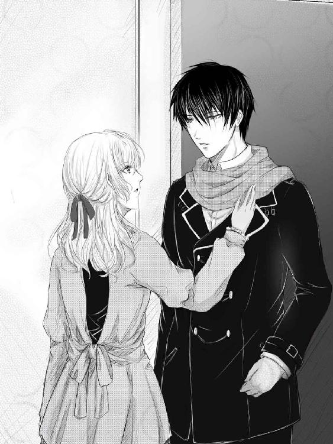
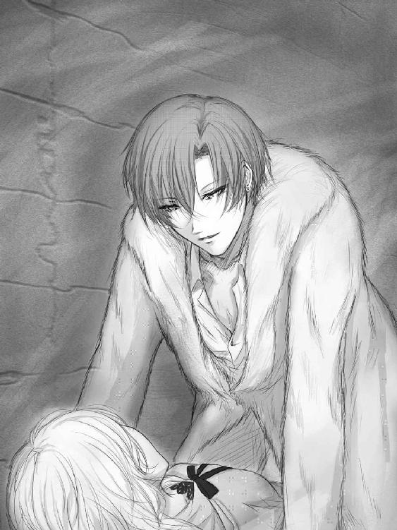
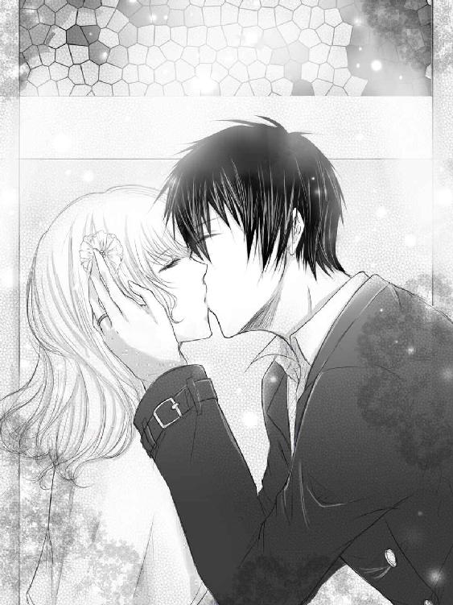
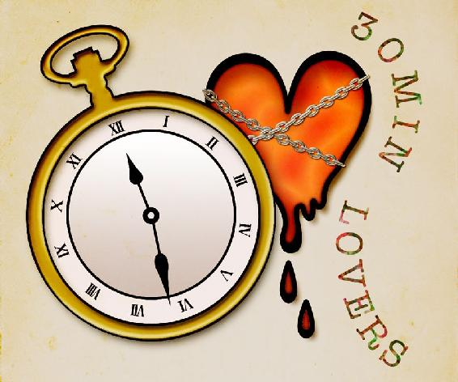

| 見える私と見えないあなた3 (30MIN LOVERS) | |
| 川島千夜 | |
見える私と見えないあなた ３
見える私と見えないあなた ３ ＊ 目次
★prologue★
「じゃ......始めるね」
「ああ............」
白く柔らかなミコトの手に、一回り大きい、節の目立つ白い手が重なる。
彼女はアギトの体温を背中で感じながら、手を伸ばしていった。
ミコトが手を伸ばすにつられ、彼女の手の上に手を重ねていたアギトの腕も伸びていく。
二人の手の先には、魔法陣が描かれた白い紙が置かれていた。
ロウソクの灯りだけの薄暗い部屋の中で、ミコトとアギトは慎重に呼吸を合わせる。
「春日屋ミコトの名で命じます。お願い......来て、綾女クロード......」
「鬼神・マタイ・アギトの名で命ずる。来てくれ、東条小里弥」
祈りの言葉......魔であり鬼に命じる言葉を発し、二人は指先から滲み出ていた小さな血の粒を、白い紙の魔法陣の上にこすりつけた。
複雑に描かれた魔法陣の上に、二本の赤い筋が伸び――――。
「..................」
「..................」
静かな時間が、無駄に流れていった。
ピクリとも変化のない魔法陣。
いたずらに、ロウソクの香りだけが部屋に充満し、やがてアギトは諦めたようにため息をついた。
「失敗だな」
「うん......なかなか上手くいかないね」
ミコトは、自分の手を握ったままのアギトを見上げ、残念そうに口を尖らせた。
上背のあるアギトは、そんな彼女の肩を抱き寄せると、ドサリと、すぐ後ろに置いてあった椅子に座り込んだ。
つられて、彼のひざの上に腰を下ろすミコト。
いつもなら照れて顔を赤くするところだったが、今はそんな雰囲気にもなれない。
アギトはミコトの身体に腕を回すと、まるで抱き枕のように彼女を抱えて声を出した。
「使い魔を呼び出すなんて、上級の術者しかできないことだ。それに、本来エクソシストは使い魔なんて使役しない。集められる資料が、圧倒的に少なすぎるんだ」
「東条さんなら式神だし、私の力でどうにか......って思ったけど、やっぱり私、術を使うには向いていないみたいだしね......はぁ......」
「使い魔も式神も同じようなもので、西洋と東洋で呼び方が違うだけだ。結局のところ......俺の力不足が原因だろう。ミコトのせいじゃない」
アギトはそう言うとミコトの手をとり、血の滲む彼女の指先を見つめた。
「......すまない。召喚術を試すたびに、痛い思いをさせてしまって......」
「ううん。ピンで突っついただけだし、大したことないよ。それにアギトだって指先突いてるじゃ――――ア、アギト!?」
ミコトは指先から伝わる熱く湿った感触に、声を裏返した。
血の滲むミコトの指先を、突然アギトが咥えたのだ。
長いまつ毛に縁どられたまぶたを伏せ、甘く指先を吸うアギト。
ミコトの顔が今度こそ、みるみる赤くなっていく。
「や......ちょ、あのっ」
「消毒を兼ねて、舐めたほうが早い」
「でもアギト、刺す前に、ピンをめちゃくちゃ消毒してたし、大丈夫だよ。本当に大した傷じゃないんだし......」
「そうか？」
コクコクと、顔を赤くしたままうなずくミコト。
アギトは少しだけ名残惜しそうな表情を浮かべたものの、ミコトの手を離すと、ロウソクの灯りに揺れる魔法陣に目を向けた。
「次は成功させたいな」
「うん......早く会いたいもんね」
そう言ったミコトはアギトの肩に頭を預け、いつかの友人たちに思いを馳せたのだった――。
★To France★
まず、匂いが違った。
日本が濃い緑と磯の混ざったような匂いだと表現するなら、ここはバターと蜂蜜の混ざったような、重く甘い香りだと表現したくなる。
ミコトは初めて降り立ったフランスの地で、栗色のゆるいウェーブのかかった長い髪を揺らし、異国の匂いを胸いっぱいに吸い込んだ。
「海外旅行だなんて、本当に大丈夫だったのか？」
ミコトの後ろで、黒い法衣を着た彼氏――アギトが少し心配そうに呟いた。
黒く短い髪。白い肌に、整った目鼻立ち。人目を引く濃い桔梗色の瞳が、黒く長い法衣に映え、アギトの第二の故郷であるフランスの地でも、道行く人々の目線を集めていた。
そんな彼を見上げ、ミコトは肩をすくめた。
「お母さんは『婚前旅行!? お土産はチーズでいいわよ』って、笑顔で見送ってくれたから、たぶん全く問題ないと思う......」
「そうか......平常通りでよかった」
「ふふ。お父さんは『まさか、そのまま式を挙げてくるとか、ないよな？』って、ちょっと心配していたけどね」
「あー......やっぱり直接俺から言った方が良かったな」
「いいの。どうせお父さんの意見は、九割五分無視されるものだから」
苦笑するミコト。
そんなミコトの隣に立った、第二の黒い人影が声を出す。
「いや、いっそ、ここで式を挙げるのもアリだなっ!!」
「司祭様、何を言い出すんですか!?」
飛行機の中で爆睡し、元気そのものといった様子のアギトの父、鬼神健介は、息子と揃いの法衣を風に揺らし、一人うんうんとうなずいていた。
「だってお前ら、元々はミコトちゃんの卒業を待って、結婚する予定だったんだろ？ それが今じゃ、春も夏も過ぎて、冬だぞ」
そう言って司祭は葉っぱ一枚残っていない、寒々しい街路樹を見上げ言葉を続けた。
「というか、今年も後数日で終わるんだ。このまま日本に帰っても、聖誕祭やら新年会やらでまた暇がなくなるからな、だったらフランスで海外挙式とシャレ込むのも悪くはねえと思うんだよ」
「......誰のせいで式が遅れたと思ってるんだ......」
アギトがじろりと司祭をにらむ。
アギトも長身だが、司祭も彼を微妙に上回る長身なため、二人が口論になると、小柄なミコトにとっては怪獣大戦争に巻き込まれた気分になる。
空港を出てすぐにケンカ......だなんてことにならないよう、ミコトは祈るように二人を見つめていた。
......が、司祭は息子ににらまれたことも気にせず、肩をすくめると、少しホコリっぽい道を歩き始めた。
慌ててついていくミコトとアギト。
「仕方ねえだろ。俺が司祭から司教にランクアップしようってのに、日本じゃその手続き......ってか、許可が下りねえんだ。こうなったら、俺を神父に認めてくれたフランスの教会に直接殴りこみ――じゃなくて、直訴するしかねんだよ」
「司祭様、微妙に不穏な言葉が混ざっています......」
「だが......どうして日本で許可が下りないんだ？ 表向き、日ごろの行いは良いはずだろ」
「............いや、ぶっちゃけて言うと、俺の裏家業の方が影響して、日本だと話が通りにくいってことがあるんだけどな。ほら、教会関係者だからって、みんながみんな、エクソシストを容認しているってわけでもないからな。その点、本場の教会なら通りはいいから」
「ああ......確かに......」
ミコトは苦笑を浮かべ、そっと自分の目に指を伸ばした。
霊の見える能力。霊の声を聞くことができる能力。
怖がりで、ホラー映画すら嫌いだった自分だが、この力のおかげで、エクソシストであるアギトの手伝いができるようになったのだ。
そう、はっきりと霊を見ることのできない、アギトの手伝いが......。
「アギト、お前だっていつかはあの教会を継ぐんだ。司祭になる試験を受けた方がいいんじゃないか？」
父のアドバイスに、アギトは小さく首を振った。
「俺は裏方で結構」
「裏方ねぇ......。ま、確かに妻帯者じゃ助教より上になるのは難しいしな」
「..................」
神父という難しい立場にいながらも、ミコトと付き合うことを決めてくれたアギト。
その彼が、自分のせいで堂々と教会を管理する立場に立てないことに、ミコトの胸がチクリと痛む。
ワンピースの裾を見つめ、うつむき加減に歩くミコトの肩に、トン......と柔らかい重さがかかった。
「......アギト？」
ミコトは、自分の肩を抱きながら歩くアギトに向かって、小さく首をかしげた。
普段は無表情なアギトの顔に、微かな笑みが浮かんでいる。
「俺はミコトと一緒にいるほうがいい。例え、神父を辞めることになったとしても、お前が気にすることはない。それは俺が選択したことなんだから」
「......うん!! ありがとう」
口元を緩ませるミコトの頭を、アギトがその細い手でぐりぐりと撫でる。
その様子を目の端で見ていた司祭は、つまらなさそうに口元を曲げた。
「俺、本気で邪魔っぽいよなー」
「ああ、そうだ」
「一ミリの否定もしないとは、いい息子をもったもんだよ」
「職業柄、嘘がつけない」
「え......アギト、結構、依頼者に嘘を言うよね？ この間も座敷童がいるお家に、除霊も説明も面倒だからって、気のせいですよとか......」
「あれは方便だ。ほっておいた方が向こうのためにもなるが、説明が面倒だったしな......」
「お前も俺に似てきたな」
「......コホン」
気まずそうに咳払いをしたアギトは、改まった様子で父を見た。
「話を戻すが、正直、親父が邪魔なことは確かだ」
「さっきから、父親を邪魔呼ばわりしやがって。だったら、ついて来なきゃよかったじゃねえか！」
「クロードと東条......あの、狐とコウモリの使い魔を放った者たちの正体が気になる。俺のカンでは、彼らは母親を探していたような気がする。母親を探しだし、守れと言われていたような......」
「..................」
「だから、母方の親戚筋にも話を聞いてみたいし、教会の資料もできる限り見てみたい。それもあって、ミコトを連れて、フランスまでついてきたんだ」
「堂々と、『俺の手伝いできたわけじゃない』と言っているように聞こえるんだが......」
「当たり前だ」
「この親不孝息子め......」
こめかみをひくつかせる司祭に気がつき、ミコトはなだめるように言った。
「ま、まぁ、資料探しの合間でよければ、ちゃんと司祭様のお手伝いもいたしますから。もしかしたら、私たちの力不足で、使い魔を呼び出せないのかもしれませんし......」
「力不足というのは否めないな。俺ですら、悪魔どころかインプ一匹召喚できねえんだ。お前らみたいな新参者に、あんな強い使い魔を呼び出されてたまるかってんだ」
「強い......んですか？ あの二人............」
ミコトは夏に出会った、狐とコウモリの使い魔を思い返した。
彼らは誰か（恐らくアギトの母）を探している最中、ひよんなことからアギトとミコトを助けてくれたのだ。
そのためか、力を使い果たした二人の使い魔は、人のあずかり知らぬ世界へと還り、残されたのは狐の形に折られた白い紙と、割れた黒檀のガーゴイルの置物だけとなってしまったのだ。
「強いだろうよ。あれだけ自分の意思を持った使い魔だ。大昔はさぞかし名のある妖怪として、人間様に悪さを働いていたんだろうな。そんなやつらを、エクソシスト初心者のお前らが扱えると思っているのか？」
「うーん......」
ミコトは司祭の言葉にしばし頭をひねっていたが、やがて、その小リスのような顔に笑みを戻すと、あっけらかんとした調子で言った。
「クロードさんと東条さんは友達ですから。きっと大丈夫です！」
「......友達？ 使い魔と？」
「はい。色々意地悪もされちゃいましたけど、でも、彼らは私とアギトのことを助けてくれました」
「助けてくれたって、そりゃ......アギトがたまたまあいつらの探していた人間と同じ匂いがしたから、ってだけで......」
「それでも......一緒にお話して、一緒に戦った仲間ですから」
「............」
ミコトの言葉に呆れて、なにも言えなくなる司祭。
だが、そんなミコトの肩に手を乗せたまま、アギトはドヤ顔に近い表情を父に向けた。
「と、言うわけだ。ミコトの仕事先の古書店で手に入る文献じゃ、ろくな参考にもならないし、もし、母親の親戚で心当たりがあるような者がいたら、そこから辿った方が早そうだ」
「あーあー、勝手にしろ。でも、マリアの親戚には、俺は会えねえからな」
「マリアさんって、アギトのお母様ですよね？ 司祭様はお会いにならないんですか？ 義理のご家族なのに......」
「ミコト――――」
アギトはそっとミコトの耳に顔を寄せ、小さな声で耳打ちした。
「本当は、母親が他界した時点で、俺はフランスに引き取られるはずだったらしい。それを親父が自分で育てるからと強く拒否したらしく、以来、母方の親戚とは絶縁状態らしい......」
「あ......ごめんなさい......っ」
ミコトはいけないことを聞いてしまったと思い、思わず口に手を当てて司祭を見た。
駅へと向かう、広い道を歩く司祭。
彼はミコトのことを気にした様子もなく、頬に残る一本筋の傷を撫でていた。
「ったく、なにが隣人を愛せだよな......」
★★★★★★
荘厳であり壮大。
天井にまで細かな彫刻が施された、圧倒的な華美を誇る大きな教会。
鬼神家が管理している、木造の清楚な教会ばかり見慣れていたミコトは、本場の凝った造りの教会に萎縮しつつ、十字架の前で跪いていた。
ステンドグラスから零れた光が、彼女の白いコートを七色に染め上げている。
「ミコト......」
祈るミコトの後ろから、聞き慣れた優しい声が響く。
立ち上がって振り返れば、すぐ後ろにはアギトの姿。
彼は、ステンドグラスの光を浴びて立つミコトの姿を愛おしむように見つめていた。
「アギト？」
「あ......すまない。天使が降りてきたように見えたものだから」
「へっ？」
アギトの言葉を理解しきれていないミコト。
アギトは優しく微笑むと、そんな彼女の髪を軽く撫でた。
「ずっと祈っていたのか？」
「うん。司祭さまが無事司教になれますように......って」
「あいつは欲しいと思ったものは全て手に入れる人間だ。目的のために手段を選んだことはないし、ほっといても大丈夫だ」
「......それ、聖職者としてどうなんだろう......」
「俺もどうかと思が......」
アギトは小さく十字を切り、祭壇に向かい形ばかりの礼をすると、ミコトの手を握り、歩き出した。
「ここは寒い。風邪を引く前に出るぞ」
「あれ、司祭様は？」
「裏でお偉い方と話しているが、長引きそうだ。俺たちは俺たちで、別行動をとった方がいい」
「そう......やっぱり色々問題があるのかな......」
「..................」
心なしか、手を引くアギトの歩みが早い。
いつもなら身長差のあるミコトを気遣い、かなりゆっくり歩いてくれるはずなのだが......。
ミコトは、置いていかれないように半ば早足で歩き、そして――気がついた。
教会から出る直前。その出入口ですれ違った、アギトと似たような法衣を着た聖職者――おそらく、この教会の神父であろう者が、ミコトの手をつなぐアギトのことをジロリと、軽蔑を含めたまなざしで見ていったのだ。
（私たち......歓迎されていないみたいね......）
アギトが急いで教会から出ようとした理由がわかり、ミコトはつながれた手を思わず離そうとしてしまった。
「気にするな」
緩めたミコトの手をさらにきつく握るアギト。
教会の門を抜け、人口六万人ほどの街に出た二人。
観光と農業で経済を回すこの街は、おとぎの国のような美しい街並みで、ミコトの目を楽しませてくれた。
しかし......そんな二人は、教会にいた時よりも好奇の目にさらされてしまっていた。
「Ces deux Japonais？」
「Père a apporté femme」
道行く、地元の人と思わしき人々が、二人を見ては口々に何かをささやき合っている。
観光地と言ってもシーズンも外れ、観光客の少ないこの地方では、黒い法衣のアギトとミコトの組み合わせは目立つらしい。
日本でも好奇の目で見られることは多々あったが、ここではどこか侮蔑を含めた目線も感じ、ミコトは居心地の悪さを覚え、目を伏せたままアギトに声をかけた。
「アギト......。私、フランス語わからないんだけど、なんかあまり良いことを言われている気がしない......」
「何度も言うが、気にするな。俺たちはなにも悪いことをしているわけじゃない」
「う......うん......」
そう言いつつも硬い表情をしているアギトに言われ、ミコトはぎこちなくうなずいた。
ミコトは知っていた。
アギトが表情を硬くしているときは、大抵、面白くないことが起こっているときだと。
だが、彼はビクビクと歩くミコトの手を引き、暮れる西日の中、石畳の上を堂々と歩いていった。
「俺としては、ミコト、お前の方が心配だ」
「私は大丈夫だよ。飛行機の中でもたっぷり寝たし、時差ボケもしてないもの」
「出されたワインを丸々一本飲めば、いくらなんでも爆睡するだろう。あのときは別の意味で少し心配した」
「ごめんなさい。アギトも司祭様もあまり飲まないものだから、もったいないかなって思って......。それにほら、普段、教会でワインがよく出るから、私、ワインには強くなっちゃって」
「......もしかして、ミサで余ったワイン、全部飲んでいたのか......？」
「余って捨てるのももったいないかなって思って......あまり司祭様ばかりが飲んでいても、身体に悪いかと思ったし......」
「顔色一つ変わってなかったから、今まで気が付かなかった......。というか、俺が心配しているのはそこじゃない。ミコト、そろそろ日が暮れるんだぞ」
「あ............」
いつかの、誰かの言葉がよみがえる。
「悪魔たちが活発になり、霊が目覚める夜が来る......」
アギトの言葉と式神......東条の言葉が重なる。
「東条さんは鬼って言っていたけど......」
「鬼も悪魔も同じだ。人に悪意を持ち、人の悪意を利用する、ろくでもない魂の塊だ」
「身も蓋もない言い方だね」
「エクソシストとしては、そう言わざるを得ない」
ミコトは小さく苦笑を浮かべると、アギトと指を絡め合い、速度を落として夕暮れ時の古い街を歩いていった。
レンガ作りの古い建物。
大昔、馬車が通ったであろう、轍の残る石畳。
オレンジ色の街灯がぼんやりと灯り始め、恋人同士が歩くには最高のシチュエーションだ。
しかし......古い街には歴史があるものだ。
栄えある、明るい歴史だけではなく、住人がひた隠しにするような、陰惨で暗い歴史が。
「あ............」
突然、ミコトが足を止めた。
ホテルに向かう途中の道。石畳に囲まれた噴水を中央に置く、広場。
その広場で、巨大なギロチンと、目隠しをされたドレス姿の貴婦人、そして、黒い頭巾をかぶった男がミコトの眼の中に飛び込んできたのだ。
すすり泣く貴婦人。
容赦なく彼女をギロチンにはめ込む黒頭巾の男。
それは、あっという間の出来事だった。
ミコトが呼吸を三つ重ねたときにはもう、貴婦人の頭上から巨大な刃が勢いをつけて落ちていっていたのだ。
噴出す血が石畳に広がり、貴婦人の頭が体から離れる。
頭部はまるでボールのように弾みをつけて転がり、ミコトの足先にぶつかって止まった。
「あ......あ......」
唇を振るわせるミコト足元で、貴婦人の目隠しがはらりと落ちる。
見開くグレーの瞳はミコトの顔を映しこみ、血を流す口元は......ゆっくりと笑みの形に動いていき――。
「き......き......きゃあああぁぁぁぁっ！」
「ミコトっ!?」
アギトは叫ぶミコトの頭を引き寄せ、自分には見えない、暗く、陰鬱な世界を見せないように、自身の胸に強く抱いた。
「首......首がっ......！」
「首もなにもない、落ち着け......」
「アギトには見えないのっ!? そ、そこに、首を切られた女の人が――」
「俺にはなにも見えない。だから、害のある霊じゃない」
「あ......ああ......」
ミコトはポロポロと涙をこぼしながら、アギトにしがみついた。
アギトはミコトに比べ、はるかに『見える力』が弱い。
エクソシストでありながら、彼がはっきりと見ることができるのは、悪意を持った霊や、悪魔といった害をなすモノだけ。
見ることも、霊の言葉すら聞くことのできるミコトと違い、そこらに浮遊している霊や、死の瞬間を繰り返す思念は、アギトには見えないのだ。
「ご......ごめんなさい......。事故とかに遭った霊とかはよく見るんだけれども、こんな......こんな酷い瞬間を見るのは......初めてで......」
「古い街にはあることだ。すまない、ここらの歴史を調べてくるのを失念していた」
「アギトのせいじゃない......こんな広間で、斬首なんて......」
「日本では、処刑場や首塚なんかは予め調べて、避けるようにしていたんだが......」
アギトはミコトの見たであろう事態を想像し、詫びるように彼女の背中を優しく撫でた。
「......おねえちゃんたち、どうしたの？」
アギトの胸に顔をうずめていたミコトの耳に、たどたどしい、不器用な日本語が聞こえた。
「......あなたは......？」
恐々顔を上げたミコトの足元に、グレーの瞳のすぐ上で金色の前髪を切りそろえた、まるで人形のような少女が首をかしげて立っていたのだ。
少女の足の真下で、半透明の貴婦人の首が、少しだけ不愉快そうな顔をして転がっている。
「あ、あの。あなたの足元に――」
「おねえちゃん、ぐあいわるいの？」
畳み掛けるように聞いてくる少女を前に、ミコトは出しかけた言葉を飲み込みんだ。
（彼女には見えないんだ......無駄に怖がらせてはダメ......）
ミコトは引きつった笑みを浮かべ、言った。
「心配してくれてありがとう。日本語、お上手ね」
「うん、わたし、パパのおしごとのかんけいで、にほんでうまれたの。だからにほんごわかるの」
「そうなんだ。あの......もう少しだけ、右にずれてもらってもいい？」
「？」
不思議そうな顔をしながらも、横に移動する少女。
彼女の足の下敷きになっていた貴婦人の顔が、少しだけほっとしたようにミコトを見上げる。
「ねえ、おねえちゃんぐあいわるいの？ それとも、こわいものでもみたの？」
「こわいもの......かな......」
ミコトは、いまだに血を広げ続けている貴婦人の頭から目を逸らし、喉元にせり上がった酸っぱいものを飲み込んだ。
「吐きそうか？」
「大丈夫......」
心配するアギトと、口を押さえるミコトとを、過ぎ行く人たちがじろじろと眺めては去っていく。
そんな中で足を止めてくれた少女に、ミコトはありがたいものを感じていた。
「あなたは一人でここにきたの？ もうすぐ夜だよ」
「ううん。グランフレールときたの。おトイレいくから、まっててっていわれたの」
「ぐらん......ふれーる？」
彼女の言葉に首をかしげたとき、タッタ......と軽い足取りが近づいてくることに気が付いた。
「Ou faites-vous？」
近づいてきたのは、少女とよく似た金髪の青年だった。
かなり年は離れているようだが、彼が彼女の保護者なのだろう。
その金髪の青年は、青い顔をしたミコトに目を向けた。
「......日本の方ですか？ エディット、だめじゃないか、知らない人に声をかけちゃ」
彼の口から、流暢な日本語が流れる。
「でも、おにいちゃん。このひとぐあいわるそうだったから」
「そうなんですか？」
「あ、はい。すみません、ちょっとめまいを起こしちゃって。そしたら、彼女が心配してくれたんです......」
「顔色がよくないですね。近くに僕の勤める病院があります。よければそこで診察しましょうか？」
「お医者さんなんですか？」
「ええ、父と共に、日本で医学を勉強してきました。両親はまだ日本に残っていますが、僕はこっちに戻って、観光客が体調を崩した際の、通訳ができる医者として仕事をしているんです。妹は日本で生まれたので、日本語のほうが上手いくらいなんですよ」
そう言って彼は、ミコトのほほに手を当てた。
エディットと呼ばれた妹と同じ、淡い灰色の瞳がミコトの目を捉える。
「......脱水......という感じでもなさそうですね......」
彼の顔が近づくにつれ、ミコトの肩を抱いていたアギトの手に力がこもっていくのがわかる。
ミコトは苦笑を浮かべ、医師の手からそっと身を引いた。
「軽い貧血だと思います。ホテルで少し休めば大丈夫です」
「そうですか？ この広場は、来ると体調を崩す方が結構多いんですよ。昔は首切り広場......だなんて呼ばれていたらしいですし、なんか良くない気とか流れているのかな......なんて。はは、オカルトめいたことを言ってしまって、すみません」
「......首切り広場......」
「え......あ、大昔ですよ。ほら、魔女狩りとかが流行していた時代の話です」
冗談のつもりで言った言葉を真剣に捕らえられ、軽く動揺する金髪の医師。
ミコトとアギトは顔を見合わせ、示し合わせたように、互いに苦笑を浮かべた。
「行こうミコト。歩くのが辛いようなら、抱いて歩いても――」
「だ、大丈夫だからっ。えっと......エディットちゃん、心配してくれてありがとうね。すごく、嬉しかったよ」
「うん、またきもちわるくなったらいってね。わたしのグランフレールはおいしゃさんなんだから」
「ふふ、ありがとう。ばいばい」
「ばいばい!!」
極力周囲を見ないように、下を向く歩くミコト。
アギトはそんな彼女をかばうようにして抱きかかえ、金髪の兄妹たちに背を向けた。
オレンジ色の薄ぼんやりとした街中を歩く二人。
食事時なのだろう。あたりに人の気配はなく、広場から抜けた道はまるで森の中の、公園の小道のように静かだった。
先ほど目にした残酷なシーンが頭の中でぐるぐるとまわり、ミコトの吐き気がなかなか治まらない。
「......少し休もう」
時折嘔吐くミコトを見かね、アギトは声をかけた。
「......うん、ごめんね......」
アギトは道の脇にあるベンチを見つけ、ふらふらしているミコトをそこに座らせた。
細い肩を震わせ、切なげなため息をつくミコト。
「情けないよね。まだ、慣れないなんて。幽霊が見えるようになって、もう、一年は過ぎたっていうのに......」
「お前が何を見たかはわからないが、きっと酷く残酷な光景を見てしまったのだろう。そんなもの、見慣れるはずもないし、見慣れてはいけないものだ」
「うん......でも......」
「むしろ、お前が見たモノを俺も見ることができれば、少しはお前のその辛い気持ちを、分かち合えることができるのにな......」
「アギト......」
ミコトは、オレンジ色の街灯に照らされたアギトの姿を見た。
隣に座る彼は修行者のように険しい顔をして、ミコトの手をきつく握っている。
ミコトの薬指には、アギトから渡された銀の指輪が光っている。彼女はその輝きを見つめ、肩の力を抜いた。
「ううん。二人して同じ世界を見ていたら、きっとつまらないよ」
「つまらない？」
「うん。アギトにはアギトの世界が見えていて、私には私の世界が見えていて。それぞれが見てきたものを伝え合えば、二倍、色々なことを知ることができるじゃない」
「......だがお前が見ている世界は、暗く、悲しい世界なのだろ？」
「ちょっとだけね......。でも、たまに、すごくきれいな世界が見えることもあるんだよ」
「きれいな世界？」
「そう、早朝に森に出かけたりするとね、今まで見たこともなかったような極彩色の鳥や、不思議な形の大きなお花が見えたりするの。きれいな白い羽が、たくさん空から降ってくるのも見たことあるし」
「......それ、天国が見えていないか......？」
「え、そうなのかな？」
驚き顔のミコトを見て、アギトは呆れたように口を開けた。
「勘弁してくれ。まだお前を、神にくれてやるつもりはない」
「ふふ、大丈夫。私はずっとアギトのそばにいるから」
「ああ。お前は俺のそばにいてくれ。神だろうが、死神だろうが、お前を勝手に連れて行くのは許さない」
アギトは低い声でそうささやくと、ミコトの頬に手を当てた。
暖かく、やわらかい感触に、ミコトの顔が自然と上を向いていく。
冷たく澄んだ空気が、互いの吐く息を白く染め、それが重なり合うほどに近寄っていく。
視界いっぱいにアギトの紫色の瞳が近づき、やがて彼との唇との距離がゼロに――――。
「......マリア」
『!?』
突然、二人の前から声が響き、ミコトは純粋な驚きで、アギトは自分の母の名を呼ばれた驚きで顔を上げた。
「......やっぱりマリアだ......」
再びつぶやいたその人は、こげ茶色の上品なスーツに身を包み、アギトに良く似た顔に驚きの表情を浮かべて立っていた。
「あなたは......？」
ミコトと顔を合わせたアギトは、立ち上がりながら聞いた。
一方、ミコトはアギトの後ろに隠れながらも、そっとその人の顔を見る。
オレンジ色の街灯に照らされたその人物は、艶のある黒い髪を短めに切り、品の良いめがねをかけていた。
そのメガネの奥に見える瞳は目の覚めるような鮮やかなアクアブルーで、アギトとは違う色味だったが、それでも目鼻立ちが互いに良く似ている。
アギトよりほんの少しだけ背の低いその人物は、アギトのことを上から下まで見つめると、その口元に大きな笑みを浮かべて両手を広げた。
「アギト君......アギト君だよね？」
「どうして俺のことを？」
「やっぱり!! 似てると思ったんだ、紫色の瞳なんてなかなかいないからね。そっくりだよ......マリア姉さんにそっくりだ！」
「マリア......姉さん？ じゃあ、あなたは......」
驚くアギトに、有無を言わさず近づいたその人は、大げさな素振りでアギトを抱擁すると、うれしそうに声を上げた。
「私はマリアの弟、エクトル・デ・モンターギュ。日本で言う叔父にあたるのかな？ ともかく、会えてうれしいよ。こんな奇跡が起こるだなんて、神に感謝しても、し尽くせないくらいだ！」
まくし立てるように言った彼は、バンバンとアギトの背中を叩き、口を大きく開けて笑った。
どうやら、気さくな人のようだ。
ミコトは少しだけ安心すると、叔父からの豪快な歓迎に体を硬直させているアギトを見上げた。
「思っていたよりも早く見つかって良かったね」
「あ......ああ......」
「おや、こちらのお嬢さんは？」
「はじめまして、私はアギトの彼女――」
「彼女は俺の婚約者の春日屋ミコトです。母、マリアの件で調べたいことがあり、一緒にフランスに来てもらいました」
「あ......ちょ......っ？」
ミコトの言葉尻を食って、アギトは叔父の前でミコトの肩を抱いた。
アギトの目が、挑発するようにエクトルの顔を捉えている。
エクトルは「ほほう......」とつぶやき、ミコトのことを眺めている。
――彼もこの街の住人と同じように、神父であるアギトに婚約者がいることを否定的な目で見るのであろうか。
それを、アギトは試しているのである。
しかし、緊張の時はすぐに終わった。
エクトルは、アギトを抱擁したときのような大きな微笑を浮かべると、両手を挙げてミコトをハグしようとしたのだ。
「かわいいっ。まるで小リスのような娘じゃないか！」
「ちょ、ちょ、ちょ、ちょっ!?」
「一々抱きつかないといけない風習でもあるんですかっ？ 人の婚約者に抱きつかな――やめろっ!!」
「なんだね。やっぱりキミも、日本の控えめな風習にさらされてしまったのか......可愛い子を見つけたら、まずは抱きしめるのがフランス式――」
「嘘を言わないでください」
叔父に突っ込みを入れたアギト。
しょぼんと肩を落とし、それでもミコトの手を握りたがっているエクトルを見下ろして、アギトは別の言葉をかけた。
「あの......俺を見ても、追い返す気はなかったんですか？」
「なんでだい？ キミは可愛い私の甥っ子じゃないか。むしろ会える日を待ち望んでいたんだよ。この辺で日本人を見かけると、もしかして......って思ったりしてね。でも、ここまでマリアに似ているとは思わなかったよ」
「アギトって、そんなにお母様に似ているんですか？」
「はは、ここまで目つきは悪くなかったけどね」
「............」
「でもね............」
エクトルは懐かしむようにアギトの顔を見ると、優しげに微笑んだ。
「目の色とか、口元とか、本当にそっくりなんだよ。あの男は確か、黒い髪だったからね、どちらに似たんだかわからないけど、その濡れたカラスの羽のような黒い髪もマリア姉さんそっくりで......ああ......懐かしいなぁ」
優しげな表情からこぼれた『あの男』という言葉に、小さな引っかかりを感じたものの、思っていたよりも受け入れられそうな様子に、ミコトはほっと胸をなでおろした。
「おっと、こんなところで立ち話も難だよね」
エクトルが、ようやく思い出したように言った。
「この近くにシャトーがあるんだ。マリア姉さんのことで来たんなら、夕飯でも一緒に食べながら話さないかい？」
「......彼女も一緒にいいですか？」
「もちろん、歓迎するよ」
そういったエクトルは、アギトの背中に隠れたままのミコトに、軽いウインクをしたのだった。
★★★★★★
威厳があるというべきか、温かみがないというべきか。
エクトルに案内されて着いた場所は、河を見下ろす場所に位置する、石造りのシャトーだった。
「確かに、シャトーって言っていたような記憶はあるけど......」
呆けたように天井のシャンデリアを見上げるミコトに、お手伝いらしき、金髪のメイドの女性がコートを受け取りに近づく。
メイドの横には金髪を七三分にした執事が折り目正しく頭を下げ、ミコトに別世界を見せつけている。
「はは、ここの裏を抜ければすぐ、ブドウ畑が広がるような田舎さ。土地なんか有り余っているよ」
「とは言っても、お城をお持ちでしたとは......」
「我がモンターギュ一族は、この東地区を五百年以上昔から管理しているんだよ」
「ということは......伯爵とかなんですか？」
「いや、モンターギュ家は『マルキ』だよ」
「マルキ？」
「侯爵だ」
首をかしげるミコトに、アギトが意味を教えた。
「すごいですね。ここにいたら、もしかしたらアギトは王子様だったのかな......」
「はは、侯爵はプリンスにはなれないよ。でも、キャルディナル......ええっと、日本語で言う、枢機卿も何人か先祖にいてね、今でもつながりは濃いんだよ。だから、もしここでアギト君が聖職者を目指していたら、大司教くらいには簡単になれただろうね」
エクトルの言葉に、どこか試すような響きが含まれている。
「............俺は今のほうがいいんで」
アギトは冷めたような目を向けて、いつものように淡々と言葉を返した。
「でも、キミは助祭だろ。立場的にも収入的にも不自由じゃないかい？」
「生きる上では、このポジションのほうが自由でいられますから」
「ふむ......それは、そこの可愛い婚約者との恋愛事情を指してのことかな」
「え、あ、わ、私ですか!?」
突然、会話に借り出され、動揺するミコト。
エクトルはビクビクしているミコトににっこりと微笑むと、彼女の肩に手を置いた。
「責めているわけじゃないんだよ。恋愛は自由さ。むしろアギト君が聖職者の道を選びつつも、生命の根源たる愛を貫こうとしているのは、すばらしいことだと思う。それに、モンターギュ一族も私で最後になろうとしている。もし、マリア姉さんの血を引くアギト君が......ひいては、アギト君の子供が跡を継いでくれるならば、私も安心して隠居生活が楽しめるというものだよ」
「え......こ、子供っ!?」
予期せぬところからの攻撃に、免疫のないミコトの顔が赤くなる。
「おや？ キミはずいぶんと......ああ、なるほど。うん、うんうん。いいことだ、結婚するまで純潔を保つだなんて、本当に神の信者としてあるべき姿だ。アギト君もその婚約者も、なんてすばらしい子たちなんだろう!!」
「............」
大げさな身振り手振りで神を崇める仕草をするエクトル。アギトはそんな彼を無言で見つめ、ミコトはうろたえながらも、案内された食堂へと入った。
ミコトが入った食堂は、テレビや映画で観るような長いテーブルと豪華な椅子、そして、きらびやかなシャンデリアで飾られた、テンプレート通りのお城の食堂であった。
白と黒の大理石でデザインされた床が城主の趣味を物語っていたが、金の飾りの付いたピンク色の壁紙が、家族的な優しい雰囲気作りに役立っている。
食卓に着いたミコトは、そのピンクの壁に油絵が飾られていることに気が付いた。
アギトに似た二人の子供の肖像画である。
一人は優しそうな顔をした、紫色の瞳の女の子。もう一人は、自分より少し背の高い女の子の袖をしっかりと掴んだ、アクアブルーの瞳の男の子。
「あれは............」
「Il est un enfant du Seigneur et sa sœur」
シャンデリアの落ち着いた明かりの下でワインを注いでいたメイドが、ミコトの目線に気がつき、何かを説明した。
「え......あの、なんて......？」
「あれは、俺の母親と、叔父さんの子供のころの肖像画だそうだ」
メイドの言葉をさらりと通訳するアギト。
「そうなんだ......こう見ると本当にアギトとお母様って似ているね。もちろん、男女の違いはあるし、お母様はすごく優しいそうだけれども............って、さっきから気になっていたんだけど、アギト、フランス語わかるの？」
「一応な。大学でざっと学んだだけだが」
「すご――――」
「すばらしい!!」
ミコトの言葉をさえぎるように、大きな声でアギトを褒めるエクトル。
エクトルの動きにつられたテーブルの上で、ワインがぐらぐらと揺れている。
「フランス語もわかるというなら、ぜひ、こちらで暮らしてはどうだ？」
「いえ......あんな父親でも、一人置いていくことはできませんし、ミコトとの結婚も控えていますから」
やんわりと断るアギトに、エクトルは露骨に眉をひそめていく。
「またあの男か......全く、なにかにつけて私の邪魔をする」
先ほどまでの愛想はどこへやら。エクトルは忌々しそうに出された前菜にフォークを突き立てる。
「エクトルさん......？」
「ああ、これは失礼。私としたことが食前の祈りも忘れて、料理に手をつけようとしてしまったよ」
「......父はまだ、この家では受け入れられてはいないのですか？」
「..................」
アギトの静かな声で、食堂に沈黙が下りる。
言葉を探すようにワイングラスを回していたエクトルは、やがて、諦めたように首を縦に振った。
「姉が教会の手伝いとして日本に行くと言ったとき、私も、父も母も反対したんだよ。それでも、彼女は日本へ行った。そして、キミのお父さん、健介に出会った」
遠い目で、壁に掛かった肖像画を眺めるエクトル。
彼が見ているのは幼い頃の姉、マリアの姿。
「私も姉さんが日本へ行ってすぐ、彼女を追おうと必死で日本語を学び、日本でも仕事ができるように、手配までしていたんだ。意外と大変だったけど、それでも、遅れること半年で彼女の元へ行けたんだ。だが......そのときすでに、健介がマリアの心を奪っていたんだよ」
「ですが、母と父はとても仲が良かったと聞きます。確かに父はたいした家柄でもなく、身分としてはつり合うものではなかったと思いますが――」
「たいした家柄どころか、彼は日本のマフィアだったんだ。キミはまだお父さんのすべてを知らないようだね」
「..................」
口を閉ざすアギト。
恐らく、彼もミコトも同じことを思っていただろう。
『やっぱり......』と。
司祭が時折見せる鋭い眼光を思い出し、ミコトはエクトルの言葉に妙な納得を覚えた。
「仲が良いのはいいことかもしれない。本人たちは幸せだったかもしれない。だが、残された家族はどうだ。父も母も、私ですら、妹の結婚式にも参列できず、妹の臨終すら知らされずにいたんだぞ!!」
「そんなはずは......父は、母に何かがあった際、絶対にお伝えしているはずです。いい加減で粗暴な父ですが、不義理なことをする人間ではありません」
「父を尊敬するのはいいことだが、私の父と母はマリア姉さんのことを思いながら晩年をすごし、死んでいったんだぞ。今では私が一人このシャトーに住み、姉との思い出に涙する日々だ」
エクトルは深いため息をついて、ワインを一口、口に含んだ。
「せめて......姉さんのお骨だけでも、モンターギュの墓に入れることができたら......」
「..................」
豪華な食卓を前に、気まずい沈黙が流れていく。
「で......でも......っ」
沈黙する二人に代わって口を開いたのは、アギトの隣に座るミコトだった。
彼女は緊張したように手を握り締めながらも、一生懸命に笑顔を浮かべてエクトルの顔とアギトの顔を交互に見やる。
「マリアさん......が、司祭さまと出会ったから、アギトは生まれてきたんです。私は、他の誰かではなく、マリアさんと司祭さまの息子であるアギトと出会えて、よかったって思っているんです。だから二人の出会いを......あまり酷く......というか、悲しい出来事のように言わないでください」
普段奥手なミコトが、一生懸命にアギトをフォローしようとしている。
頬は紅くなり、口元は緊張で引きつっている。それでも彼氏を庇おうとしているミコトを、アギトは感謝と愛情をこめた目線で見つめた。
「は......はは、それもそうだね。いや、参ったよ、さすがアギト君の恋人だ」
エクトルは自身の目元を片手で押さえ、肩を震わせて笑っていた。
「......叔父さん？」
ゆっくりと顔から手を離すエクトル。その顔は先ほどと同じような、愛想のいい笑みが浮かんではいたが、どこか......硬く、引きつったような笑みであった。
「いやいや、すまないね。まさかこんな娘さんに説教をされるとは思わなかったもんでね」
「す、すみませんっ。私、お説教なんてするつもりじゃ......」
「いいんだよ。確かに、アギト君に流れる血の半分は、あの男のものだからね。それにしても......彼は司祭になったのか......」
「ええ。今、中央教会で司教になるために手続きをしているところです」
「へぇ......妹をさらった、あの男がね......」
「..................」
エクトルの不吉な様子に、ミコトもアギトも背筋がピリピリするような嫌な感じを覚える。
だが、彼はニコリと微笑むと、手を叩き、メイドを呼んだ。
「気にしないでくれたまえ。姉さんには姉さんなりの気持ちもあっただろうからね。それより、いい加減食事にしよう。メイドたちが皿を抱えたまま待ちくたびれてしまっているよ」
「あ......すみません、その前にお手洗いを......お借りしても......」
もじもじと顔を赤くして言うミコトに、エクトルはワインを再び口に運びながら、うなずいた。
「ああ、迷いやすいから気をつけて。食堂を出たら一つ目の角を曲がって、中二階になっている階段があるからそこを下りて、右の二つ目のドアの向こうが、一番近いトイレだよ」
「えっと............」
「ミコト、一緒に行こうか？」
「い、いいよ、大丈夫。お手洗いくらい一人で行けるから！」
「そうか？」
心配顔のアギトに、引きつった笑みを向けると、ミコトは一人、食堂を出た。
広く、長く、そして薄暗い廊下が左右に長く伸びている。
同じ柄の壁紙が続き、ぼんやりとしたランプが点在している廊下は、どこも同じように見えてしまい、ミコトは迷宮に迷い込んでしまったような錯覚に襲われた。
「えっと、食堂を出て......どっちに曲がった角の階段だったか、言っていたっけ......？」
再び引き返して聞くのもためらわれたミコトは、ともかく階段の見える場所まで進んでいこうと、暗い廊下を歩いていった。
堅い御影石が敷き詰められた廊下の床は、ミコトの足音を反響させ、冷たい音を立てている。
カツン......カツン......という足音が何重にも聞こえ、誰かが付いてきているのではないかと、ミコトは何度も後ろを確認した。
「な......なんかお化け屋敷みたい......って、お化けだったら見えるはずだから、大丈夫......だよね......は......はは......」
久しぶりに、怖がりの虫がミコトの心臓を鷲掴みにする。
誰ともすれ違うことのない、暗く冷たい廊下。
建物の中だというのに吐く息が白くなり、.ミコトは両手で自身の体を抱くようにして歩いていった。
（......階段が見当たらない......行き過ぎちゃったかな......）
ミコトは廊下の途中で足を止め、大きな黒い蜘蛛が巣食う、古いランプを見上げた。
「......わぁ、あなた大きいね。巣を張ってるってことは、アシダカではないし......ジョロウグモの仲間かな？」
ミコトは、生気の感じられない廊下で生き物を見つけることができて、ちょっとした安堵を覚えた。
大きな黒い蜘蛛は八つの目でミコトを眺めていたが、害がないとわかると再び忙しく手足を動かし始める。
少しの間、その蜘蛛を見つめていたミコト。
しかし、懸命に獲物に糸を巻きつけていた蜘蛛が突然動きを止め、フルフルと小さく震え出したことに気が付いた。
「......あっ!?」
ミコトが小さく声を上げた瞬間、その蜘蛛は何を思ったのか、突発的に電球で熱せられたランプの中に飛び込んでしまったのだ。
ジュ......という嫌な音と共に、餌を残して炭と化していく黒い蜘蛛。
「......どうしたんだろう突然......。なんか嫌なものを見ちゃったな......」
ミコトは大きく体を震わせた。
廊下の先は闇に覆われ、突き当りの壁すらまだ見えない。
先ほどの気味の悪い光景も相まって、不安感がピークに達する。
ミコトは元来た道に戻ろうと、くるりとその顔を後ろに向け――――。
「ぎゃああぁぁぁぁぁぁぁっ!!」
二十二年間の人生の中で、最も大きな声を出して彼女は叫んだ。
「ひ、ひぃ......っ」
反響する自分の声にさらに腰を抜かし、ミコトは冷たい床の上に尻もちを付き、その『白い顔』を見上げた。
自分のすぐ後ろに立っていた、メイドの白い顔を。
「ご......ごめんな......さい......」
ミコトは、漏らさなかったのが奇跡に近いほどの恐怖を覚えながら、静かに佇むメイドに謝罪の言葉を告げた。
いつまでたっても戻ってこない自分を、探しにきてくれたのだろうか。
古めかしい、長いメイド服を着こなした彼女は、つめたく冷めた目で、床にへたり込むミコトを見下ろしていた。
暗いブルーの瞳。やや乱れた黒いまとめ髪。年齢的にも服装的にも、『メイド長』といったところだろうか。
手持っている古いランタンも、その姿にはしっくりきている。
「さ、探して......くださったんですよね？ えっと、本当に驚いてしまってすみません......って、言葉、わかりませんよね......あ、あは、あはは......」
気まずさと動揺で、ミコトは無意味な愛想笑いを浮かべ、ガクガクと足を震わせながら立ち上がった。
メイドは無言かつ、冷たい目線でミコトを見下ろし続けている。
ミコトはバカにされたような目で見られていることを承知で、へらへらと笑った。
「と......トイレ探していたら迷っちゃいまして......えっと、トイレ......トイレット......って伝わってるかな......トワレット......だっけ？」
ぶつぶつと呟きながら、もじもじしているミコトを見つめ、メイドは疲れたようなため息をついた。
ため息と共に黒い後れ毛が揺れ、それがくるりと回転する。
メイドは背中を向け、まるで『ついてこい』と促しているかのように、ちらりと肩越しにミコトに目線を送った。
「あ、えっと......ついてこいってことかな......？」
ミコトはおずおずと、歩き始めたメイドの後ろをついていく。
長い廊下の途中を曲がり、先ほどまでは気がつかなかった、壁と一体化しているかのような階段を下り、蜘蛛の巣で覆われた、消えかけたランプが並ぶ廊下へと誘われる。
メイドの持つランタンが左右に揺れ、自分の影が不気味に揺れているのが視界に入る。
「あの......こっち、本当にトイレですか？」
豪華だった食堂前の廊下とは異なり、窓もなく、灯りも乏しく、暗く湿った石畳がむき出しの通路を歩き、ミコトは不安に駆られて声をかけた。
しかし、メイドは足早に歩いていくだけ。
仕方なく口を閉ざしついていくも、異様な気配と耐えがたいほどの寒気に襲われ、ミコトは、すぐにでもアギトの元へと走って戻りたい衝動に駆られる。
「メイドさん......トイレはもういいので、食堂へ戻りませんか？」
「..................」
意思を伝える術のないミコトは、今にも泣き出しそうになりながら、メイドに声をかける。
氷のように冷たい表情のままのメイドはミコトを無視し、廊下の突き当たり、ホコリに覆われた古いドアの前で立ち止まった。
「..................」
ゆっくりと腕を上げ、そのドアを指差すメイド。
「ここ......？」
微動だにせずにドアを指し示し続けるメイドの脇を抜け、ミコトは恐る恐る、古い、朽ちかけた木のドアノブを回した。
ギギ......っと蝶番が音を立ててドアが開く。
ミコトが見た先は......闇だった。
闇。
墨を塗ったような、真っ暗な闇。
薄暗かった廊下なんて比ではないほどの、真の闇がドアの先に広がっていたのだ。
錆びた鉄の臭いと、むず痒くなるようなホコリの臭いがミコトの鼻腔を刺激し、くしゃみがでそうになる。
「えーっと......電気って......どこにありますか......ね？」
ドアの先に入ることなく、ミコトはカタカタと震えながらメイドの方に振り返った。
だが――――。
「あ......れ......？」
ついさっきまで、そこにいたはずのメイドがいない。
彼女は持っていた古いランタンを置いて、どこかへ行ってしまったようだ。
「ええ......ちょっと......怖い......よ」
ミコトは幼児のように半べそをかきながら、片隅に置かれていたランタンを取り上げた。
ぼんやりとした灯りが、廊下に大きな影を生む。
トイレなんか、もうどうでもよかった。
一刻も早く、アギトの居る食堂へ戻りたい。
ランタンから洩れる香油の香りと、埃の臭い、そして、背後の闇から漂う鉄さびの臭いが、ミコトに帰れ帰れと危険を告げている。
その本能に従って、ミコトは帰ればよかったのだ。
ただ............ほんの少しの好奇心が、ミコトの身体を、暗闇広がるドアの向こうへと向けてしまったのだ。
好奇心は猫をも殺す。
大きく揺れたオレンジ色の灯りが闇を払い、部屋の中を照らす。
「――――っ」
ミコトは声も出せずに、大きく後ろに下がった。
ランタンの灯りが揺れ、部屋に置かれた器具を余すことなく照らし出す。
赤茶色のシミが残る石畳の床。
ドス黒い手形が残る、傷だらけの壁。
寂びた鉄製のベッド。
そして......擦り切れた手枷、足枷。
それらが鞭や大きな鋸といった、想像を刺激する小道具と共にミコトの目に飛び込んできたのだ。
「ひ......あ......っ!?」
逃げ出そうとしたが、足が震えて動かない。
拷問室――――。
まさかそんなものを、こんなところで目にするとは思わなかった。
ミコトは言うことの聞かない足を引きずるようにして、どうにか一歩、後ろへと下がった。
その瞬間、揺れる光の中に黒い影が......先ほどミコトを案内してきた、黒い髪のメイドが、突如として現れたのだ。
「ひいぃっ!?」
いつの間に拷問室の中に入ったのだろうか。ミコトはずっと、ドアの前に立っていたというのに。
ミコトの本能が警鐘を鳴らす。
ぼんやりとランタンの光の中に佇むメイドは、少しだけミコトの方に顔を向けた。
彼女の暗く青い瞳は残酷な色を残した鉄のベッドに注がれ、そして――赤く、鮮明な血の涙が、その両目から流れ出したのだ。
「あ......や......やだ......にげ......」
――逃げなくては。
そう思うミコトの前で、メイドが急に顔を上げた。
血の涙が頬を伝い、ポタリポタリと床へと落ちる。
その血は広がることなく闇へと消え――メイド自身の姿も、溶けるように闇の中へと消えていった。
「幽......霊............き......きゃ......きゃああああぁぁっ!!」
その後はもう、ミコト自身も覚えていない。
叫びながら無我夢中で廊下を走り、階段を上る。
途中、銀のトレーを持ったメイドと鉢合わせ、突き飛ばして逃げたような気もするが、ともかく、ミコトは走り、見覚えのあるドアに飛び込んだ。
「アギト......アギトーっ!!」
「ミコトっ、どうしたっ!?」
ミコトがドアを開けるより早く、彼女の声を聞きつけたアギトが廊下に飛び出し、半狂乱のミコトを胸に抱きとめた。
「幽霊......メイドさんの幽霊が......っ」
「霊？ ここで見つけたのか？」
アギトの胸にしがみついたミコトは、ガクガクと錆びたロボットのようにうなずき、目を見開いて彼を見上げた。
「トイレ......迷っちゃったの......それで......黒い髪のメイドさんが現れたから、わた......私、トイレに案内してくれるのかと思って、ついていったの......そしたら地下に......地下に拷問室があって......」
「拷問室？」
「う......うん......錆びた鉄のベッドとか、手枷とかあって、そのメイドさん、いつの間にかその部屋に入ってて、目から血を流して......消えていったの!!」
「............」
ミコトの言葉を聞き、アギトは、自分の後ろに立っていたエクトルを振り返った。
その目は、猜疑心に満ち溢れている。
「おいおい、まるで私を人殺しのような目で見るのはやめてくれよ。ここは古いシャトーなんだ。何世紀も前には、反抗的な奴隷や、メイドを処罰する部屋だって使われていたけど、今、私はお金を払って、仕事としてメイドや執事を雇っている。拷問室があるのは知っていたけど、昔から鍵がかけられていて見たこともないよ」
エクトルは迷惑そうな目で、アギトに抱かれたミコトを見ると、「それに......」と言葉を続けた。
「うちで雇っているメイドで黒髪の者はいない。キミは一体『なに』について行ったのだ？」
「......エクトルさんの言葉通りだとしたら......私は、何百年も昔に拷問されて死んでしまった、メイドさんの霊に導かれてしまったんだと思います......」
「はぁ？ 幽霊？」
少し落ち着きを取り戻してきたミコトは、恥ずかしそうにアギトの胸から離れた。
ふと、自分の手に、先ほどのランタンが握られたままだったことに気が付く。
「私......幽霊が見えるんです。その割には、ちょっと幽霊とか怪談とかって苦手で、だから......というか、不意打ちだったし、拷問室なんて初めて見たもので、ちょっと取り乱してしまいました......すみません」
ミコトは持っていたランタンをエクトルに渡しながら、小さく肩をすくめた。
「これ、そのメイドさんが持っていたランタンなんですけど......」
「......これは......曾お爺様が若い頃お持ちだったランタン......どこかへいってしまったと思っていたが......」
「もしかしたら、あのメイドさんの幽霊が、気が付いて欲しくて持ち出したのかもしれません。できれば......お花を添えてあげるとかしてあげてください」
「花？」
「ええ、血の涙を流していましたので......少し鎮めてあげた方がいいかなと――ん？」
ミコトは不意に、頭の上にアギトの手が乗ったのを感じ、首を上げた。
彼は苦笑を隠すように、紫色の目を細めてミコトを見下ろしていた。
「普段から、血の涙を流す幽霊なんて見慣れているだろう。それなのに、あんなに慌てて......」
「だから、不意打ちだったんだもん......」
「古い城には霊なんてたくさんいる。今度から、どこかへ行くときは必ず俺もついていくぞ」
「子供じゃないし、トイレくらい一人で行けるもん」
「で、トイレは行ってきたのか？」
「......あ......」
「まったく......」
アギトはポンポンとミコトの頭を軽く撫でる。その優しい力加減に、ミコトの恐怖心は消え、いつもの笑みが戻ってきた。
「一緒にトイレまで付き合おう。その霊を見かけたら、ついでに除霊でもしておくか」
「ん......その必要は――――」
「............除霊？」
アギトの言葉にミコトがうなずくよりも早く、エクトルが低い声で問いただす。
彼の低い声の響きに、ミコトとアギトは反射的に顔を上げた。
普通の人には聞き慣れない言葉。
普通の人には見えない存在。
そんな話を、叔父の前でしてしまったことに、アギトは軽い失念を覚えた。
「......さっきも言いましたとおり、彼女は霊が見えるんです」
「見間違いとかではなく？ 確かに、雇ったメイドの中には、このシャトーには霊が出ると、怖がって辞めていく者もいたが......」
「信じるのが難しいかもしれませんが、でも、本当に私は見えるんです。それに、アギトはエクソシストなんです。あ、でも、たぶんあれくらいの霊でしたら、悪さもしないかと思います。エクトルさんのオーラのほうが強いですし。ですから、ほっておいても大丈夫かと――」
「エクソシスト......？ オーラ......？」
ますますエクトルの眉間にしわがよっていく。
無理もない、エクソシストをしていたアギトですら、霊が見えない間は、ミコトのような霊能力者はみんな詐欺だと思っていたのだ。ましてや、一般人のエクトルにとっては、ミコトの話なんて、嫌がらせか嘘のどちらかだと思われてもおかしくない。
（この分じゃ、詐欺師か嘘つき呼ばわりされちゃうかな......）
ミコトはエクトルの次の言葉を覚悟し、小さく首をすくめた。
そしてエクトルは――――。
「悪魔だ......」
アギトの父である、健介のことを話しているときのような、軽蔑の眼差しでミコトを睨むと、一言、そういったのだ。
「え......？ いえ、あのメイドさんの幽霊は、悪魔というほどでは――」
「お前だ！ 幽霊が見えるだなんて、お前は魔女か悪魔に違いない!!」
「わ、私が......!?」
「叔父さん。いくらなんでも、彼女に対して失礼ですよ」
アギトが憤るエクトルの前に立ち、臨戦態勢に入る。
「いいや、我がモンターギュ一族は、代々教会にお仕えし、死ねば聖者の列にも加えられると言われているほど、清く尊い一族なのだ。その家において、霊を見かけたなどと言う......いや、霊を見ることのできる女など、本来この家の門をくぐるべきではないのだっ!!」
「......それ以上の言葉は、彼女に対する暴言とみなします」
「アギト君、キミはエクソシストなんて裏家業までしているのか。なんて嘆かわしいことだろう。あれは、悪魔と魂のやり取りをする、薄汚い仕事なのだよ。キミは今すぐ聖職一筋にし、神のお勤めに励むべきなんだっ」
「............父もエクソシストです」
「嘆かわしい......全てはあの男のせいなんだな！」
「その父をエクソシストへと導いたのは、母だそうです」
「!?」
「母は強い霊力を持ち、父と組んでは度々悪魔祓いへ行っていたそうです。ですから、きっと母も霊を見ることができたはずです」
「だから......だからマリア姉さんは......」
「叔父さん、ミコトが霊を見ることは、悪いことでは――」
「帰ってくれ」
「..................」
エクトルはミコトの方を見ずに、食堂のドアを開けた。
「ここには霊が見えるような、呪われた存在はいてはいけないのだ。アギト君、キミの事はいつでも歓迎しよう。だが、その魔女は、二度とこのシャトーへ連れてこないでくれたまえ」
そう言ったエクトルは、二人を廊下に置いたまま、音を立ててドアを閉めてしまった。
廊下に残されたミコトとアギトは、おろおろとしたメイドの目線を感じながら、ただ立ち尽くしていた。
「......アギト......ごめんなさい。私、なんだか叔父様のこと、怒らせてしまったみたい......」
「ミコトが謝ることはない」
アギトはミコトの肩に手を回すと、エントランスへと向かって静かに歩き出した。
彼の顔は厳しく、エクトルに激しい怒りを覚えていることは確かである。
「でも......せっかくお母様の弟さんに出会えたっていうのに......」
「ミコト、気がついていなかったのか？」
「なにに？」
「あの男、一度もお前のことを名前で呼ばなかった。つまり、初めからミコトの存在を認めてなんていなかったんだ」
ぎゅっと、ミコトの肩を抱く彼の手に力がこもる。
「Je vais partir？」
メイドがおずおずとミコトのコートを持って、何かを尋ねてくる。
「c'est vrai」
アギトは軽くうなずくとそのコートを受け取り、白く暖かいそれを、そっとミコトにの肩にかけた。
エントランスを抜けると、シャトーの広い庭に出る。
春には花々を咲かせるであろう広大な庭も、今は刈り取られた草ばかりの寒々しい風景が広がるばかり。
今にも雪が降り出しそうな白い雲が星々を遮り、身を切るような寒さがミコトたちを震わせる。
「寒くないか？」
アギトはミコトを気遣い、手を伸ばす。
ミコトはそんなアギトの腕に自分の腕を絡ませ、白かった頬を少しだけ赤く染めた。
「大丈夫。アギトこそ、法衣だけで寒くない？」
「慣れている。ま、ホテルに戻ったらさっさと着替えるがな」
「なんで？」
「この格好だと、なにかとやりにくい」
「......たしかに」
ミコトは苦笑を浮かべ、アギトに寄り添うようにして歩いた。
彼から伝わってくる温もりは優しく、背後で閉ざされる門の音は冷たかった。
そして――ミコトの尿意は寒さにより、限界に近づいていたのだった......。
★Konkurabe★
「なあ、根競べの語源って知ってるか？ コンクラーベだよ。ローマ法王を決めるときとかにする、アレ」
ホテルの部屋に入った瞬間、相手が誰かも確認したようすもなく、司祭は二人に言った。
「司祭様、疲れているみたいですね......」
ミコトは苦笑いを浮かべ、やや小さめな部屋の、窓辺に座る司祭の姿を見た。
若い頃はさぞ女性にモテていたであろう。長身で筋の通った、男らしい顔。その顔に銀のメガネをかけた司祭は、タバコ――ではなく、ペロペロキャンディーを口に咥えていた。
「親父の部屋は隣だ。勝手に息子の部屋に入り込んで、勝手にやさぐれるな」
アギトはドアのすぐの壁に寄りかかり、鬱陶しそうに父を睨んだ。
ミコトが出会った当初は、怒るか無表情の二択しかなかったアギトも、今ではだいぶ表情にバリエーションが増えている。
そのおかげか、以前よりも、さらに人目を引くようになってしまったアギト。
もちろん本人は、女性どころか、すれ違う男性からも振り返って見つめられることに居心地の悪さは感じていたが、それは自分の顔がなせるものだとは思ってもいなかった。
そんな美形の息子とダンディーな父が、ベッドにちょこん......と腰掛けたミコトを間に挟んで口論の体制に入る。
「こっちの部屋の方が夜景がきれいに見えるんだよ。俺の部屋からだと、ブドウ畑と星しか見えないんだよ」
「たまには穢れないものを見て、魂の洗濯でもしたほうがいい。だから、今すぐ自分の部屋に戻れ」
「どうせお前はミコトちゃんの部屋に入り浸るだろ。俺にこの部屋を譲れ」
「今、お前、父親としてあるまじきことをさらりと言ったよな」
「思ったことを言ったまでだよ。はんっ、うぶなねんねじゃあるめえし、いまさらお前らが同じ布団で寝てたって、なにも言わねえよ」
「言えよ、聖職者だろっ」
「お前がミコトちゃんと寝ないなら、俺がミコトちゃんと同じ部屋で寝起きしようかな。一人じゃ寂しいしぃ」
「殺すぞジジィ」
「やれやれ、口の悪い息子だな」
司祭は鼻から大きな息を吐くと、頬杖をついて、再び窓の外へと顔を向けてしまった。
ミコトはその様子を見て、小さく首をかしげ。
「......司祭様、先ほど、根競べがどうのとか言っていましたけど、もしかして、司教になる手続きが上手くいっていないんですか？」
「......ミコトちゃんは察しが良くて助かるよ。そうなんだよ、なんかあいつら忙しい忙しいって、俺の相手もする時間がねえみたいでよー」
「忙しいのは、やっぱりクリスマスシーズンだからでしょうか？」
「それどころじゃねえんだってよ」
「え、だって、教会にとって聖誕祭以上のことって......」
「......最近この街で若い女性の誘拐事件が多発してるらしい。上は二十四から、下は四歳まで」
「それって、普通に事件ですよね!?」
「事件を解決するのは警察の仕事だが、故人の御霊と、残された家族の気持を慰めるのは教会の仕事だからな」
「あ......そうですよね......」
ミコトは、最近ではエクソシストとしての側面ばかりに気を取られてしまい、そういった表の仕事のことをあまり考えていなかった自分を恥じた。
少し肩を落としたミコトに、アギトは静かに言葉を向ける。
「こうした古い街だ、教会関係者が住人の心の拠り所になっているんだろう。俺たちの住む土地とは歴史も、風習も違うからな。気にすることはない」
「歴史も...風習も......」
ミコトは街の広場で見た、斬首された瞬間を繰り返す霊を思い出し、治まっていた吐き気が再び甦ってしまった。
「ん？ どうしたミコトちゃん。口なんざ押えて」
「すみません......ちょっと吐き気が......」
「............アギト、てめえーっ!!」
「まだなんにもしてねえよっ!!」
「アギト......『まだ』とか、『してない』とか言わなくても......」
「源三の野郎の分も含めて、仕置きしてやるっ!!」
「そこで店長の名前を出さなくても......」
「ってか、つい今しがたまで、俺らが何をしようが驚かなねえとか言ってたくせに、いきなりブチ切れるな!! って......あ、コラ、やめろっ」
窓際からダッシュでアギトに飛び掛った司祭と、その司祭の襟首を捕まえようとするアギト。
狭い部屋で暴れる二人を見て、ミコトは............。
「......ふふ......あははは......ははははっ」
珍しく、声を立てて笑った。
ミコトの笑い声に気が付き、もみ合っていた二人が動きを止める。
「ったく、ミコトちゃんになんかあったら、俺があの母親に頭下げねえといけねえんだぞ」
「そのときは、俺だって土下座している。ってか、だから、まだ何もしてないと言っているだろう」
ブツブツと文句を言いながらも離れる二人。
だが、その口元には小さな笑みが浮かんでいた。
「ミコト、落ち着いたか？」
「うん。ありがとう。これから、もっと酷いモノを見るかもしれないのに、こんなことで弱音を吐いてたら、だめだよね」
「......俺の前ではいくらでも弱音を吐け。愚痴を言ってもいいし、泣いてもいい。俺の前でだけは、絶対に強がるな」
「ん......ありがとう」
ミコトはアギトの大きな手で髪を撫でられ、頬を赤くしながらうなずいた。
見上げたアギトは頼りがいのある、澄んだ笑みを浮かべていた。
「......さてと、若い奴らの邪魔するのも飽きたし、諦めて部屋にでも戻るかな。どうせもう寝るだけだ、窓の外がブドウ畑と星だけでもかまいやしねえや」
二人を見ていた司祭が、背伸びをしながら言った。
「あ、じゃあ、私も部屋に戻ります」
「アギトの部屋で寝ないのかい？」
「いや......あの......」
「まぁ、一週間はここにいる予定だからなぁ。初日からとばすと、確かに辛いかもしれねえしな」
「で、で、ですから......」
「セクハラじみたこと言ってないで、さっさと部屋に戻れ、ジジィ......」
顔を赤くして対応に困るミコトに代わり、アギトがこめかみをひくつかせて、父を部屋の外へと追い出す。
「その......じゃあアギト、また明日ね」
「ああ............」
廊下へと追い出された司祭の後について、ミコトも部屋から出て行こうとすと......。
「あ、ちょっと待て」
「ん？」
ドアから出かかった自分の腕をつかまれ、ミコトは軽く部屋に引き戻されてしまった。
たたらを踏み、アギトの身体の近くに引き寄せられた彼女は、頬に柔らかく、暖かい感触を感じた。
――頬にキスされた。
そう気が付いたときには、アギトはミコトの頬から唇を離し、低く優しい声で彼女の耳にささやいた。
「よい夢を......」
彼の吐息がかかった耳を赤くし、ミコトはコクリとうなずいた。
「アギトもね。おやすみなさい......」
いつもは誰に対しても冷たい対応をとるアギトだが、ミコトにだけは距離の近い愛情表現を示す。
それが嬉しくもあり、恥ずかしくもある。
ミコトは赤くなった頬を見られないように、うつむきながら廊下に出ると、自分の部屋のドアの隣で腕を組む司祭を見た。
「あいつもよくやるねぇ。育て方を間違えたら、今世紀を代表するプレイボーイになるところだったかもな」
「み......見ていたんですかっ？」
「いや、アギトがやりそうなことを考えただけだよ」
「えっと............司祭様もお休みなさい......」
余計なことを言わないうちに部屋に入ろうとしたミコトを、司祭の言葉が追い止める。
「なあ、ミコトちゃん」
司祭は信者に見せる、穏やかな表情を浮かべていた。
「霊が見えることに、まだ慣れてねえのか？」
「ちょっとだけ......でもだいぶ慣れました」
「そっか。初めて俺に霊が見えるって相談しに来たときに比べて、だいぶその能力と上手く付き合っているみたいだしな」
「アギトや司祭様のおかげです」
「はは、俺もアギトも何もしてねえよ。ミコトちゃん成長しただけさ。でもよ......いまだに、本当は見えないほうがいい......って思うことはないのか？」
彼の言葉に、ミコトはきっぱりとした口調で返答した。
「見ないでもいいものかもしれませんし、見えることで辛いことはたくさんあるかもしれませんが、私は......もうこの目を閉ざしたいとは思いません」
いつものほんわかとした、頼りなげなミコトからは想像できない、しっかりとした彼女の言葉に、司祭は満足げに頷いた。
「そっか。ならいいんだ。アギトをよろしくな」
「司祭様............？」
首をかしげるミコトに背中を向けると、司祭は軽く手を上げ、一人、部屋の中へと入っていったのだった......。
★★★★★★
朝。
ミコトは身支度を済ませると、習慣になっている神への祈りの言葉を捧げ、枕元に掲げていたロザリオと聖水をしまった。
（司祭様にいただいたロザリオのおかげで、寝ている間は霊が寄ってこなくて、よく眠れるようになったし、あとは、今日が平和であればいいんだけど......）
ミコトは、ロザリオが作り出していた弱い結界が消えていくのを感じながら、コンコン......と、遠慮がちなノックの音がしたドアの方を振り向いた。
「はーい」
ミコトはその音の主がなんとなくわかり、ふわふわとした足取りでドアを開ける。
「おはよう」
身体に染み付いた乳香の香りを漂わせ、ドアの向こうに立っていたアギトは言った。
「おは......よう」
ドアの向こうにアギトが立っているとわかっていたにも関わらず、ミコトは不思議そうな顔をして、彼のことを上から下まで眺めた。
デートでもない限り、アギトは大抵黒の法衣を着ている。
だが、今朝のアギトは黒のデニムに白のシャツ。その上から私服の黒いコートを羽織っているのだ。
完全なる私服姿の彼は、アクセントのように、瞳と同じ桔梗色のマフラーまで首に巻いていた。
ミコトの目線に気が付き、アギトは言い訳をするようにぼそぼそと口を開く。
「法衣で街をうろつくと、目立つ上に、バカにされて面倒だからな......」
「それはきっと、私が隣にいるから、色眼鏡でみられちゃっているだけだよ......」
「俺の隣に、お前がいないでどうする」
「真顔でそう言われると......」
ミコトは赤くなりかけた頬に手を当てると、取り繕うようにアギトを見上げた。
「でも、あんまり普段の法衣姿と変わらないよ。コートも黒いし」
「普段、服を選ぶこともないからな。マフラーはお前からもらったものだし」
「ふふ、似合っててよかった」

マフラーに手を伸ばしたミコトを撫で、アギトは柔和な笑みを浮かべた。
「お前も、今日もとても可愛い」
「......あ......ありがとう......」
普段無愛想な彼がミコトを褒める言葉は率直で、飾り気のないものだったが、その分、ストレートにミコトの気持ちを喜ばせていく。
ミコトは羽織っていた白いケープをもじもじと引っ張りながら、話題を変えようとした。
「ところで、今日はどこへ行くの？ お母様のご実家はわかったけれども、追い出されてしまったし......」
アギトは切れ長の目を廊下の反対、父、司祭の泊まっている部屋のドアへと向けた。
「今朝、俺の部屋のドアの隙間に、親父の書置きが差し込まれてた。『墓参りに行ってくる』としか書かれていなかったが......」
「お墓参り？ でも、お母様のお墓は、アギトの教会の墓地に安置されているはずだよね？」
「そうだ......。だから、恐らくだが......」
何かを考えるように口元を指先で押えるアギト。
その何気ないしぐさが色っぽくて、つい見とれてしまったミコトだが、すぐに我に返ると、にっこりと微笑んだ。
「わかった。じゃあ、司祭様のことを追ってみよう」
「できるのか？」
「うん。司祭様のオーラは知っているから、そんなに時間がたっていなければ、オーラの跡を追っていけるはず」
「......すまないな」
「ううん。だって、そこになにかあるかもしれないって、そう思ったんでしょ？」
「ああ、こんなときに、あいつが俺たちを置いて行くくらいだからな。でも、なんとなくそう感じただけだぞ......」
「いいの。『なんとなく』が大切な仕事なんだから！」
そう言って笑うミコト。
そんな彼女を見て、アギトは口元を微かに緩ませ、ミコトの手を握った。
握った彼女の手には銀の指輪がはまっている。
自分が贈った婚約指輪。
そして、アギトはコートのポケットを探り、もう一つの、別の意味のあるリングが入っていることを確認し、小さく頷いたのだった――。
★★★★★★
人通りの多い街道からはずれ、ミコトとアギトは河岸沿いの閑静な森の中を歩いていた。
「はぁ......」
足を止め、目をこするその手が、寒さでかじかんでる。
ミコトは目の奥に感じる重い痛みに堪えながら、今度は冷たくなった指先に息を吹きかけた。
赤い指先にかかる息が、白いもやとなる。
「手袋も持ってくればよかったな」
隣に立つアギトが、申し訳なさそうに言う。
「ううん、まさか雪が降るほど寒くなるなんて思ってなかったから」
ミコトは苦笑を浮かべて周囲を見回した。
中心街から少し外れたところにある、森林公園のようなこの地にもうっすらと白い雪が積もっている。
昨晩空を覆っていた白い雲は、雪雲だったようだ。
大雪......とまではいかないものの、気温の低いこの地では、さらさらの粉雪ですら地に落ちても溶けず、足跡が残る程度には積もってしまったようだ。
アギトは地面に残る自分たちの足跡と、先に続く少し大きめの足跡を眺め、言った。
「ここから先は、お前の目に頼らなくても追えるだろう。こんなところを歩くやつなんて、親父以外にはいないからな」
「うん。きっと、この先にお墓があるのかもね」
ミコトは、集中し続けて痛み出してきた目を休ませることができるとわかり、ほっと肩の力を抜いた。
アギトはそんな彼女に、自身が今まで首に巻いていたマフラーを被せた。
「これ、つけていろ」
「え？」
アギトはミコトの細い首にマフラーを巻くと、再び彼女の手をとって歩き出す。
手袋をつけていないのはアギトも同じで、互いに冷たくなった指先が絡み合う。
「アギトのほうが薄着なんだから、風邪ひいちゃうよ」
「俺は慣れている。お前の冷たい手のほうが心配だ」
「左手はずっとアギトが握っていてくれたから、暖かいよ」
「本当は両手を握りたい」
「うん......それだと結構歩き難いからやめたほうがいいよね......」
苦笑するミコト。
彼女の手を握っていたアギトは、少しだけ悔しそうな目をすると、その握っていた手を口元に近づけた。
「アギト......？」
ミコトの指先に、ジン......とするような、熱が広がっていく。
アギトは、握っていたミコトの指先に王子のようなキスをしたのだ。
そして、小さくため息をつくアギト。
「つくづく、お前がいないと何もできないな」
「そんなことないよ。私、いまだに真言の一つも使えないし、アギトがいないと除霊もできないもの。それに......一人で夜中にトイレに行くのも怖いし......」
「......昨日は間に合ってよかったな」
「それは忘れて......」
ミコトは、トイレを求め、フランスの街右往左往したことを思い出し、記憶の忘却を願った。
「......俺も、まだなにもできない。東条やクロードを呼び出すことですら、まだできないんだからな」
「それは私も同じ。......でも、意外とあの二人、この世界ではないどこかにいるほうが、仲良くできて幸せなのかもね」
「触れれば精力を吸い取ってしまうコウモリと、吸い取られてしまう白狐......か」
「うん。だから、もし私がクロードさんを式神として呼び出すことができたら、あのエナジードレインの能力は封じておいてあげたいなって思うの」
「できるのか？ そんなこと」
「わからない。でも、好きな人と手もつなげないなんて......悲しいじゃない？」
「......そうだな」
アギトはしっかりとつながれた自分たちの手に目を向け、緊張したように一つ、息を吐いた。
「アギト、どうしたの？」
「......ミコト、ずっと先延ばしになってしまったことなんだが――」
「あれ、司祭様じゃない？」
木々に包まれた、朽ちかけたお堂の前で、ひざをついて祈りを捧げる父を見つけ、アギトは忌々しそうに口を曲げた。
「......ああ......そうだな」
「アギト、さっきから様子がおかしいけど......？」
「なんでもない、大丈夫だ。それより、ここは墓地......なのか？」
お堂と思っていたのは石造りの建物で、周囲にはツタの生えた石像や、座ることもできないほど、ボロボロに朽ちた椅子やテーブルが置かれていた。
アギトとミコトの足音に気がついた司祭はその身を上げ、二人を振り返って見た。
彼の目にはどこか遠く、切ない昔を思い出そうとしているかのような悲しみが浮いている。
「......ミコトちゃんに頼んで、オーラを追ってきたのか？」
「途中からはお前の足跡を追ってきた」
「そうか。この土地の雪はさらっとしてて、根性がねえから、風が吹いたら足跡が消えちまうところだったな」
「根性があるかどうかはいいとして、ここは一体なんなんだ？」
アギトの問いに、司祭は再びお堂のほうへ顔を向け、答えた。
「カタコンペだよ。モンターギュ一族のな」
「え......こんなところにっ!? ホテルからもシャトーからも、それに街からも結構離れていますよ」
驚くミコトに、司祭は静かにうなずいた。
「この辺の土地は全てモンターギュのものだ。街全部がと言ってもいいくらいだ。死を忌み嫌うモンターギュ一族は、できるだけ自分のシャトーから遠く離れたところにカタコンペを造りたかったんだろう」
「ということは、ここには俺の祖先が眠っているということか......」
「んな昔のやつらまでは知らねえよ。俺が知っているのは、マリアの母親と父親。お前の爺さんと婆さんだけだな」
「祖父母と言え、墓前で口が悪いぞ」
「相変わらず頭が固てぇな。せっかく、ジジババに使い魔を召喚したのは誰か聞いてやろうかと思ってきたのによ」
「え......そ、それで、お爺様とお婆様はなんてお答えに......!?」
「お答えもなにも、ここにゃ、誰も残っちゃいなかったよ」
「いない......？」
いぶかしむアギトの前で、司祭はふざけた調子で両手を上げた。
「魂のかけらも残ってねえんだよ。降霊しようにも、本人たちが使っていた装飾品の一つも持ってねえし、俺にゃお手上げだな」
「確かに......こんなにも静かな墓地は初めてかもしれません。まだ、教会の墓地の方が、魂の名残があるくらいですね」
ミコトは清浄とも違う、全くの無であるカタコンペを見回し、背筋を震わせた。
「代々伝わる墓地なんだろ？ 少しは念が残っててもおかしくはないんだが」
「......この聖堂のドアの向こうにゃ、腐るほど......というか、腐って骨になった先祖がごろごろ転がっているだろうけどな。だが、この廃れっぷりを見てみろよ」
何年も人が来ていないことを示すかのように、道には木々が覆い茂り、聖堂の一部は風化し、崩れているところもある。
「こんなに廃れりゃ、地縛霊でもない限り、こんなところに居たいなんざ思わねえだろうな」
「そういえば、エクトルさんが、自分はモンターギュの最後の生き残りだ......などと言っていましたが......もしかしたら、誰もここを掃除する人がいないのでしょうか？」
「......なんだ、お前ら、あのボンボンに会ってきたのか」
声の響きに不穏なものを感じ、ミコトはそっと司祭の顔を盗み見た。
そこにはいつもと変わらぬ、静かに微笑む司祭の顔があったが、その目には怪しい光が見え隠れしていた。
「あいつのことだ、アギトは歓迎するが、平民のミコトちゃんのことは見向きもしない......なんて無礼なことをしなかったか？」
父の、そのものずばりといった言葉に、アギトは軽く目を閉じた。
「......ミコト、少しだけ親父と二人にしてくれないか？ あまり親父にとっていい話でもないだろうしな。すまない」
「うん、気にしないで。ゆっくりとお話ししてきてね」
ミコトは素直にうなずくときびすを返し、ツタだらけの、カタコンペの門の向こうへと下がっていった。
ミコトがいなくなった瞬間、周囲の気温が二、三度下がった気がする。
アギトはコートのポケットに手を入れ、いつもと同じ、愛想のない声で父に話しかけた。
「あの叔父は、親父のことを快く思っていないようだった」
「お前に言われなくても知ってるよ。あのシスコンは、俺がマリアをさらったとでも思っているんだろう」
「事実、そう言っていた」
「ばかばかしい。マリアが誘拐されるようなタマかっての。俺があいつに惚れ込んだのは間違いねえけど、あいつに無理言って結婚したわけじゃねえからな」
「わかってる。だが、あの叔父はそう思っていない。......祖父母はどうだったんだ？」
「もちろん、反対してたさ。そりゃ、どこの馬の骨ともわかんねえ野郎が、自分の大事な娘と結婚しようとしているんだ、反対もするだろうよ。でもな、結局孫は可愛いもんで、お前が生まれる少し前に日本にやってきて、マリアとも、俺とも和解したんだよ」
「そうなのか......」
「ああ、だからこそ、マリアが死んだときには、お前を引き取ろうとあのジジババ共は必死だったんだ。でもよ、こっちだって、てめえの一人息子を奪われてたまるかってんだ。それにな......結局のところジジババがオマエを諦めたのだって、あのバカボンボンを危惧してのことだ」
「叔父さんを？」
司祭はため息をこぼし、白い息を生んだ。
「あいつがマリアに抱いている感情は、姉弟愛以上のもんだ。マリアが日本にボランティアに行くことを許可したのだって、あの弟から離すためのようなもんだったらしいからな」
「..................」
複雑な事情を飲み込み、アギトは沈黙で返答する。
地上に積もった粉雪が舞い、ホコリのようにアギトの黒いコートを白く汚す。
「アギト、ミコトちゃんのことは好きか？」
「愛してる」
「そうか。じゃ、もし彼女の目が、霊を見られなくなったら？」
「構わない。俺が守るから」
「......いい答えだ」
司祭は満足げに、枯れたツタで覆われた石像を見上げた。
慈しむような優しい表情のその石像は、まるで聖母を模して造ったかのようで、どこかアギトの母親に似ている。
「彼女のこと、大事にしろよ。人はな、一生に一度しか、本当に大切な人と出会えねえもんなんだから」
そう言って、父であり、司祭であり、エクソシストである彼は、息子の肩に手を置いたのだった......。
★★★★★★
背の高い二人の親子が雪の中で話しをしている頃、ミコトは一人、カタコンペ前の小道をぶらぶらと歩いていた。
アギトに巻いてもらったマフラーは暖かく、ミコトはそれを何度も撫でていたが、かじかむような手の冷たさは和らぐことはない。
長いスカートをはいてきたとはいうものの、しんしんとした寒さに耐えかね、ミコトは少し歩調を速めていた。
身体を動かせば、少しは暖かくなるかもしれない。
そんな小さな知恵を働かせたミコト。そして、それがアダとなる。
「............え？」
いつしか、カタコンペの門から離れてしまったミコト。
そんな彼女の前に、突然黒い影が現れたのだ。
先ほどまでは誰もいなかった森の小道に、頭のてっぺんから足の先まで、純粋な黒で覆われたそのなにかが、白い雪の中に立っている。
とっさのことに、思考が停止するミコト。
その思考が停止した瞬間を狙い、真っ黒な影がミコトの元へと、瞬時に近づいてきた。
「あ......え......や......っ!?」
――助けを呼ばなくては。
ミコトの思考は、そこで途切れた。
暗かった。
暗い道。自分の足元がかろうじて見えるだけの、真っ暗な道。
右を見ても左を見ても、見えるものは『黒』。
そんな真っ暗な道を一人歩くミコト。
いつから私はここにいるんだろう。
そして私はどこへ行くのだろう。
そんな疑問を抱きつつも彼女は歩く。
いつもなら怖くて、とてもではないが歩けないほどの闇に覆われた道も、今では怖くない。
だって、自分の行く先には、必ず紫色の瞳をしたあの人が――――。
目を覚ましたミコトは、自分が夢を見ていたことに気が付いた。
いや、詳しくは気が付いた、というわけではなかった。
目の前の景色も真っ暗で、かろうじて壁のどこかの隙間から漏れてくる明かりで、自分が石牢に閉じ込められている......ということだけは理解できた。
わかったのはそれだけだった。
なぜ、自分がここに。もしかして今はまだ夢の続きなのだろうか。
混乱しそうになる思考を抑え、ミコトはゆっくりとその身を起こし――。
「動いちゃだめだよ」
「ぎゃああっ!?」
突然、後ろから甘い声にささやかれ、ミコトは大仰に叫んだ。
「あはは、そんな声を出すなんて、女の子らしくないな。でも......巫女ちゃんらしいね」
声をかけてきたその人物は、おびえるミコトの腕を掴み、す......とその身を寄せてきた。
白く整った顔。
細い目、赤い髪。
どこか狐を思い起こさせるようなその姿は、いつぞやかにミコトとアギトと共に戦った、東条小里弥、その人だったのだ。
「と......東条さんっ!?」
「お久しぶり......というほどでもないかな。ボクが一個人のことを覚えているうちに、同じ人とまた会えたんだから」
彼はそう言って、さらにミコトのそばに身体を寄せた。
今になって気が付いたが、ミコトは石牢の中に寝かされていたようだ。
寒くないようにと、東条が気を使って抱きかかえていてくれたのだろうか。寝ているときよりも、今のほうが、よほど寒さが身に染みる。
ミコトは以前見た時とは違う、白い毛皮のコートに身を包んだ彼をしみじみと見つめた。
「......東条さん......ですよね？」
「んー、キミがそう思うならそうだよ。ボクには元々名前なんてないんだから。今の主からはフォクシーとしか呼ばれていないしね。日本じゃ白狐だのお狐様だのと崇められるっていうのにねぇ。あ、でもボクは別にお稲荷さんが好きってわけじゃないから」
「と、ということは、東条さん、今は他の術者に呼び出されているんですか？ それは誰ですか!?」
息咳き込んで問い詰めるミコトに、東条は口角を大きく上げた、狐らしい笑みを向けた。
「言えないな。主の名を教えることはボクにはできないんだ」
「契約......ですか？」
「そう思ってもらえると助かるね」
そう言った東条は、相変わらずミコトの腕を掴んだままだ。
熱を持たない式神のはずなのに、彼に握られた腕が熱く感じる。
「じゃあ、ここは......どこかは教えてもらえますか？」
「ここは、モンターギュ一族が大昔に建てた古い牢塔。比較的身分の高い罪人を監禁するのに使っていたらしいけど、今では観光スポットにもならない、忘れられた塔だよ」
「なんで、そんなところに私はいるんで............そうだ！ 私、道の途中で黒い影にさらわれて、そこから意識が......」
「..................」
東条の顔に、不気味な影が落ちる。
暗い塔の中で見えるのは、彼の白い顔だけだった。
その白い顔が、息を感じるほど近くに接近する。
「東条さん......なんか怖い......です」
実際、式神である彼から息吹を感じることはないはずなのだが、それでも、東条の異様な様子にミコトは嫌なものを感じ、彼から離れようと身を引こうとした。
しかし、彼の白い手はミコトを掴んで離さない。
「やっぱり、巫女ちゃんは可愛いね......。これほどまでに魅力的な人間に会ったのは、初めてかもしれない」
「と......東条さんがあの黒い影だったんですか？ 私......ここから出たいんですけど......」
「ごめんね。キミをここから出すことはできない。そう命令されているから」
「な、なんですかっ!?」
「さぁ？ そんなことはボクの預かり知らぬところ。結構力の弱い主でさ、ボクへの命令もキミをここから出すな......ということだけだったから、まぁ、ボクとしても安心してるんだけどね」
「......そんな......っ!?」
東条はミコトの肩に手を置くと、ぐっと力を入れ、彼女を冷たい床の上に押し倒した。

強い力に、抵抗することもできずに倒れるミコト。
混乱し、大きく見開いた彼女の瞳に、東条の赤い瞳が限界まで近づく。
「力のある主にキミを殺せと命令されたら、ボクには断る権利がないからね......」
「あ......や......」
石畳に広がったミコトの髪に、東条が手を伸ばす。
優しく撫でるその手つきは異常なほどに妖艶で、ミコトは首筋が粟立っていくのを感じる。
「わ、わ、私を閉じ込めろと命令されただけなんですよねっ!? だったら、こ、こ、こんなことはやめて......くださ......」
「こんなこと？ これからどうされるか、わかっているのかい？ ふふ......少しは成長したみたいだね......」
そう言った東条は、白く長い指先でミコトの細い腰を撫でた。
「でも、まだキミはあの神父さんのモノにはなっていないようだね。本当に手の遅い神父さんだ。これじゃ、ボクが先にキミをいただいても、わからないかもしれないね......」
「ほ......本当にやめてくださいっ、東条さんとはいえ、許しませんよ!!」
「許さない？ じゃあ、ボクをどうできるのかな？ ボクを呼び出すこともできないキミが......」
「――――っ」
言葉に詰まるミコト。
東条はそんなミコトにニヤリとした笑みを向けると、その赤い唇を彼女の首筋に当てた。
「ただ閉じ込められいるのも退屈だよね。ボクも退屈だし、少し遊ぼうよ。可愛い............魔女さん」
「――――っ」
触れた唇がミコトの肌を震わせ、湿った舌先が彼女の皮膚をゆっくりと舐め上げた。
「や......やめなさいっ!!」
ざらりとした感触を覚えた瞬間、ミコトは首に下げていた銀のクロスを掴み、全力でその手を東条の頬に振るった。
「つっ!?」
ドンと音を立てて、壁にぶつかる東条。
両手で米袋すら持てないような、非力なミコトの裏拳が東条の顔に当たり、その身体ごと大きく跳ね飛ばしたのだ。
ミコトは自分でやったにも関わらず、東条の吹っ飛び方に驚き、目を丸くして倒れた彼を見た。
ミコトの裏拳が当たった東条の頬に、十字に切ったような傷ができている。
式神である彼から血が流れることはなかったが、それでも、東条は脳震盪を起こしたように、すぐに立ち上がれないでいた。
「あ......えっと......ごめんなさい！」
謝りながら立ち上がるミコト。
彼女は闇で包まれた牢屋の中で、壁から漏れる白い光に目を向けた。
「開いてっ!!」
ミコトは光を漏らす壁に全力で体当たりをした。そして――。
ガコン。
「あれ？」
意外とあっさりと扉が開いた。
ミコトは勢いあまって外に飛び出すも、そのまま、転がるようにして......本当に階段から転がり落ち、塔の一番下、出入り口の前へと倒れこんだ。
「いたた......」
一体自分がどのような状態になっているかはわからなかったが、ミコトは何度もひざをつきながら外に飛び出し、大声を上げた。
「たすけ......助けてくださいっ!!」
外はまだ明るく、新雪が積もった周囲には足跡一つ残されていない。
その新雪に、ミコトの赤い血が落ちる。
階段から落ちた拍子にどこか切ったのだろう。そういえば頭も痛い。
ミコトはぼろぼろになった自分の身体をどうにか歩かせ、必死で声を上げ続ける。
「だれか......誰かいませんかー!!」
空しく響くミコトの声。
だが、その声のあとに、雪を踏む足音が続き――。
「女性の声が............キミはっ!?」
「こんなところでどうしたんですかっ!?」
「あ、エクトルさんと......」
ミコトは木々の向こうから駆けつけてくる、アギトの叔父エクトルと、広場で出会った、心優しい女の子、エディットの兄の姿を見つけた。
「酷い怪我をしているじゃないですか......」
医者であるエディットの兄は、ミコトを一目見るなりその顔をしかめた。
隣に立つエクトルですら青い顔をしているところを見ると、思っていたよりも怪我が大きかったようだ。
「野生動物にでも襲われたんですか？」
「えっと......」
自分がどうなっているかまだわかっていないミコトは、後ろに建つ塔を気にしながら、言葉を選んで言った。
「アギトと離れてしまって、さ迷っていたらその塔を見つけたので、つい興味半分で見学していたら階段から足を滑らせてしまって......」
ミコトの言葉に反応したのは、エクトルのほうだった。
「ということは、この近くにアギト君とあの男がいるということなのか!?」
「......あの、ここって......どこですか？」
「キミは何を言っているんだ。ここはモンターギュ家のカタコンペの森だろ。この辺は普通の住人は近づかないはずだ。ああもう、最近の連続誘拐事件についてルネと話し合うためとはいえ、静かな場所へ行こうとしたのが間違いだった!!」
「エクトルさん、今はそんなことを言っている場合じゃありません。すぐにでも僕の診療所へ行きましょう。さ、お嬢さん、お手を......」
ルネと呼ばれた医師は傷ついたミコトに手を回し、その身体を抱き上げようとした――――そのとき。
「あーーーーーーー!!」
驚きと怒りが混ざった、男の叫びが森を揺らした。
声を上げたのは父か息子か。
エクトルたちの反対側からミコトを見つけたアギトと司祭は、足にまとわり付く雪をものともせず、全力で彼女の元へと駆けつけてきた。
「ミコトっ、何があった!?」
ひざや腕から血を流すミコトに驚き、走りながら手を伸ばすアギト。
そして、司祭は妻の弟であるエクトルの前に立ち止まり、ミコトとアギトを守ろうとするかのように両手を開き――。
「よう、久しぶりだなブラザー」
「しねえぇぇぇっ!!」
義理の弟の右フックを顔面に受け、新雪の中に埋もれていったのだった――。
★Dream of midwinter night★
「そこまで大きな怪我ではなかったようですね。白い服を着ていたので、血が目立ってて、大怪我しているのかと勘違いしてしまいました」
「......お騒がせしてすみませんでした......」
清潔な診療所で、ミコトは医師であるルネに頭を下げた。
長めの金髪を一つに結わえたルネは、下げたミコトの頭に軽く手を当て、少しだけ眉をひそめた。
「でも、ここ。そう、こめかみの横の方にたんこぶができています。大したことはないとはいえ、頭を打ったことには変わりはありませんし、めまいや吐き気なんかを感じたら、すぐ診察に来てくださいね」
「無我夢中だったので、頭を打っていることに気が付きませんでした......大丈夫だと思いますが......」
「......無我夢中で、それこそ階段を落ちるほど慌てて、あの塔から逃げる必要性があったんですか？」
「あ......えーっと......」
あの場ではエクトルもいたため、まさか『白狐の式神』に襲われた、などとは言えず誤魔化したが、ルネの診療所で治療を受けた今、彼に嘘をつくのは心苦しい。
ましてや............。
「ミコト、叔父もいないし、本当のことを言っても大丈夫だ」
手足を血だらけにしたミコトを抱え、診療所まで運んでくれたアギトが、心配そうに自分を見ているのだ。
「俺も気になるねぇ。気が付いたらミコトちゃんがいなくなって、紫色のマフラーが一つ道に落ちていただけ。しかも、そこからはミコトちゃんの足跡すら消えていた。とすると、キミは空を飛んで、あの塔のところまで行ったとしか考えられないんだよね」
司祭も診療室のベッドに横たわったまま、低い声で言った。
そんな司祭をまじまじと見るミコト。
「............司祭様、腰は大丈夫ですか？」
「あーあー、階段から落ちて頭を強打した若い娘に、逆に心配されるとはねっ。あのシスコン野郎、次会ったら先にぶん殴ってやる」
「殴られるつもりで近づいたんだろ。受け身を取った段階でわかったぞ」
「..................」
「まぁ、受け身をとって逆に腰を痛めたら、なにを言ってもかっこはつかないけどな」
「くそおぉぉぉっ」
司祭は恥ずかしそうに顔を伏せる。
幸いにして、隣にいたルネが、司祭を執拗に殴ろうとしたエクトルを止めたから良かったものの、そうでなければ、今こうして、ミコトが事情を話すどころではなかったであろう。
「......ともかく、ミコトちゃんが天使にさらわれたんでもなければ、理由がつかないんだよ。なにがあったか教えてくれ」
ミコトは司祭の茶色い瞳と、心配そうに自分を見つめるアギトの深い紫色の瞳を交互に見やり、大きなため息をついた。
「天使なんかじゃありません。真っ黒な、悪魔のようなものに襲われたんです」
「悪魔......？」
「正直、なにが起こったのか私自身わかっていませんし、こんなこと、お医者さんであるルネさんの前で話すのも難ですが、アギト達から離れて小道を歩いていたら、突然黒い影が現れて、次に気が付いたときには、あの塔の中にいたんです」
「あの塔は、だいぶ前から入口に鍵がかけられていたんですよ。観光客も寄らないような、寂しい場所ですからね。まぁ、そんなところは沢山ありますが」
「ですが、私はあの塔の石牢にいて、それで......東条さんが......私のことを閉じ込めて......」
「東条っ!? まさか......あの東条小里弥がいたのかっ？」
「うん、私のことを覚えていて、それで、主に私をここに閉じ込めろって命令されたからって......」
「......ということは、誰かが東条を式として呼び出したってことだな。そして、そいつは俺たちを邪魔に思っている......」
考え込むミコトとアギトを交互に見て、ルネが首を捻った。
「トウジョウというのは誰ですか？ 名前からすると、あなたたちと同じ東洋人のようですが......」
「人......というか鬼......じゃなくて、聖霊というべきか悪魔と言うべきか......えっと、キツネの使い魔......と言ったらわかってもらえますか......ね？」
「ああ、レナードブランンスが戻ってきたんですね」
「え......レナ......？」
「日本でもいますよね、『白狐』。この地域でも伝承としてちょくちょく出るんですよ、レナードブランスという名で。この辺の住人の中では、モンターギュ一族の使い魔じゃないか......なんて噂もあるんですが、大した力もないらしいので、気にしたことなかったんですよね......」
ふむふむと納得したようにうなずくルネ。
その様子にミコトは違和感を覚え、質問を重ねた。
「あの、ルネさん。結構普通に私達の会話に参加していますが、不思議に思わないんですか？」
「あなた方はエクソシストですよね？ いまさら不思議なことなんてあるんですか？」
「え......私たちの事を知って――」
「エクトル・デ・モンターギュが道々熱弁していましたよ。『初めて会った甥はエクソシストに成り下がり、揚句に魔女まで連れてきた』......と」
「私、魔女なんかじゃないです。確かに......幽霊を見たりはしますけど」......
「はは、彼の『異端嫌い』は有名ですから。おかげで、今まで言えずじまいですよ、ボクがエクソシストご用達の医師だなんて」
「............えーーーーーっ!?」
驚くミコトに、司祭は呆れたような目線を向けた。
「気が付かなかったのか。日本にだってあるだろ、霊障で精神をやられたやつを受け入れる病院。アギトだって、しょっちゅう怪我して世話になっているしな」
「でも......でも......」
「相変わらず、霊のこと以外は鈍いお嬢さんだなぁ。その分じゃ、白狐がわざとミコトちゃんを逃がしたってことも、わかっていないだろ」
「......え？ わ、私が逃げられたのは、アギトから貰ったクロスで東条さんのことを殴って、それで、彼が倒れた隙に――」
「いくらミコトちゃんでも、あの白狐の隙を突くなんて無理だよ。ましてや、アギトでもないのに、殴られたくらいであんなバケモノが怯むわけないだろ」
「それは............確かに」
ミコトは、自分が逃げている間、彼が一切追ってこなかったことを思い出した。
「呼び出した主の命は絶対だ。だが、任務に失敗したということならば、問題はない。大方、あの白狐がミコトちゃんを怒らせるようなことをして、わざと殴られたんだろう。使い魔のクセによくやるなー」
司祭の言葉を聞き、ミコトは無意識に首筋に手を当てた。
彼の冷たい唇の感触が、脳裏に甦る。
「......ミコト、あのキツネになにかやられたのか？」
「え......ええっ!? べ、べ、べつになにも......なにも......おそ......襲われそうになっただけで......でも、その前に逃げれたから......」
ミコトはアギトの目を見ることができずに、首筋を押えたままふるふると頭を振った。
アギトの目が細くなり、オーラが怪しい色に染まっていく。
「あのキツネ......殺す」
「神父が簡単に殺すとか言っちゃだめだよ......」
今にもロザリオをへし折りそうな勢いで握りしめるアギトを尻目に、司祭は裏の医師であるルネに声をかけた。
「ミコトをさらった白狐が、最近の女子誘拐事件の犯人だと思うか？」
「どうでしょうか......。ミコトさんがカタコンペの道で出会ったのが『真っ黒な影』というのが気になりますね。レナードブランンスは基本的には白いキツネです。わざわざ雪景色から浮くような姿で現れるとは考えにくいんですよね」
「あ、それは私も思っていました。もしかしたら彼は......私を助けてくれたのでしょうか......？」
「わかりません。誘拐されたのが若い女性だけでしたら、インキュバス――男夢魔ということも考えられたのですが、四歳の女の子までさらわれたとなると、何かの儀式のためにさわられたか、もしくは、本当に変質者の仕業か......ボクにはわかりかねます......」
「あーあ。結局犯人は分からずじまいか」
司祭はゆっくりと背中を伸ばし、そろそろとベッドの上に座った。
「いい加減犯人が見つかってくれねえと、いつまでたっても俺が司教になって日本に帰ることもできねえし、ここは一丁、俺様ちゃんがパパっと事件解決に......いててて......」
「ああ、司祭様、まだ安静にしていないとダメですよ。ヘルニア寸前なんですから......」
背中を丸めて痛がる司祭の背中を、ルネは心配そうにさする。
その様子を黙ってみていたアギトだったが、やがて肩をすくめると、指先で弄んでいたロザリオを手放し、言った。
「ヘルニア寸前じゃなくて、そいつはもうヘルニアだ。そんなポンコツ役に立たない。俺がさっさと犯人を捕まえて、日本に帰る」
「それじゃ、召喚術の方法を調べるのはどうするの？」
「誰かがキツネを呼び出せたんだ。俺たちにもできないことはない。それよりも、これ以上の行方不明者が出ないようにすることと、さっさと日本に戻って、そこのおいぼれの治療を優先させた方がいいだろ」
「......うん、そうだね!!」
ミコトは元気に立ち上がり、アギトに大きな笑みを見せた。
「そうと決まれば早く動いた方がいいよね。行こう、アギト」
「..................」
血と砂で汚れてしまった白いケープ。包帯の巻かれた手。長いスカートの下の足はかさぶただらけだ。
そんなミコトを思案気に眺め、アギトは――しっかりとうなずいた。
「俺から絶対に離れるな。無理をするな。東条を見たら......殴れ」
「うん、わかった」
苦笑を浮かべるミコトはアギトと手をつなぎ、二人は振り返ることなく病室から出て行った。
残された腰痛持ちの司祭と、裏稼業をもつ医師は互いに顔を見合わせて、小さく笑う。
「どうだ、いい息子といい娘だろ」
「ええ、最高のペアになりそうですね」
★★★★★★
消毒の臭いがきつい。
院内を歩くミコトの第一印象はそれだった。
ルカの勤める病院は古く、大きさとしても中程度の規模であったが、清潔感を最優先にしているのか、床もきれいに磨かれ、あちらこちらから強い消毒の臭いがしていたのだ。
「意外と患者さんも少ないね」
ミコトは隣を歩くアギトに言った。
「体調を崩した観光客か、怪我をしたエクソシストくらいしか来ない病院なら、こんなものだろう」
「そっか............」
「それよりも......」
アギトはなにかを気にするかのように周囲を見回し、ミコトに視線を戻した。
「大丈夫なのか？」
「え、なにが？」
「前々から病院や墓地なんかは嫌がっていただろ。霊が溜まりやすいからって」
「あ......そういえば、ここ......何も見えないね。清潔にしているからかなぁ。ほら、霊って水回りとか、汚い部屋とかによく出るし」
「いつも思うんだが、お前の見える霊はゴキブリに近い性質を持っているのか？」
アギトは何度も首を傾げながら、病院の外へと歩いていく。
向かう先には大きなガラスの扉。
ミコトたちがそこにたどり着く前に、ガラスの扉が開き、ストレッチャーに乗せられた誰かが運ばれてきた。
その足取りは重く、救急隊員の顔からは諦めの色が見え隠れしている。
アギトはそのストレッチャーを振り返り、小さく十字を切った。
しかし、ミコトは......。
「今の患者さん、大丈夫かな。もっと急いで運んであげればいいのにね」
と、能天気に首をかしげている。
アギトは今度こそ、ミコトに不審な目を向けた。
「ミコト、お前、やっぱり見えていないだろ」
「だから、なにを？」
「あのストレッチャーに乗せられた患者、とうに事切れていたぞ」
「え............」
「血だらけの霊がストレッチャーの上に座っていた。頭が半分に割られていたところを見ると、事故か何かで即死だったんだろう」
「うそ......私なにも......」
「それに、この病院、俺でもわかるほどうじゃうじゃ霊がいるぞ」
「ええっ!?」
「地下から嫌な気配もする。たぶん身元不明の遺体を収容する施設も兼ね揃えているんだろう。エクソシスト達が使う病院とあれば、考えられる話だ」
「............全然わからなかった......」
アギトの霊を見る力は、ミコトよりはるかに弱い。
念の強い霊や、敵意のある霊が影形として見える程度であったはずである。もしかしてアギトの霊感が上がっているのかもしれないが、そんな彼が見える霊を、ミコトが見逃すはずもない。
「どういう......こと......？」
ミコトはきょろきょろと周囲を見回し、いつもとは逆の行動――つまり、霊を必死で探しだした。
昨日、断首された霊を見た広場。今見えるのは、白い雪に覆われた美しい広間と、寒さに肩をすくめて歩く人々だけ。
明るいところだからかもしれないと、路地裏の暗がりを覗いてみても、子供の霊一つ見つけることもできない。
だんだんと青ざめていくミコト。
時刻は午後四時。
この時期のフランスは五時になると日が沈む。すでに辺りは夕闇の気配が漂っていた。
霊が活発になる逢魔が時。この時間帯になっても霊が見えないことなど、あり得ないことだった。
「どうしよう......見えなくなっちゃってる......」
頭を押え、今にもへたり込みそうなミコト。
アギトは彼女を支え、少しの間天を仰いだ。
オレンジと青の混ざり合った美しいグラデーションの夕空。どこで見ても、空が美しいことには変わりはないらしい。
「......一時的なことかもしれない。さっき頭を打ったと言っていただろ。それが影響しているのかも」
アギトは静かな声でミコトに言った。
「だったら、もう一度頭を打ったら見えるようになるかも!!」
「やめろ」
苦笑いするアギトに、ミコトは珍しく必死な形相で食い下がる。
「でも、霊の声も聞こえないし、このままじゃ私――」
「問題ない。見えなくてもミコトはミコトだ」
「う......うん......」
彼の態度は思っていた以上にあっさりしていた。
確かに、ミコトの霊感が無いほうが、彼女を危険な目に合わせずに済む......と常々言っていたことはあるが、そのせいなのであろうか。
ミコトの心に、絶望感とアギトへの不安感が積もっていく。
「今はとりあえず、霊ではなく、人間に聞き込みをしろという思し召しだろう。俺たちができることをしていけばいい」
しょんぼりとうな垂れるミコトの背中を軽く叩き、アギトは励ますように少しだけ明るい声を出した。
「まずは、ミコトがさらわれたモンターギュ一族の塔を調べるぞ。もしかしたら、キツネが何か手がかりを残しているかもしれない」
「......わかった......」
彼の言葉を受け、ミコトはトボトボと歩く。
街のはずれといっても、さして大きくもない街だ。街の中央に位置する広場から三十分も歩けば、今朝歩いた、カタコンペへの小道に入ることができる。
薄暗くなった森の道。
魔女や霊が現れてもおかしくもない風景の中、ミコトは何も見ることもなく、何も感じることもなく、淡々と道を歩き続けた。
「あの塔に幽閉されそうになったんだろう？」
アギトは傷だらけのミコトを見つけた塔を指さし、声を低くして言った。
「ミコト......本当に、東条になにもされなかったのか？」
「..................」
思い余って聞いてしまったかのようなアギトの言葉を耳にして、ミコトは無意識に手を首に当てた。
「......ミコト、やっぱり首になにかされたのか？ もしかして首を絞められそうになったとか!?」
「あ......ううん、東条さんはそんなことしないよ......ただ......えっと......首筋を触られたというか......」
「..................アイツ、絶対殺す」
きっともう、度も死んでいるんだろうけれども......。そう思うも、アギトの怒りのオーラに気圧され、ミコトは口を閉ざした。
数時間ぶりに訪れた塔は外灯一つ点灯されておらず、鍵のかけられた扉が闇にぼんやりと浮かんでいただけだった。
閉ざされた木の扉を触り、ミコトは小さく言った。
「開かない......たぶん、エクトルさんが閉めていっちゃったんだよね......」
「だろうな......」
アギトは塔の外壁を手で触りながら、ぐるりとその周りを調べていく。
そして、塔の真後ろだと思われる位置で彼は足を止めた。
「......煤？」
塔の外壁に、真っ黒い煤のようなモノが付着していたのである。
それは這うように外壁を上り、最上部にある穴が開いただけの明り取りの窓へと向かっていた。
「なんだろう。......東条さんが通った跡......かな？」
「いや、あいつは獣であり、依代に紙を好む式だ。火に関するものは煤であろうとも苦手なはずだろう」
「じゃあ、これは一体？」
「悪魔の足跡......」
アギトの声が一段低くなる。
「悪魔......？」
「悪魔は硫黄の臭いを発し、通った場所に煤を残していくという。どんな悪魔かは知らないが、もしこれが、本当に悪魔が残した跡だとしたら......俺たちが会ったこともないような、上級な悪魔だろう」
アギトの顔に微かな緊張が走る。
ミコトは複数の不安を抱え、蛇の鱗のような煤の跡を眺めていた。
風が空を切り、ミコトの頬に冷たい雪を吹き付ける。
いつの間にか雪が降り始めていたらしい。白い雪が黒い悪魔の足跡を掠め、寒さと不気味さがミコトの背筋を震わせた。
「ああ、やっと追いついた......」
ついさっきまで聞いていた、穏やかな声が突然二人の後ろから響く。
振り返ると、車から降りたばかりのルネが、雪を払いながら近づいてくるではないか。
「どうしてここにいるってわかったんですか？」
「あなた方の事だから、確実なところから探し始めると思いまして。本当はすぐに追うつもりだったんですが、身元不明の遺体が運ばれてきてしまいまして......」
ミコトはアギトを見上げ、不安げに目を瞬かせた。
そんな彼女の仕草に気が付かないルネは、白い息を赤い唇からこぼし、話しを続ける。
「お二人とも、雪が降り始めているというのに、タクシーも使わずここに来たんですか？」
「ああ、そう言えば......」
アギトはいまさら気が付いたというように空を見上げ、暗い闇夜を縫うように降る雪を手に受け止めた。
「この分だと、このまま本降りになりそうです。私の車で移動しましょう」
「ルネさん、私たちと犯人捜しをしてくれるんですか？」
「......残念ながら、先に済ませないといけない用事ができてしまいました。僕はその送迎のために迎えに来たんです」
「用事？」
ルネはくまの浮いた灰色の目を、疲れたように伏せた。
長い金色のまつ毛が影を落とし、彼の顔を一層暗くする。
彼は暗い影をそのまま言葉にするように、神妙な口ぶりで言った。
「エクトル・デ・モンターギュが......エクソシストを所望しています」
★★★★★★
ルネの車で駆けつけたエクトルのシャトーでは、メイドの一人が怯えたようにミコトたちを出迎えた。
「昨日よりも人が少ない......？」
コートを持つメイド、出迎えた執事、案内するメイド。
昨日はもっと多くの使用人がいたはずだ。
「......Certains ont démissionné？」
「..................」
アギトの言葉に、案内をしてくれているメイドが困ったような表情を浮かべている。
「どうしたの？」
「何人辞めたのか......と聞いた。言えないようなことらしいが、たった一日で結構辞めたようだな」
「なんだか、シャトーが静かだものね......」
重苦しい静寂に満たされたシャトーの中。一言もしゃべらないメイドに案内され、ミコトとアギト、そしてルネの三人は、エクトルの待つ部屋へと通された。
ドアをくぐった瞬間から、城主が不機嫌なことが痛いほど伝わってくる。
もう、それだけでもミコト的にはお腹いっぱいだったのだが、さらにエクトルは、吐き捨てるかのような口調で自分たちに話しかけてきた。
「アギト君、キミはエクソシスト......と言っていたよね」
「はい」
「そして、そこの彼女は霊が見える娘だ......と」
「『ミコト』は俺のパートナーですからね」
昨日よりも皮肉を込めた物言いをするアギト。
だが、エクトルはアギトを気にすることもなく、大きなため息をついて頬杖をついた。
彼はミコトたちに椅子を進めることもなく、自分一人、大きな樫の事務机の前に座っている。
エクトルの視線の先には、モンターギュ家の主治医でもあるルネがいた。
「メディサン・ルネ。キミは、うちのメイドたちが集団ヒステリーを起こしたと相談したら、適任の人物がいると言ったよね」
「ええ。あなたが、昨晩からメイドたちが『霊が出た』と騒ぎ立てて困っている、とおっしゃったものですから。かなり昔からこのシャトーには幽霊が出ると評判でしたしね。ですから、エクソシストを連れてきました」
「霊など幻に過ぎない。ただのメイドたちの集団ヒステリーに決まっている」
「でしたら、なんで今頃になって使用人たちが騒ぎ出したんでしょうか？」
「それもこれも、そこの小娘が、拷問されたメイドの霊が出ただのと騒いだから、メイドたちが一層怯えてしまっただけなんだっ！」
「私は――――」
私は本当に見ました。
そう言いかけたミコトだったが、エクトルのキツイ眼差しによって言葉を飲み込んでしまった。
うつむき、アギトの後ろに隠れるミコトを、ルネは憐みの目で見ている。
ルネはアギトの方を向き、エクトルに代わって事情を説明することにした。
「昨晩遅く、ミコトさんが持ってきたランタンを倉庫にしまおうとしたメイドが、血の涙を流すメイドの霊を見たそうなんです」
「それは、黒い髪の、青い瞳のメイドか？」
「ええ、そのようです。そこから、他のメイドたちも『廊下を走る黒い影を見た』『誰もいないはずの部屋の扉がかってに開く』『風もないのにカーテンが揺れた』『蛇口から真っ赤な血が流れてきた』など、次々に怪奇現象に襲われ、怯えた何人かのメイドが朝を待って、家に戻ってしまったとのことなんです」
「ずいぶんと動きが急だな......」
アギトが首を傾げならルネの話を聞く。
その後ろでミコトは口元に手を当て、不安げに眉をひそめた。
「............もしかして、本当に私のせいかも......」
「ミコト？」
「私がメイドさんの霊に気が付いちゃったから、存在を知り得る人間がいるとわかり、自己主張をし始めてしまったのかも」
「......あり得なくはないが......」
腑に落ちないというように天井を見上げるアギト。責任を感じ、首がめり込みそうなほどにうつむいて、床を見つめるミコト。
エクトルはそんな二人を見て、鬼の首を取ったかのようにバカにした口調で言った。
「ほら見ろ、結局はそこの小娘のせいじゃないか。霊が見えるなど詐欺めいたことを言って、頭の弱い凡人どもを怖がらせ、祈祷だか何だかでエクソシストが金を取る。それがキミたちの仕事なのだろう。アギト君、こんな詐欺めいた仕事をしなくても、モンターギュ家の者として教会で勤めれば――」
「小切手でも受け付け可能ですが、祈祷はいたしますか？」
「............」
「使用人たちに見える位置で祈祷することもできますが、どういたしますか？」
「............」
「それとも、このまま使用人が去っていくの待ちますか？ ああ、俺としてはどちらでも構いませんよ。詐欺だとお思いのようですし」
「............」
アギトの冷静沈着かつ、有無を言わせぬ声がエクトルを黙らせる。
紫色の瞳と、青い瞳が交錯し、部屋に緊張した沈黙が落ちる。
そして――――。
「カード払いくらいできるようにしたまえ」
エクトルは小切手を机から取り出したのだった。
★★★★★★
「アギト、良かったの？」
何年も使われていない、ホコリの積もった地下への階段を歩き、ミコトはアギトに尋ねた。
「何がだ？」
「エクトルさん、全然霊なんて信じていないのに、依頼受けることにしちゃって......ルネさんだって、呆れて帰っちゃったじゃない」
「ルネが帰ったのは、家で一人留守番をしている妹が心配だからだろう。それに、ミコトが霊を見たのは事実だ。使用人たちが困っているなら、対処した方がいいのも事実だ」
「それはそうだけど......」
ミコトはきょろきょろと周囲を見回し、アギトのコートの袖を掴み、ため息をついた。
「私......今は見えるかわからないし......」
「............見えていないだろうな」
「え............」
アギトは地下室――ミコトが迷い込んでしまった拷問室の前に立ち、睨むようにそのドアを見つめていた。
「アギト............？」
「真っ黒いメイド服。黒い髪、青い瞳。少しやつれた中年女性」
「............それ、昨日私が見た彼女っ」
「......どうやら、存在には気が付いて欲しかったが、除霊されるのは嫌みたいだ」
「!?」
アギトは突然ミコトを突き飛ばし、ポケットから出した聖水の蓋を口に咥え、勢いよく栓を抜いた。
ミコトが壁に背をぶつけた瞬間、彼女の髪を何かがかすめていくのを感じた。
「Redire ad locum habeat!!」
アギトは聖なる言葉を唱え、大きく腕を振るって聖水を撒いた。
だが............反応がない。
「痛いっ!?」
突然髪を引っ張られ、悲鳴を上げるミコト。
「ミコトっ？」
アギトはロザリオを握り、慌てて目を細めるも、ミコトの髪を引っ張った「なにか」を見つけることができない。
「......逃げたか......」
アギトが呟いた次の瞬間。
「キャアアァァッ!?」
ガラスが割れる音。女性の叫び声。重い物が倒れる音が重なり合って上階から響いてきた。
「アギト、上っ」
「くそっ......」
ミコトはアギトに手を取られ、階段を駆け上がる。
騒音が近づいてくる。
ミコトたちは逃げ惑うメイドたちとすれ違い、騒音激しい広間へと到着した。
飛び交うお皿。揺れる椅子。窓ガラスはガタガタと音を立て、シャンデリアはブランコのようにぐるぐるとまわっている。
「一体何の騒ぎだ!!」
その中で、エクトルは怒りに任せてアギトたちを怒鳴りつけていた。
「......この家の先祖は、昔、相当恨まれるようなことをしたみたいですね」
ポルターガイスト真っ只中に立ち、アギトは呆れたように叔父に言った。
「先祖のことなんか知るかっ。この騒ぎは一体なんなんだ。キミたちが仕掛けたのかトリックなのかっ!?」
「......ポルターガイストですよ。有名な現象なので、ご存知かと思いますが」
「はあぁっ？ ふざけたことを言っていないで、早くどうにかしたまえっ......って、危なっ!?」
エクトルの顔面めがけて、分厚い料理の本が飛んでいく。
ギリギリのところで避けたエクトルは、壁に飾られていた盾の飾り物で身を守る。
「アギト、私たちも逃げないと危ないよっ！」
「..................」
アギトの目前にお皿が飛んでくる。
だが、それは軌道を大きく逸らし、背後の壁に当たって砕けた。
ミコトを背後に守るようにして立っていたアギトだったが、その様子を見て小さく肩をすくめた。
「見えません」
「はぁっ!?」
「俺には今、暴れている霊を見ることができません。つまり、人に害をなすような霊ではない......ということですね」
「アギト、さっきメイドさんの髪の色とか見えていたんじゃ......」
「あー嘘だ」
「......嘘っ!?」
アギトがミコトに嘘をつくことは、十に一つもない。そのことをわかっていたミコトは、彼が『叔父に対して』嘘をついているということを、言葉の端から察した。
もちろん、そこまでの理解ができないエクトルは、投石のように襲い掛かってくるチェスのコマを盾で防ぎつつ、怒鳴る。
「ふざけるなっ。皿を飛ばすような霊が害をなさないと――」
「霊なんて信じておられないのでしょう？」
「――――っ」
アギトは瞳に凍るような冷たい光を込めて、悔しそうに歯噛みする叔父を見た。
「ともかく、見えないことには除霊もすることができません。すみません、ご依頼は無効ということでお願いします」
「そこの娘はどうなんだ!! そいつは霊が見えるんだろっ」
「彼女は――――」
アギトは困惑したように自分を見上げているミコトを見下ろし、スッ......と、父によく似たニヒルな笑みを口元に浮かべた。
「本日は休暇をとっています――」
★★★★★★
「ねえ、本当に帰っちゃってよかったの？ アギトなら簡単に、あのメイドさんを除霊することもできたでしょ」
暖かいホテルの一室、アギトが入れてくれた紅茶を飲みながら、ミコトは言った。
モンターギュのシャトーから逃げるように帰ったミコトとアギト。
二人は簡単な食事を済ませると、ミコトの部屋で一息ついていたのだ。
外には雪がちらついているが、オレンジ色のランプに照らされた部屋は頬が火照るほど暖かく、アギトもシャツの襟を緩め、自身の入れた紅茶に口を付けていた。
「あの霊に悪意は感じられなかった。なんで俺が見ることができたのか、分からないくらいだ。あの場で術を使ったとしても、無駄に疲労するだけだ。気が済んだらあのメイドの霊も大人しくなるだろう」
「......ねえ、たんにあの叔父さんが気に入らなかっただけ......とかってわけじゃないよね？」
「さあ、どうだろうな」
片方の口を上げてニヤリと笑うアギトに、ミコトは悪戯っ子を叱る母のような顔を向けた。
「なんだか最近、アギトったら司祭様に似てきたみたい」
「勘弁してくれ。親父はホテルに運ばれたきり、いまだにベッドから立ち上がれずにいるんだぞ。ああなったら、色々と終わりだ」
「そんなことないよ。ちょっと腰を痛めただけならすぐに治ると思うし。それよりも、私のほうが終わり......かもしれないよ」
「そんなことは......」
アギトは安易な慰めの言葉を飲み込み、俯くミコトを眺めた。
小リスのような幼い容貌。人形のような白い肌に、柔らかな栗色の髪。
なにもかもが出会ったときと変わらない。
でも、彼女は変わった。大きな瞳の奥には、優しさと強さが同居するようになった。オドオドした態度は鳴りを潜め、落ち込んだり、怖がったりすることはあるけれども、それでも、逃げるという選択肢を選ばなくなった。
アギトは時が経つにつれ、彼女を愛おしむ気持ちが大きくなっていることに気が付いていた。
変わっていく彼女も、変わらない彼女に対しても、胸を掴まれるような愛おしさを覚えているのだ。
「..................」
アギトはカーテンの隙間から外を覗いた。
外は雪。ルネが言ったとおり、本降りの雪が、天使の羽のように地上に降り注いでいる。
三ツ星でもないホテルの部屋は狭く、二人も座ればシングルのベッドは手狭になってしまうが、構わず彼は紅茶を飲むミコトの隣に座った。
ミコトの肩にアギトのしっかりとした腕が触れる。その腕が熱く、彼女の胸に切ない気持ちが湧き上がってくる。
「ごめんね、私、こんな時に役立たずになっちゃった」
紅茶の中に一滴、ミコトの涙が落ちていく。
「フランス語もできないし、アギトと一緒に歩いたら、他の神父様に冷たい目で見られちゃうし、本当、何しに来たんだろうって感じ......」
「..................」
ミコトはカップに落ちた涙を見つめていたが、やがて涙を拭い、顔を上げた。
その顔には涙を隠す不器用な笑みが浮かんでいた。
「でも、たぶん私でもできることがあるかもしれないし、頑張るから。頑張って、連続誘拐犯の正体を突き止めるから。それに、東条さんとクロードさんの召喚方法も調べないといけないし、腰の悪い司祭様の支えくらいにはなるから――――あれ？」
「..................」
アギトは黙って彼女のカップを取り上げた。
わけが分からないまま、サイドボードに置かれたカップを見ていたミコトは――――なんの予備動作もなく、アギトに押し倒された。
「わっ!?」
ボフンと音を立ててベッドに倒れ込むミコト。
彼女の目の前に、アギトの顔が近づき............ゴンという音を立てて、おでこに衝撃を感じた。
「いたっ！？」
驚きで目を白黒させているミコト。
そんなミコトの額に自らの額をぶつけたアギトは、いつものように透き通る、静かな声で言った。
「大丈夫。霊が見えても見えなくても、ミコトは俺と一緒にいることになっている。だから......いつも通りでいいんだ」
「いつも通り......じゃないよ。私、見えるものが見えなくなっちゃたんだよ」
「俺と出会う前は見えないのが普通だった」
「それでも......見えるから私はアギトの手伝いができ――」
「いるだけでいい」
アギトは目を閉じて、まるで信者に神の教えを伝えるかのように、ゆっくりとした口調で言った。
組み敷かれたミコトの身体に、アギトの熱が流れ、頭の奥で心臓が動いているかのように、鼓動が激しくなる音が聞こえる。
「ミコトが俺のそばにいてくれる。ただ、それだけでいい。役に立たない？ それでいい。邪魔をしてくれ。振り回してくれ。それが俺の楽しみなんだ」
「アギト............っ」
アギトの唇が彼女の口をふさぐ。
少し離れては再び重なる、繰り返すようなキス。激しい熱を帯びた彼の唇が、優しい言葉を紡いでいく。
「見えないなら、二人で一緒にその事実を楽しもう。見えるようになったら、それはそれで楽しめばいい。せっかく、俺たちは二人でこの世界を生きていくことにしたんだ、なにがあっても......受け入れていこう」
「アギト......なんだか、その......誓いの言葉みたい......ね」
顔を赤くしたミコトは、高鳴る胸に手を置いて言った。
小さく笑うアギト。その笑みは、初めて出会った時とは比べ物にならないほど、優しく、暖かいものだった。
「そう思ってくれて構わない」
「あ......んっ」
ささやいたアギトが、自分の耳朶に口づけをする。
予想もしていなかった感触に、ミコトの口から思わず甘い声が漏れてしまう。
アギトもその声に反応したかのように、吐く息が熱くなっていく。
「ここを......あのキツネに噛まれたのか？」
アギトはミコトの首筋に軽く指先を滑らせ、低い声で言った。
ミコトはアギトの指先の感触に小さく肌を震わせながら、唇を動かした。
「う......ううん......噛まれたわけじゃないんだけど......唇が当たって......当たったって言うか、たぶんキスしようとしてきたんだと思うけど、その..................舐められた」
「はぁ............」
アギトのため息は、怒りを堪えるための、力のこもったため息だった。
「だったら......俺が浄化する」
「え......あ......ひぁうっ！」
東条が触れたであろうミコトの首筋に、アギトは強く唇を当て、そこをほんの少しだけ強く吸ったのだ。
甘く、優しい痛みがミコトの首筋を襲う。
「ア、 アギ......」
たぶん、明日には痕になって残るだろう......。
自分の中の少し冷静な部分が、そう思う。
だが、彼女はアギトの髪から漂う、嗅ぎ慣れた乳香の香りに酔ったように頬を赤らめ、少しずつこわばっていた体の力を抜いていった。
アギトが触れた胸が痛いほど張り、彼の乱れた襟元から覗く白い肌がミコトの思考をかき回していく。
「ミコト......いいか？」
アギトは彼女と指を絡め合い、緊張を隠した面持ちでささやいた。
ミコトはそんなアギトの眼前で目を閉じ、唇だけを動かして言った。
「......アギトなら......」
声なき声を発した唇に、彼の唇が重なる。
互いを求め合う、激しいキス。合間に漏れる吐息は、より一層感情を高ぶらせていく材料になっていく。
ミコトの緩んだ唇の隙間から、アギトの舌先が侵入してくるのを感じる。
「アギ......ト......」
二人の舌は絡み合い、背徳の罪を喜んで引き受けた神父は、彼女の服をゆっくりと脱がして――――。
★Cruel reality★
雀が鳴いている。
――フランスでも雀はいるんだ。
そんな当たり前なことを考え、ミコトは小さく笑った。
寝起きの霞む瞳に、カーテンから洩れた白い朝日と、白いアギトの寝顔が飛び込んでくる。
「アギト............」
ミコトはアギトの腕に抱かれたまま、そっと彼の頬を指先で撫でた。
「ん............」
アギトはカーテンの隙間から洩れた日差しに眩しそうに眉をしかめ、目をつぶったままミコトを抱き寄せた。
さらりとしたアギトの肌が自分の肌と重なり、そのくすぐったい感触に嬉しくなってくる。
初めて、アギトと迎えた朝。
狭いベッドで身を寄せ合うように寝ていたミコトだったが、生まれて初めて朝を迎えるかのような、不思議な感覚に見舞われていた。
「アギト、朝だよ」
「ああ......残念だな......」
アギトはミコトの頭を自身の胸に強く抱きしめ、彼女の豊かな長い髪に口づけをした。
華奢なミコトは、アギトが少し力を入れただけでも壊れそうなほど小さい。
傷つけないように、怖がらせないように。いつも気を付けて彼女に触れていた。
だが、昨夜の彼は、努力も空しく、少しだけ彼女を痛がらせてしまった。
大丈夫だと言ったミコトの目に浮かんだ涙を思い出し、チクリと胸が痛む。
しかし、それも昨日の話。
ミコトはいつもの柔らかな笑みを浮かべ、いつまでも離れたがらないアギトを見つめている。そして、アギトも彼女に微笑みを返し、そっとそのまぶたに口づけを――。
「アギト、てめぇっ!!」
アギトの唇がミコトのまぶたに触れた瞬間、勢いよく部屋のドアが開き、さらに勢いよく司祭が飛び込んできたのだ。
「きゃっ!?」
驚いたミコトはとっさにアギトにしがみつき、頭からシーツを被る。
アギトは静かに上半身を起こし、ベッドに背中を預けた。
白いがたくましい彼の上半身がむき出しになり、その筋肉が優雅に動くのがよく見える。
彼はゆっくりとミコトが使っていた枕を手に取り、それを............。
「勝手に部屋に入ってくるなっ!!」
全力で司祭の顔面に向けて投げつけた。
「バフ!?」
顔面からボスンと音を立てて枕を受け止めた司祭は、赤くなった鼻をこすりながら枕を床に落とした。
「お前が自分の部屋にいないから、こっちへ来たんだろうがっ！」
「少しは察しろよっ。ってか、どうやって鍵のかかった部屋に入ってきたっ」
「小六のころにピッキングを習得した俺に、入れねえ部屋なんざねえよ」
「自慢げに言うな、そんなことっ!!」
「うるせえっ。ったく、人が一晩中、女子誘拐事件について、方々に聞き回ってたってのに、お前は......お前だけいい思いしやがって!!」
「いい年して息子に嫉妬するなっ。だいたい、方々に聞き回ると言っても、部屋から動かず、電話でどうにかしていたんだろう」
「動けなかったんだよっ。まだ本調子じゃねえしな......」
ブツブツ言いながら自分の腰の加減を確認する司祭。その顔には疲れが見え隠れしている。
ミコトはそんな司祭の顔色に気が付き、そっと、シーツから顔だけ出した。
「あの......。それで......結局のところ、犯人の手掛かりになることは見つかったんですか？」
「見つかったどころじゃねえ」
司祭は大きな肩を丸め、小さな椅子に腰かけた。
「また女の子がさらわれた」
「はっ!?」
「昨日の夜から行方不明だとさ。因みにその子は......あの裏病院の医師、ルネの妹だよ」
「う......うそっ!?」
シーツを巻き付け、思わず上半身を起こすミコト。
彼女の脳裏に、屈託のない、可愛らしい金髪の少女の顔が甦る。
「お前らをエクトルの家まで連れて、ルネが帰宅した時点で夜九時。いつもならどんなに遅くなっても起きて待っている妹が出てこない。そんで探してみたところ、寝室の窓が破られ、彼女は跡形もなく消えていたらしい」
「そんな............」
「しっかもよー、めんどくせえことに、教会の方から悪魔祓いまで頼まれちまったんだよ」
「こんな時に!?」
呆れたような声を出すアギト。
司祭は不承不承頷くと、頬杖をついて天を仰いだ。
「教会の方もいっぱいいっぱいなんだとさ。こんな狭い街で五件も六軒も誘拐事件が発生すりゃ、警察だろうが教会だろうが、他の地域の同業者から後ろ指くらいさされるだろ？ んで、その対処として、何十年も使われていない病院を更地にして、『犯罪の行われそうな場所は撤去してますよー』ってアピールして、その場をしのぐつもりみたいだ」
「だからって悪魔祓いか......」
「廃病院なんだ。昔っから出る出る言われているような場所でよ、エクソシストが先行しなきゃ、工事業者が入りたくねえってゴネてるんだと。つーわけで、暇な俺に依頼がきたわけよ。ったく、どんどん雑用が増えていくよ」
「はぁ......やっかいな......」
愚痴る司祭に、めんどくさそうなため息をつくアギト。
そんな中でミコトは一人、ポツリと言葉を発した。
「このままだと、もっと無理難題を押し付けられてしまうかもしれませんね。......アギト、病院の悪魔祓いは私たちで行こう？」
「あ......ああ」
「司祭様はまだ腰が本調子ではないようなので、歩ける範囲での聞き込みをお願いします。私たちも、悪魔祓いが済み次第、すぐにお手伝いにいきますので」
てきぱきと指示をするミコトに、司祭どころか、アギトまで驚きを隠せないでいた。
「......ミコトちゃん、しっかりとしたもんだな。昨日よほどいいことがあったのか？」
「そ、そ、それは関係ありませんっ。でも、このままだとルネさんだって落ち着かないでしょうし......」
「だろうな。でも、ミコトちゃん、キミには彼女が見えるかい？ 俺の後ろに、一人連れてきたんだけどよ」
そう言った司祭は、自分の肩の後ろを指さし、ミコトに尋ねた。
司祭の指さす先には......なにもない空間だけがある。
ミコトはアギトと目を合わせ、静かに首を横に振った。
「......見えません......」
「悪いが俺にも見えない。どうせ、大した霊でもないんだろう」
「うむ......二人そろって霊が見えないってのもイタイが......ま、いっそのこと、アギトが全力でその病院の隅々まで浄化しちまえばことは済むしな」
「そうだな、地縛霊相手だったらそれで十分だろう」
乱暴な提案だったが、霊の全く見えないミコトと、限定された霊しか見えないアギトとでは、広範囲にわたって一気に除霊を仕掛けた方が確実であろう。
納得した様子のミコトとアギトを見て、司祭は満足げに頷いた。
「よっし、じゃ、病院まではルネに案内してもらうように言っておく。妹が見つからないからって、警察で右往左往しているよりかは、動いていた方が、気が紛れるだろうからな。そうと決まったら、お前ら、さっさと着替えて行って来い」
「わかった。だから............一刻も早くこの部屋から出ろ、セクハラジジィッ」
★★★★★★
「ここは三十年前に廃院となった精神病院です。あ、天井が抜けているところもあるので、気を付けてくださいね」
ルネはいつもより低い声で二人に言った。
彼の持つ懐中電灯は落ち着きなく周囲を照らしている。
心もとない明かりで見えるのは、錆の浮いたベッドやストレッチャー、朽ちかけた壁、赤黒いしみのついた床ばかり。
時折、割れた鏡に自分たちの姿が映り、ミコトはそのたびに「ヒィィ」と小さな声を上げてアギトにしがみついていた。
「廃院当時から、女性の叫び声が聞こえる、子供のすすり泣く声が聞こえる等、噂話はたえませんでしたが、何しろモンターギュの当主があのようにエクソシスト嫌い......というか、心霊現象を信じないタイプでしたので、支援してもらっている教会側としてもエクソシストを派遣しづらく、そのまま放置となっていました......」
しゃべり続けるルネの声は落ち着いてはいたが、それは震えを押し殺したものであった。
ルネの震えは、恐怖からきているモノではない。
行方不明の妹を案じ、その不安が震えとなって声に現れているのだ。
きれいな金の髪は乱れ、着ている物も昨日と同じものだ。医者という職業柄、自制することには慣れているのだろうが、そうでなければ、とてもではないが、二人を廃病院に連れてこられるような心理状態ではなかったであろう。
「......俺たちの案内なんかに付き合ってよかったのか？」
アギトは床に溜まっていた、淀んだ水たまりを避けながら言った。
「いいんです。昨日一晩中探し回りました。ですが、エディットの姿はどこにも見当たりませんでした。今は警察も探してくれていますし、下手に一人で焦れているよりも、こうして動いている方が楽なんです」
「そうか......」
「それに、もしかしたらって思っているんです......。この病院のどこかに、エディットがいるかもしれないって」
「ここにか？」
「ええ。昨日エディットがさらわれたと思って、すぐにミコトさんが幽閉されそうになった塔に行ったんです。でも......いませんでした。あと、この街で人が寄り付かないような場所といえばここくらい......。警察も嫌がって調べていないようでしたから......」
「..................」
ルネは沈黙するアギトからミコトに目を移し、痛々しげな笑みを見せた。
「昨晩は、良い一夜を過ごしたようですね。エクトルさんのシャトーで、嫌な目に遭っていないかと心配していたんですが」
「え......あ......こ、これはっ!!」
ミコトは慌てて首筋を隠し、パタパタと手を振った。
アギトが残した小さなキスマーク。それをルネに見られてしまったのだ。
「いいんですよ。モンターギュのシャトーでは不快な思いをされたようですし、それでもパートナーとして仲良くしていられるなら、それに越したことはありませんから」
「は......はは......」
ミコトは照れ隠しに微妙な笑みを浮かべ、キスマークを無意識に指先で撫でた。
自分の細い首筋は、アギトに跡を残されたとはいえ、なんの凹凸もなく滑らかだ。
そんな肌を確かめるように撫で――そこに、ポツリと冷たい水が落ちるのを感じた。
「ひっ!?」
「ミコト!?」
朽ちた病院では、屋上から伝った雨が、そのまま階下へと流れていってしまっているのだろう。床にはいくつもの黒い水たまりができている。
だから、首筋に落ちた水もそんな水滴の一部。
そう思って、彼女は指筋の水を何気なく拭った。
拭って――当たり前のように指を目視した。
「あ............」
指先が赤い。
ぬるりとした触感の水ではなかった。
生命の危機を知らしめるその赤い水は、血であった。
「ひやあぁぁぁぁっ!? 血......血ー!!」
「落ち着け、お前の血じゃないっ」
「その方が怖いっ！ だ、誰の血っ!?」
激しく動揺するミコトの肩を押え、アギトはふとルネを見た。
彼の灰色の瞳が限界まで見開かれ、ミコトの頭上を凝視している。
見たくない――。
とっさにそう思ってしまった自分を戒め、アギトもゆっくりと暗い天井を見上げた。
――――いた。
彼女はいた。
抜けた天井の穴から、二階の天井から逆さにつられたエディットが見える。
両手を万歳の形に大きく上げ、足を天井に向け、くるくると、まるでおもちゃの人形のように小気味よく回転しながら、エディットは揺れていたのだ。
逆さに吊られたことによって、重力に耐えきれなくなった血が口から流れ、それがミコトに居場所を知らせることになったようだ。
口元を押え、後ずさりをするミコト。そのミコトを抱くアギト。どちらもあまりのことに声すら出せずにいた。
ただ......兄のルネだけは違った。
「エデ......エディット......エディット!!」
彼は全ての驚きと悲しみを込めた金切り声で、妹の名を叫んだ。
「きゃああぁっ!?」
「見るな、ミコトっ」
ルネの声に我に返ったミコトを、アギトはきつく胸に抱いた。
生まれて初めて、彼は遺体から目を逸らしてしまった。
それほどまでに凄惨な現場だったのだ。
「エディット、今行くからっ!!」
必死になって階段を探すルネ。
だが、アギトにはわかっていた。彼女の元にたどり着いたところで、もう二度と、あの子が声を出すことも、動くこともないということに......。
「アギト......一体......何が私の頭の上に......いたの？」
「............ルネの妹が、逆さに吊られていたんだ。恐らくもう......死後半日は経っているだろう」
「ああ......神様............」
がっくりと肩を落とし、ミコトはアギトの腕にしがみついた。
「なんで......誰が......こんな酷いことを......」
「分からない。悪魔か......人か......」
ミコトはポロポロと涙を流しながらも、力を込めて言った。
「逆さに吊られているって言っていたよね......下ろしてあげよう、エディットちゃんを......」
「ああ............と、ルネはどうやって二階に......？」
アギトはルネが落とした懐中電灯を拾い、周囲を照らした。
三十年間放置された病院内は、壁や床ですら崩れ、二階の穴らしきものから伸びたさびた鉄とコンクリートの塊が、辛うじて元階段であったのだろうと判断できる。
だが、とてもではないが、それを使って二階へ上がれるようなものではない。
「ルネさん、ここから二階に......？」
「無理があるだろう。俺でも手が届かないぞ。」
どうやって上ったのであろうか。
二階へ上がる穴は開いているものの、階段の残骸は途中で崩れ、アギトでも手の届かない位置でぶら下がっているだけだ。
ルネはアギトより背が低かったはずだ。ここを使って二階へ行けるはずがない。
「ルネっ!!」
暗い穴に向かって呼びかけてみるも、足音ひとつ聞こえない。
聞こえるのは、逆さに吊られた少女から時折落ちる、血の音のみ。
「アギト............」
ミコトは形容しがたい恐怖に襲われ、手を震わせながらアギトの服を掴んだ。
アギトの背筋に冷たいものが流れる。
「ルネは......どこへ行った？」
アギトは低く呟きながら、ゆっくりと懐中電灯の明かりを回していく......。
転がったストレッチャーの影が伸び、壊れた椅子の影が揺れる。
部屋の中央に空いた、二階へと続く天井の穴からはエディットの血が滴り、不気味な影がぶら下がっていた。
影............。
人の形をした影。
人の形ではあるが、人ではない。
その影が、アギトの目に飛び込んできたのだ。
「っ!?」
影が一人で立ち上がるはずがない。その常識的思考が、彼の身体を動かす助けになった。
とっさに手にミコトの手を引き、地面に伏せるアギト。
倒れたミコトの口から「キャ......」と小さな声が漏れたと同タイミングで、頭上を影が駆け抜けていく。
硫黄の嫌な臭いが鼻を突き、顔を上げたアギトは、自分の判断が正しかったことを理解した。
「アギト......なにがいるのっ？」
わけが分からず、おろおろするミコト。
だが彼女も、地面に落ちたアギトのマフラーが酸で溶かされたようにボロボロになっているのを見て、すべてを悟ったように彼を見た。
「悪魔......？」
硫黄の臭いだけが強く鼻を突き、何も見えないミコトですら「悪霊以上のなにかがいる」ということがわかる。
だが............。
「影だ......影がいる」
アギトが険しい顔をして、闇の一点を睨みつけている。
ミコトも彼の目線の先を追ってみるが、彼女にはただの闇のわだかまりしか見えない。
（......見えないことが、こんなにも怖いものだったなんて......）
ミコトは手探りでアギトの手を見つけ、そっと彼の指を握った。
「も、もしかしたら、私を墓地への道の真ん中で襲ってきたのって、その影......かもしれない。人の形はしているけど、真っ黒で......」
「だとしたら、東条はミコトを助けてくれたんだろう。癪に障ることだが礼を言わないとな」
アギトは首から下がるロザリオを握り、振り絞るようにして言った。
「硫黄の臭い、急激な室温の上昇、水の中にいるような湿気......悪魔が現れた時の有名な現象だ。ミコトが悪魔にさらわれていたら......恐らくあの少女と同じ運命を辿っていただろう」
アギトの額には汗が浮いている。
外は雪の降るほどの気温であるはずなのに、ミコトの背中も汗ばんでいる。
冷や汗ではなかった。
いくら屋内とはいえ、冷房もない朽ちかけた廃病院の中がそんな暖かいわけもないのだが、どんどん周囲の気温が上がっていくのだ。
「一匹......二匹......三......全部で六匹か......」
「そんなにいるのっ!?」
アギトは緊張したように静かにうなずくと、口元にクロスを当て、力強く祈りの言葉を唱えた。
「Dei iudicio diabolus caelum!!」
アギトを中心に、優しい光の輪が生まれる。
――いや、生まれているはずだった。
何も見えていないミコトの目には、アギトが呪文を唱え、腕を振るっただけのようにしか映っていない。
ただ一瞬、蒸し暑さが弱まった気がした。
悪魔が遠ざかったのだろうか。
（悪魔が見えないと天使も見えない。嫌なものが見えないと、本当に美しいものも見えないんだ......）
ミコトはアギトが使う術すら見えず、悔しさのあまり唇を噛んだ。
だが、感傷に浸っている暇もない。
「効かない......下がってろっ!!」
「わっ!?」
ミコトはアギトに押しやられ、慌てて部屋の隅へと移動する。
その途端、硫黄の臭いがむせるほど強くなり、呪文を唱えるアギトの法衣が、かまいたちに裂かれたように突然として裂けた。
さらに、聖水を振り撒いたアギトの右手が不自然な方向にひねられ、身体が引きずり倒される。
すべてが目の前で起こっていることなのに、彼の一人芝居のようにしか見えないのが辛い。
「アギト......っ」
倒れたアギトに思わず声をかけるミコト。
そんなミコトに倒れたまま目を向けたアギトが、焦りの表情を浮かべた。
「Propugnandam convenerant！」
アギトは聖なる言葉を発し、ロザリオを投げつけた。
ロザリオはミコトの背後へと直線的に飛び――突如として、ミコトの後ろから灰のようなものが降り注いでくる。
「ゲホっ！ う......後ろにいたのっ!?」
訳が分からず動揺するミコト。
だが、彼女の動揺は更に強くなる。
「ガッ!!」
立ち上がりかけたアギトが声を上げて叫び、再び地に伏せる。どうやら足を掴まれたようだ。
転倒し、背中から床に叩きつけられたアギトの右足から、メキメキと骨がきしむ音がする。
「小賢しいっ！」
怒りで呪文すら忘れたアギトは、左足で右足のなにもない空間......『ミコトにはなにも見えていない空間』にケリを入れた。
恐らく悪魔にヒットしたのだろう。アギトは一瞬自由になったように足を引き戻すが、すぐに頭から床に叩きつけられてしまった。
法衣のカラーが軋みを立て、アギトの首に指らしきものが食い込んでいくのが見える。
「う......ざい......っ」
アギトは首を絞めつけられつつも手を伸ばし、悪魔の黒い頭に手を置く。
「Lucem......Tsura......nuke......」
聖なる言葉を、切れ切れに唱えるアギト。首を絞めつける力に、声がかすれていく。
「きゃっ!?」
「!?」
だが、途切れ途切れながらも唱えていた呪文が、ミコトの叫びに止まってしまった。
眼だけを動かし見てみれば、ミコトの背中に真っ黒な闇が飛び乗り、彼女の細い首を折るべく、不揃いな指を伸ばしているのが見えてしまったのだ。
瞬間的に頭に血が上るアギト。
「............diabolic!!」
『――――!?』
アギトは唱えかけの呪文を発し、自分の首を絞めつけていた悪魔の頭を粉砕した。
バラバラと顔に黒い灰が降ってくるものの、彼はすぐさまミコトの方へと駆け寄り――。
「Lucem......Tsuranuke......」
落ち着いた、渋い声が背後から響く。
悪魔がビクリと身体を震わせ、一斉に顔を上げる。
その声に聞き覚えがあった。
アギトは振り返りたい衝動を抑え、ミコトの背中に馬乗りになった悪魔の頭を鷲頭掴みにし、声高く呪文を唱えた。
「Lucem Tsuranuke diabolic!!」
「わぷっ？」
粉砕した頭を灰と変え、消えていく悪魔。
ミコトからしてみたら、突然頭上から灰が降ってきたようにしか見えない。
灰をバタバタと顔から払いながら立ち上がったミコトは、新たに加わった声の主を見た。
熟練のエクソシスト、鬼神司祭。
彼は落ち着いた声で呪文を唱えては、軽い身のこなしで悪魔の頭に触れていく。
大きく身を翻し、宙に手を置くたびに、その手からサラサラと黒い灰が落ちていく。
ミコトの目には、まるで優雅なワルツを踊っているかのように見えていたが、アギトの目には、最小限の動きで悪魔の攻撃を避け、的確にその呪文を発動させているのがありありと見えていた。
「あいつ......腰痛めているんじゃないのか......」
アギトがそんな疑問をぼそりと呟いたころには、六体いた悪魔は全て灰となり、水の溜まった床の上に泥となって浮いていた。
パンパンと手を払い、司祭はものすごいドヤ顔でアギトを見下ろした。
「どうだ、尊敬するだろう」
「今の一言がなければな」
無表情に言うアギトに、司祭はイラっとした表情を浮かべた。
「お前、助けてもらったんだから少しは感謝しろよ。敬えよ。崇めろよ」
「ああ、ありがとう。で、なんでここに来たんだよ。腰いわしていたんじゃないのか？」
「そっけねえ礼だが、まあいいとしよう。......腰は痛てえよ。けどよ、金髪のカワイコちゃんが助けてくれって頼みに来たからさ、ワザワザきてやったんだ」
「......お前のところにエディットが行ったのか!?」
「ああ、いい子でさ、すぐ行くって言ったら、安心して雲の上に行っちまったよ」
「..................」
「それで来てみりゃ、病院の前にルネはぶっ倒れているし――」
「え......待ってください、ルネさんは吊るされた妹さんを下ろそうと二階に行こうとして、そしたらそのまま姿を消してしまって......」
「なんだそりゃ。知らねえけど、あの金髪ドクターなら病院の前で気絶しているぞ。完全に精力持ってかれたみたいだし、ありゃ、三日は起きれないな」
「悪魔の......仕業......？」
どんどん訳が分からなくなっていくミコトに、司祭は肩をすくめた。
「今の悪魔、どんな姿をしていたか見えたか？」
「え......いえ......私、全然見えなくて......わかったのは臭いと、灰が落ちてくるところだけ......」
「残念だったな......。悪魔は聖職者にその名を呼ばれるのに弱い。ミコトちゃんが悪魔の正体を見ることができれば、聖典から悪魔の名前を探し出して、こんな手間をかけずとも、アギトの一声であっという間に灰に出来ることが可能なんだがな」
「......影......俺が見えたのは真っ黒い影だけだった」
「あ、私がさらわれた時も、その悪魔は真っ黒い影でした。だから影の悪魔なんじゃ――」
「んなもんいねえよ。恐らくだが、その時点でミコトちゃんの霊力が落ちていて、ちゃんと見えなかったんだろう。どだい、アギトにゃ、ろくろく見えてねえだろうし。俺だって、正体隠した悪魔の顔なんざ、見えたもんじゃねえし」
「......じゃあ、お前、適当に呪文唱えて倒していたのか......」
「悪魔なんか、悪霊の親分みたいなもんなんだ。直接霊力ぶち込んでやりゃ、地獄に送り返すくらいはできら。ただ、ああも匹数が多いとな。それに、ありゃ本体じゃねえみてえだから、小手先の技でどうにかなったというか......」
「相変わらず適当だな......」
呆れるアギトの隣で、ミコトは愕然とした様子で呟いた。
「私......本当になにも見えていない......」
「..................」
黙るアギトと司祭。
彼らの前で、ミコトは顔をゆがめて頭を下げた。
「ごめんなさい......私本当になにも見えていなかったんです。だからきっとエディットちゃんは司祭様の方へ、助けを求めに行ったんです」
「いいんじゃねえの？ それが普通だよ」
「......違います。私......アギトに......ううん、今まで怖がっていた霊たちにも謝らないといけないんです」
「謝る？」
不思議そうな顔をするアギトに、ミコトは真剣な面持ちでうなずいた。
「怖いから見たくないって言ってた。でも......怖くて、気味の悪い霊が見えないってことは、アギトの生み出すきれいな光も見えないし、昇天していく霊の残すきれいな光も見えないってことだったです」
ミコトは目を閉じ、たまに見ていた極彩色の花々や天使の羽を思い出した。
「それに......今わかりました。見えないって本当に怖いんだって......見えることより、見えないことの方がよっぽど怖いんだって」
ミコトは煤だらけの頬に一筋の涙を流し、アギトの手を握った。
「アギトの方が私なんかより、よっぽど怖かったんだって......今ようやくわかった。ごめんね......私、アギトの目になるだなんて偉そうなことを言って、アギトの気持ちすらわかってなかった......ごめんね......」
「ミコト......」
ミコトは唇を震わせ、くしゃくしゃになりながらも言葉を続けた。
「私、アギトと一緒に現場に来る資格なんてない。足手まといとか、そんな次元じゃないもん......一緒に居たらアギトが危なくなっちゃう。私のわがままだけど、その方が......辛いもん......」
「..................」
アギトは無言でミコトの頭に手を置き、そっとその頭を引き寄せた。
ポフ......と悪魔から生まれた灰が飛び散り、ミコトはアギトの黒いコートの上に額を付けた。
「そうだな。それはお前のわがままだ」
「う............」
「でもな............」
アギトはゆっくりと、黒く長いまつげに縁どられた目を閉じた。
「俺もわがままを言わせてもらうと、お前以外のヤツと一緒にこの仕事をしたいとは思わない。お前がパートナーになれないなら、俺はエクソシストを辞める」
「だめだよっ。だってアギトは――」
「俺は、ミコトがパートナーだから、エクソシストをやるんだ。天使だって、神がいるからその指示に従っているんだ。俺がミコトを基準に物事を決めたって、罰は当たらないだろう............な、親父？」
突然話を振られ、片眉を上げる司祭。だが彼はすぐにニヒルな笑みを浮かべると、肩をすくめて息子とその婚約者を見た。
「お前らに罰を与える権限なんざ、神さんでもねえよ。エクソシストを辞めて、彼女と一緒に別のことをするってなら、好きにしろ。お前が決めた結果だ、いっそのこと、神父を辞めるって言っても止めねえよ」
「司祭様......アギト......ありがとう」
ミコトはアギトの胸に顔を埋めて、今にも消えりそうな声で感謝の言葉を言った。
きつく、優しく彼女を抱きしめるアギト。
司祭は二人に背を向けると、天井に開いた穴を見上げた。
「善と悪、白と黒は表裏一体か......」
「親父......？」
「......お前ら、今夜教会に来い。ホテルに戻って、その顔についた悪魔の煤をきれいに洗い流してからな」
「もしかして、エディットちゃんのお葬式ですか？」
「いや、彼女の身体はすぐにはどうこうできねえよ。これから調べて、ルネが目を覚まして、話をして、葬儀はそれからだな。ま、魂だけでも救われたのが本当に救いだよ」
「では......一体......？」
首を傾げるミコトに返事をすることもなく、司祭は亡き妻と同じ色の瞳を持つ息子の顔を見ると、得意げな笑みを浮かべてうなずいたのだった。
★Marriage of promise★
寒かった。
本降りになった雪が積もり、タクシーの運転手が文句を言いながらミコトとアギトを教会前で吐き出す。
その瞬間、骨の髄まで染み渡るような寒さが二人を襲い、ミコトはアギトの腕の中に抱えられるようにして歩き出した。
ホテルに戻ってシャワーを浴びた二人は、装いも新たに、司祭に指示された街の教会へと来たのだ。
装いも新た......とはいっても、旅行中の身。
ミコトはボロボロになったケープをはずし、白いふんわりとしたコートと、慌てて近くのお店で買った白いブーツを履き、飾り気がないからとアギトに渡された、白い花のついたヘアピンを着けていた。
一方のアギトは、灰まみれになった法衣は諦め、結局私服の黒いコートとシャツという姿で彼女の隣を歩いていた。
「......大きくて、きれいな教会だね」
歴史も古く、アギトたちの教会とは段違いに立派な教会を見上げ、ミコトは夢見るように言った。
そんなミコトにチラリと目を向けたアギトは、すぐに目を逸らし、共に教会を見上げた。
だが、彼の頬は心なしか赤い。
「行こう......」
アギトはミコトの手を握ると、教会の扉を開く。
古い教会は乳香の香りが染み込んでいた。
光沢のある椅子の並ぶ、奥行きのある礼拝堂を進む二人。
ミコトはアギトと同じ香りの教会をきょろきょろと周囲を見回し、少しだけはにかんだように苦笑した。
「私、もっとちゃんとした格好で来ればよかったかな」
「似合っているから、いいんじゃないか？」
「ううん......なんだか、こんな白ばっかりの格好じゃ、花嫁みたいに見えちゃうかな......って、こんな花嫁がいるわけないか。ふふふ、ごめんね、変なことを言っちゃって」
「..................」
アギトは、いつもは白い頬をますます赤く染め、無言で奥へと進んでいく。
人気のない教会は透き通るように静かで、ステンドグラスを照らすろうそくの光で、昼間のように明るかった。
「司祭様......まだ来ていないみたいね」
祭壇の前で二人は足を止め、大きな十字架を静かに見上げた。
天井まで届くほどのパイプオルガン。
地面に光るろうそくの明かり。
なにもかもが幻想的で、ミコトは夢を見ているのかと思えるほど、非現実的な風景だった。
「司祭様、なんのお話があるのかな......。やっぱり、事件の事とか......エディットちゃんのことかな......」
ミコトは涙ぐんだ目を瞬かせ、小さく鼻をすすった。
「ミコト......」
「ごめんね、司祭様には、私たちではどうすることもできなかったことだって言われたし、自分でも、そう思わないとって思っているんだけど、もし私が、いつもどおり霊が見えていたら、こんな結果にならなかったかもしれないって......そう思っちゃって......」
「......ミコトは優しい。その優しさが命取りになるくらい、優しいから......」
アギトはそう言って、ミコトの頬を撫でた。その手つきは優しく、いとおしむような温もりが込められている。
彼はミコトの方に向き直り、大きく息を吸い込んだ。
アギトにしては珍しく緊張した面持ちをしている。
そんな様子の彼に疑問を抱いたミコトが、大きく首を傾げた。
「アギト......さっきから様子がおかしいけど、どうかしたの？ 顔もなんだか赤いし......風邪ひいちゃったとか？」
アギトは、無垢な小リスのような顔つきのミコトを見下ろし、ゆっくりと、赤い唇を動かした。
「ミコトが卒業したら結婚しようと約束したが、もう半年以上過ぎてしまったな」
「あ......うん......。でも、ほら、卒業してすぐは事件が連発してたし、それに、司祭様の都合もあったし......タイミングがまだ悪いだけだよ。覚えていてくれただけでも嬉しいよ」
「そうだな、一番いいタイミングで......なんて思っていた。でも、よく考えたら俺たちが初めて出会った時も、決していいタイミングとは言えなかった」
ミコトの脳裏に、霊を背中に憑けて現れたアギトが甦る。
クスリと笑うミコト。
「そうだね......急に霊が見えるようになったり、親友の妹さんが悪霊と化したり、色々ありすぎたものね。でも、そのおかげでアギトと出会えたし、最悪のタイミング......というわけではなかったと思うよ」
「そうだな。タイミングのいい悪いなんて、だれが決めるものでもないしな」
「......うん......でも、どうして、今そんなことを？」
アギトは自分を見上げる彼女から一瞬目を逸らし、祭壇の向こう立つ、巨大な十字架を見上げた。
ステンドグラスから差し込む青く白い雪光が、七色の光となってミコトの白い服を鮮やかに染めている。
ミコトが見た......と言っていた天国の光景は、これと同じものであったかもしれない。
そう思えるほど、美しい光景だった。
意を決したように、小さく息を吐くアギト。
彼はポケットに手を入れ、そこからなにかを取り出した。
「ミコト、俺はもうこれ以上、タイミングなんて考えたくない。今、ここで、結婚してくれないか？」
「..................え............ええっ............ええっ!?」
アギトの手には、小さな箱に入れられた、二揃えのエンゲージリングが握られていた。
付き合った当初にもらった婚約指はとは違う、透き通るようなプラチナでできたそれは、ミコトの胸に強い衝撃を与えた。
「い、今......ここでっ......!?」
「......嫌か......？」
過呼吸になりかけたミコトを見て、アギトは少し困ったよな、悲しそうな形に眉をひそめる。
「嫌なら日本に帰ってからでも構わない。でも、俺はこの先、ミコトがイエスと言うまで、何度でも、どんなときであっても、プロポーズをするつもりだ」
「でも......司祭様が司教になれるかまだわからないし、あんな事件があった後だし......」
「言っただろう、タイミングなんてものに左右されたくない。運命は俺が決める。神に誓うが、神に左右されるなんてごめんだ。俺はミコトを愛している。その気持ちを永遠のものにするならば、どんなことでもする」
彼は真剣な顔で、ミコトの手を握った。
その手は冷たく、緊張していることがありありとわかるほど、こわばっていた。
「ダメなら、やはり日本に――」
「............だめっ」
「だめ!?」
「あ......ちが、ちがうのっ!!」
ミコトはともすれば混乱で発狂しそうな脳内を落ち着かせ、真っ赤になった頬を上げてアギトの顔を見た。
彼の紫色の瞳に、自分の上気した顔が写り込んでいるのが見える。
ミコトは写り込んだ自分の顔が見えないよう、豊かなまつ毛で縁どられたまぶたを閉じ、小さな唇を開いた。
「あ......ありがとう......すごく......嬉しい......」
「じゃあ、今ここで、結婚してくれるか？」
「はい、喜んで!!」
ミコトは勢いよく首を縦に振り、アギトの顔を見上げた。
ロマンチックとは程遠い、慌てふためいたミコトの返事だったが、アギトは口元を綻ばせ、彼女の指に指輪をはめた。
アギトと揃いの指輪が、左手の薬指に光る。
ミコトは事態についていけず、ぼんやりとそれを眺めていたが、やがてはっと気が付いたようにアギトを見上げた。
「あ、あのっ、結婚って、誓いの言葉とかも必要だよね？ あ......アギトは神父様だから、必要ないのかな......」
「当の神父が新郎だからな、一応、神の代理人として、俺が立ち会ってやるよ」
ミコトの質問に答えたのはアギトではなかった。
どこに隠れていたのか、物陰から現れた司祭がその法衣を揺らめかせ、二人の前に立ったのだ。
「司祭......様？ いつからここにいたんですか!?」
「もう、三十分も前からスタンバってたよ。凍死するかと思ったぜ......」
「なんで......なんでっ？」
「そこの新郎に頼まれていたんだよ。結婚するから立会人になれって。まさかプロポーズから始まるとは思わなかったから、登場するタイミングを計るのが難しかったよ」
文句を言う司祭の顔は、それでもどこか優し気に微笑んでいる。
司祭は父親の顔となり、ミコトの手を握ったままのアギトに顔を向けた。
「お前が生まれた時、まさか俺が立会に立つはめになるとは思わなかったよ」
「俺も、お前に頼むとは思わなかった。でも、この機を逃したくない」
「そうだな。フランスのこんな歴史のある教会で、神に誓えるチャンスなんてねえからな。しかも母親の生まれた地で。ったく、絶妙なタイミングで結婚しやがって、うらやましいよ」
「やさぐれていないで、さっさと立ち会え」
「へいへい」と、返事だけはやる気がない様子で聖書を手に持つ司祭。
アギトは初めからここでプロポーズをするためにフランスに来たんではないか......ふと、ミコトの脳裏にそんな考えが過るが、それは神のみぞ知ることとして、ミコトは口を閉ざし、彼を見上げた。
自分の前に立つアギトは、初めて会った時よりも優しく、たくましくなっていた。
たくさんの怪我をさせてしまった。けれども彼はミコトを責めるようなことは一度も言ったことはない。いつも静かに自分を見守り、そして、実際に守っていてくれた。
霊が見えなくなったミコトでも必要としてくれた。
ミコトはゆっくりと目をつぶり、口元に小さな微笑みを浮かべた。
（私も、彼を守る。何が見えなくなっても、アギトだけは見つめ続ける。絶対に）
少しだけ自分の成長を感じ、ミコトは再び目を開き、視線を向けた。
桔梗色の美しい瞳を向けるアギト。
そして、祭壇の前に立つ新しい父へとミコトは顔を向け――。
「............あれ？」
司祭の後ろにもう一人の姿が見える。
アギトと同じ目の色の、美しい女性。
彼女を見たのは確か、大学の入学式の時。初めてアギトを見た時、彼の肩の上に乗っていた――。
「寒いから巻きでな」
「いいから、さっさと言え」
この期に及んで小さな言い争いをする父と息子。
「アギト、司祭様、こんなところで言い争いは――――あれ？」
ちょっとの間、その二人に気が逸れた瞬間に、司祭の後ろにいたはずの女性の姿は消えてしまった。
「......司祭様、立ち合い、よろしくお願いします」
ミコトは全てを悟ったような、すっきりとした顔で司祭に頭を下げた。
「お前、神父のくせに花嫁に頭下げさせるなっ！」
「お......おう......」
頭を下げられ、思わず戸惑った表情を見せた司祭だったが、彼は小さく咳払いをすると、威厳を備えた、神父の姿へと変貌していった。
「............健やかなるときも、病めるときも、喜びのときも、悲しみのときも、富めるときも、貧しいときも......」
普段の声とは違う、深い、染み渡るような声が教会を満たす。
「互いを愛し、互いを敬い、互いを助け、その命ある限り、真心を尽くすことを誓いますか？」
若い新郎新婦は互いの顔を見つめ、そして、合わせて声を出した。
『誓います』

「......では、誓いの口づけを」
一瞬喉元まで出かかった「お父様の前でっ!?」の言葉を飲み込み、ミコトはおずおずとアギトの方へと身体を向けた。
アギトはやや緊張した面持ちでありながらも、彼女の頬に手を当て、そして、ゆっくりと唇を重ねていく......。
広い教会の中は、吐く息が白くなるほど冷えてはいたが、彼らの触れた唇は暖かく、離してもなお、いつまでもその余韻を残していた。
「......司祭、鬼神・ヨハネ・健介の名のもとに、春日屋ミコト、鬼神アギトの両名を夫婦と認める..................くぅぅっ」
「司祭様っ!?」
「なんで、突然泣き崩れるんだよっ」
「あーもー、なんかうらやましくなってきちゃったよー。俺も、マリアともう一回結婚式したいよぉ」
年甲斐もなく身もだえる司祭。
アギトは呆れたように父を見下げ、頭を抱えた。
「頼むから、最後までしっかりやってくれよ......」
「いいじゃねえか。どうせ日本に帰ったら、盛大に披露宴だのパーティーだの開くんだろ。式だって、もう一回仕切り直したっていいんだぞ」
「......いや、式はこれでいい。誓うべき相手に誓いを果たした。大切なことは一度でいいんだ」
「はい。なにより、司祭様に立ち会っていただけたのが、一番大切なことですから」
「......はぁぁぁぁうっ！」
「司祭様!?」
「一々泣き崩れんな、鬱陶しいっ！」
よろよろと泣き崩れていた司祭だったが、やがてすっきりと立ち上がると、満足げな笑みを顔に浮かべ、小さく鼻をすすった。
「さてと......お前らは晴れて夫婦になったんだ、あとは自分らで道を切り開いていけ。俺は俺でやることがあるからな」
「どこかへ行かれるんですか？」
「......エクトルの家へな。除霊ができていない、このままじゃメイドが全部いなくなると教会に文句が来たらしい。ったく、霊も悪魔もエクソシストも信用してねえくせに、現金な野郎だよな」
「......大丈夫なのか？ あいつは親父のことを――」
「大丈夫さ。ちょうどいいから、マリアの事でも話して、少しは和解してくるよ」
そう言った司祭は、外に行きかけた足を止め、背中を向けたまま再び話を続けた。
「そうそう、ルネの妹のご遺体は地元警察の霊安室に安置された。一階からは見えなかったが、彼女がぶら下げられていた場所の下には、崩れた穴に沿って、血で描かれた魔法陣があった。恐らく......あの悪魔どもを呼び出すために利用されたんだろう。............哀れな事だ」
「..................」
司祭の言葉に黙るミコトとアギト。
司祭は、そんな二人に静かに言葉を送った。
「少しでも哀れだと思ったら、お前らは生きろよ。全力で生きて、少しでもいい、誰かのために力を振るえるようになれ。そして、幸せになれ」
★★★★★★
雪が音を立てて踏みしめられる。
本来なら、門の前から通りに抜けるまで、雪など積もることはないであろう。広い庭もしかり。従者が雪かきに駆り出されるはずなのだから。
だが、今は城の手入れを気にする使用人すらいなくなってしまったようだ。
モンターギュ家のシャトーを見るのはこれが二度目だった。
閉ざされた門を勝手にこじ開け、司祭は庭園を抜けていく。
「本当に誰も残ってねえんだな。はは、霊に立ち向かってまで、主人を守ろうなんて思うやつもいねえってことか」
口元にひねくれた笑いを浮かべて、司祭はシャトーのエントランスに入る。
エントランスを抜けてすぐの広間は暗く、外からの雪明かりで、辛うじて壁に寄せられている家具の形が見える程度であった。
歴代の主の肖像画が飾られた、気味の悪い壁を見上げる司祭。
彼の目が、一番右端の肖像画に止まる。
二度、会ったことのある顔だ。
一度目は、結婚の許可をもらうために会った。二度目は、妻――彼にとっての娘の死を伝えた時に会った、義理父の肖像画だ。
その隣には、次期当主の肖像を待つ、真っ黒な額縁が飾られている。
「ったく、辛気臭いシャトーだ。だから、霊が寄り付くんだよ......」
司祭はそう言って、何十年ぶりかのタバコを咥えた。
暗く寒い部屋の中に、司祭のタバコの煙と白い息が混ざり合う。
「お前が死んでから何十年ぶりだろうなぁ。もう......いいだろ？」
司祭は闇のあらぬところに視線を置き、優しい口ぶりで『なにか』に話しかけている。
「あいつも一人前になった。俺がいなくなっても、もう問題ねえ。少しだけ......ほんの少しだけ、昔に戻らせてくれよ」
そう言った司祭の前に、黒い影が浮かび上がる。
雪明りだけの暗い広間の中でも、その影の姿ははっきりと見えていた。まるで、青白い光を放つかのように、その輪郭がぼんやりと光っているのだ。
「よお、お前の事、アギト達が探していたぜ」
「............ふん、いつまでたってもお呼びがかからないから、別の主に呼び出されちまったじゃないか」
その影はゆっくりと司祭の元へと近づく。
白い肌。赤い唇。豊かな胸を黒いボンデージで隠したその姿は、半年くらい前に見かけたことのある女の姿だった。
あの時は、白狐の式神、東条のと一緒だったはずだ。
「確か......『綾女 苦労する』みたいな名前だったよな？」
「綾女クロードだよっ!! 息子と違って失礼な男だねっ」
クロードは司祭のすぐ前に立つと、ムッとしたように腕を組んだ。
美しい女だった。
気の強そうな目に妖艶さをたたえ、赤い唇は溢れるほど官能的だ。
一つ欠点があるとすれば、長く黒い爪と......黒いコウモリのような翼が背中に生えていることであろうか。
「サキュバス......か。大本はコウモリかなんかの化け物だろう」
「ガーゴイルって言ってもらいたいね。ったく、主が力不足で、完全に人間の姿を真似ることができゃしないよ。力を得るにも、この寒さと事件で、外を歩く男すらいないし」
「あの医者の小僧じゃ、力不足だったか」
「............なんだ、わかってたのかい。本当に、息子と違って油断ならないエクソシストだね」
「なぁに、あんな悪魔まみれの場所から一人で抜け出せるわけがねえ。それに、精力吸われて爆睡していたともあれば、精力を求めた使い魔が、あいつを助け出したついでに、その精力を持っていったってことくらい、バカでもわかるよ」
「たまたま忍び込んだ廃病院で、悪魔どもに囲まれたイイ男を見つけたってだけさ。アタシは人間の姿でいるための力が必要だったし、あの男を助けるな......とは主から命じられてはいなかったからね。」
「けれども、お前はアギトとミコトちゃんを『助ける』ことはしなかった。それは、主から命じられていたから......だろ」
「..................」
言われてクロードは口元を曲げて笑う。
彼女が示した返事は、それだけだった。
そして、クロードはさらに司祭へと近づき、幅の広い彼の肩に手を置いた。
「悪いけど、アタシは詳しいことをアンタに話すことはできない。でも......アンタをもてなすことならできるよ」
そう言ったクロードは、長身の司祭の足に、自らの白く細い足を絡ませた。
「あの医者も、妹を亡くした悲しみを、一瞬だけ忘れることができたはずさ」
「へぇ......さすがサキュバスさん、男を癒す方法を心得ていらっしゃる」
「まあね、男にひと時の夢を与えるのもアタシの仕事だからね。......どうだい、アンタも少しだけ、今を忘れてみないかい？」
「..................」
司祭の胸に、クロードがしなだれかかる。
彼女の豊かな胸を隠していたボンテージの薄皮がめくれそうになり、クロードの手が司祭の頬に伸び――。
「プッ」
司祭は咥えていたタバコをクロードに向けて吐きつけた。
「あつっ!?」
司祭からの突然の攻撃に、クロードはバタバタと慌てて後ろに下がった。
「な、なにするんだい!!」
「あー悪いね、使い魔とはいえ、熱い寒いはわかるのか」
「あんた、知っててやっただろっ。タバコの火は退魔の火だよっ。ったく、アタシがせっかくいい思いさせてやろうと思っているってのに......」
「はは、遠慮しとくよ。俺はな、嫁さん以外には興味がねえんだよ」
「だから、それを忘れさせてやるって言っているんだ。何十年も男やもめで、寂しい思いをしているはずだろ。アタシはどんな男だって――」
「残念だが、お前さんじゃ役不足さ。どんなイイ女だって、嫁さんには敵わねえ。すまないが、勃つものも勃たなきゃ、お前さんでもどうしようもねえだろ？」
ケロっとした調子で言う司祭に、クロードは毒気の抜かれた顔をする。
彼女は、しばらく呆けた顔で司祭を眺めていたが、やがて静かに肩を震わせ笑い始めた。
「......あは......あはは！ あの息子にしてこの父ありだね。主よ、こっそり聞き耳立てているんだろ？ 悪いけどアンタの力量じゃ、アタシにはこれ以上のことはできないよ。悪いけど、任務失敗ってことで、帰らせてもらうから」
クロードは広間の奥に向かってそう言うと、羽で自らを包むようにし、あっさりと消えていった。
あとに残されたのは、青白い光を反射する黒檀のかけら。
司祭はそれを拾い、小さく鼻で笑った。
「こんなお粗末な依代じゃ、ランカスターのコウモリだって仕事する気も失せらぁな。......悪いな、気を使ってもらって」
司祭はそれを大事にポケットにしまうと、床に落ちたくすぶるタバコを足で踏みつけた。
「お前さんも、ちったぁ自分以外の人のことを考えろや。エクトル」
鋭い声で言った司祭の視線の先から、闇をどかすようにして人影が現れた。
こげ茶の、上品なスーツに身を包んだ、エクトル。
アギトによく似た顔立ちであるはずの彼は、目の奥に闇を湛え、歪んだ口元を隠そうともせずに、雪明りの入る窓の前に立った。
「しょせんは使い魔。代々我が家に仕えてきたとはいえ、大した役にも立たないな」
「使い魔は呼び出した術者の力と、魂の在り様によってその力量が変わる。誰が呼び出したんだか知らねえが、少し前のあいつらはバカに強かったぜ？」
「ふん......私の力量が父と母より劣っていると言いたいのか？」
「..................」
司祭は無言で二本目のタバコを咥え、それに火を付けた。強い紫煙の香りが、硫黄の臭いを押しやっていく。
「俺にサキュバスをけしかけて、どうするつもりだったんだ？」
「どうということもない、ただ、姉さんのことを忘れてもらおうと思っただけだよ」
「......忘れられるわけがねえだろ。言っておくが、お前の姉貴は最高の女だったよ。お前が惚れるのも無理はねえ。だけどな、あいつは俺に惚れた。だから俺は死んでもあいつ以外の女には興味を持たないって決めてんだよ」
司祭の言葉に、エクトルの表情が見難く歪む。
「......ずっと探していたんだ、お前のことを。だが、日本に行く機会もなく、あの二人......フォクシーとランカスターのコウモリは、両親が姉さんを守るようにと命じられ召喚されたまま行方不明だったし、今の今まで伸びてしまったが......。まさか、お前から来てくれるとは思わなかったよ」
「お前さ、姉貴が日本に来たの、俺のせいだと思ってる？ そうだとしたらすげえ勘違いだぜ。マリアは、お前から逃げるために日本に来たんだよ。お前は許してないと思っているだろうが、ご両親は俺たちの結婚を認めてくれた。だから、マリアの墓地を俺のそばに置いておくことも許してくれたし、アギトは俺が育てることもできた。それに、俺が司祭になれるように取り計らってくれたのも、お前の両親なんだぞ？」
「..................」
「異端嫌いだの、心霊現象は信じないだの......それも、霊感の強い姉さんと、使い魔を操れる両親......というか、モンターギュ一族で唯一霊感を持たなかった自分のコンプレックスからきているんだろ？ お前は姉貴を愛していたんじゃない。コンプレックスを抱えた自分に対して、優しく接してくれる姉に守られたかっただけなんだよ」
「き......さま......」
ギリギリと歯を軋ませる音がする。
エクトルが顔を真っ赤にして、司祭を睨んでいるのだ。
「父上も母上も死んだ......。私はたった一人で彼らを見送り、ずっと一人で......本当なら姉さんと暮らすはずだったこの城で、ずっと一人で生きていたんだ。時が経てばたつほど、お前に対する憎しみが募っていった......だから私は......私はっ!!」
声を裏返して叫んだエクトルは、司祭の元へと一足飛びに掴みかかった。
避けることなく、自分より背の低いエクトルに押し倒される司祭。
倒れた拍子に咥えていたタバコが床に落ち、石を焦がし燃え尽きていく。
「死んでくれ......死んでくれ......ずっとお前が死ぬように願っていたんだ......死んでくれっ!!」
叫ぶエクトルの目から、血の涙が零れていく。
彼の手は司祭の喉元に巻き付き、ゴキゴキと骨の軋む嫌な音が司祭の耳の奥に響く。
首を絞められ、息が詰まっていく司祭だったが、彼は抵抗することなくその身を義理の弟に任していく。
血の流れが阻害され、酸素が薄くなった脳が、ゆっくりと機能を止めていく。途切れ途切れの意識の中、司祭は妻マリアの顔を思い浮かべ――。
「バカか、てめえはっ!!」
司祭の意識は、罵倒の声で一気に覚醒した。
「ゴフ......アギ......ト......？」
霞む眼で司祭が見たものは、エクトルに飛び蹴りをかましたアギトの姿だった。
自分のすぐ隣にはいつの間にかミコトが座り、司祭の呼吸がしやすいようにと頭を支えていてくれている。
「ゴフ......ゲフ......っ」
「司祭様、まだしゃべっちゃだめです......」
「大丈夫......ゲフ......っ。ってか、なんだよ......お前ら......もう、いちゃつくのは飽きたのか？ 新婚なんだから......もっとゆっくりデートして来いよ」
「この期に及んで、よくふざけたことが言えるよな......」
「そうですよ！ 司祭様が叔父様の家に行くって言っていたので、私たち、教会の皆さんに手伝ってもらって、悪魔の正体について必死に調べてきたんですから」
「なんだよ......色気ねえなぁ......」
司祭は軽く咳き込みながらも、どうにか立ち上がった。
自分を支えるミコトの頭を軽く撫で、倒れて転がるエクトルと、自分の間に立ちはだかる息子を眩しそうに見る司祭。
「悪魔はその名を知られるのを嫌がる。その名自体が呪となり、エクソシストによって無にされるから。そう言ったのは親父だろ」
「......それで、悪魔の正体はわかったのか？」
「............ああ、女子供を誘拐し、いけにえとして殺し、俺たちを襲ってきたのは......エクトル......こいつだったんだろ！」
名を呼ばれたエクトルは床に転がる演技をやめ、肩を震わせながら立ち上がった。
広間に立ち込める、硫黄の臭いがますます強くなっていく。
「はは......そこまでわかれば上等だ。さすが、姉さんの息子......素晴らしい目を持っているよ!!」
エクトルの皮肉に、アギトは眉ひとつ動かさなかった。
「見えていたのはミコトの方だ。彼女が、親父の動向に不審なものを感じ、推理した。どうせ、親父は......こいつに殺されるつもりだったんだろ？」
アギトの指摘に、司祭は悪びれた様子もなく肩をすくめた。
「......狙いは俺だからな。大人しく殺されりゃ、狐もコウモリも自由になる、お前らに危害が行くこともないだろうし、これ以上、悪魔の生贄に女子供が死ぬこともねえ。すべては丸く収まるじゃねえか」
「ふざけんな、だからってなんでお前が死ぬんだっ！」
「面倒になったからだよ」
「親父......っ」
「アギト、違うよ」
怒りで振り返ったアギトの前で、ミコトが静かな声を出した。
「嘘を言いましたよね、司祭様」
彼女は動きやすいよう白いコートを脱ぎ、ブーツとワンピースといった出で立ちで、静かに佇んでいた。
「司祭様は......義理の弟さんを殺せないから。いくら彼が『悪魔だとしても』愛した妻の弟を殺すことができないから、自分が殺されることによって、悪魔を鎮めようとしたんですよね？」
「..................」
凛としたミコトの姿に、司祭の瞳が大きく揺れる。
彼の脳裏で、ミコトの姿と妻の姿が被って見える。
「......驚いた、たった数時間で、女ってのは変わるもんなんだなぁ」
「誤魔化さないでください。そして、逃げないでください。エクトルさんはもう......どうやっても元には戻りません。巧妙に隠していますが......彼は何人もの人間を殺してきた悪魔なんです。彼のエクトルである部分は、司祭様に対する憎悪とマリアさんに対する執念しか残っていないはずです!!」
エクトルにびしりと指を突きつけて、指摘するミコト。
そのミコトからアギトに視線を移して、司祭はぼそりと言った。
「アギト、ミコトちゃんになにをした？ この短時間でメッチャ強くなったような気がするんだが......」
「何もしてない。強いていえば結婚して、頼みごとをしただけだ」
「頼み事？ お前がか？」
「......俺と、親父を助けてくれって」
「............ふーん」
アギトの言葉に、司祭は口元に苦笑を浮かべた。
「エクトル......いや、悪魔さんよ。こいつら、かなりやる気だぜ？ コウモリ一匹まともに扱えねえお前が、この二人に敵うわけねえと思うぞ。いっそ、そのまま地獄へ戻った方が早いんじゃねえのか？」
「......できないな」
エクトルが、低く、暗い声で言った。
その声は、今までの上品な人間の声とは違い、どこか湿った、陰湿な獣の声だった。
雪明りに照らされたその姿が、ゆっくりと影を帯びていく。
「この男は我に魂を売った。そこの司祭の命と引き換えに、我に肉と魂を売ったんだ。対価を果たすまで、我は地獄へ戻るわけにはいかない」
エクトルの服がボロボロと焦げて落ち、その身体が煤を帯びて黒くなっていく。
むせ返るような硫黄の臭いが、広間に充満する。
唇と瞳だけを赤く残し、闇にたたずむエクトルのその姿は......隅で覆われた悪魔だった。
身を切られるような恐怖と、命を持っていかれるような殺意が悪魔から発せられている。
そんな悪魔の前に、アギトとミコトは立ちはだかり、静かな声で言った。
「残念だが、対価は渡せない。こんな老いぼれでも、まだ使う必要がある」
「お前、人の事を老いぼれって......」
「それに、まだ、マリアさんは望んでいません。司祭様とお会いすることを......」
「............!? ミコトちゃん、もしかして、見えて――――」
言いかけた司祭の後ろに目を向け、小さく微笑むミコト。
彼女の瞳に、司祭は長らく味わっていなかった戦慄を感じる。
「邪魔をするな。本当ならこんな身体、さっさと放置して地獄へ帰るつもりだった。それをこの司祭が逃げ隠れるたせいで何年も......。邪魔立てするなら、きさまらも殺す。ルシファー様の手土産にしてやるっ!!」
鈍く吠えたエクトル――ヒト型の炭のような悪魔は、残像を残しアギトの前に詰め寄った。
「くっ!?」
伸びた悪魔の腕を上半身の捻りだけで避け、アギトは口元に指先をそえ、呪文を唱える。
「Lucem Tsuranuke diabolic!!」
光を帯びた右手を悪魔の頭に伸ばした瞬間、その姿は霞みのように消え、悪魔はシャンデリアの上にぶら下がっていた。
アギトの力が虚しく霧散していく......。
「無駄だ、人間の力では我に触れることすらできまい」
「だが、廃病院では――――」
「あれは我の影、我は単一であり、複数......。消えた影共と同一に考えた時点で、お前は負けなのだ。唱えるがいい、無駄な福音を。使うがいい、虚しい力を!!」
カカカと、悪魔は赤い口を開いて笑う。
その口は真っ赤に熟れたスイカを半分に切ったかのように、大きく、不気味に裂けていた。
だが、ミコトは静かに両手を組み、その悪魔を睨みつける。
「では、人でなければ追いつくんですよね？」
「!?」
ミコトはびしりと指を向け、自身の背後にいた『霊』に命じた。
「あの悪魔を足止めしてください!!」
黒いメイド服。鋭い青い目の霊が、風のようにの後ろから現れ、悪魔に向かって飛びかかる。
「きさま......っ！」
引っかかれ、まとわりつかれ、鬱陶しそうに悪魔は叫ぶ。
「あなたの正体を知り、この家を守るために......私たちに危機を知らせるために彼女は暴れていたんです。そのことを知ったのはさっきでしたけど......」
ミコトは城門で聞いた、メイドの霊の嘆願を思い出し言った。
「彼女はご先祖によくしてもらったそうです。だから、死んでもこの城を守りたいって......。だから私もお願いしたんです、手伝ってくださいって!!」
「ミコトちゃん、霊に頼み事まできるようになったのか......」
ミコトの能力に舌を巻く司祭。
一方アギトはロザリオを手に取り、悪魔に絡みつく霊に当てないように注意しながら、それを鞭のように振るっていた。
「ギャッ!!」
ロザリオの一撃を喰らい、不気味に吠えて床へと落ちる悪魔。
「Deus tribuisse dæmonum adventum location!!」
再び呪文を唱えてロザリオを振るうアギト。
だが、悪魔は激しい硫黄の臭い意をまき散らしながら、アギトのロザリオを握り絞めて離さない。
「腕が使い物にならなくなるぞ......」
「こんな飾り物......端から使い物になぞなっていない」
悪魔は大きく手を振り、ロザリオと、それを持つアギトを強く引き寄せた。
腕ごと引きずられ、たたらを踏むアギト。だが、彼はとっさに手を離し、その勢いに乗って、悪魔の頭を鷲掴みにした。
取っ組み合いの状態のまま、床に倒れ込む悪魔とアギト。
アギトは手の平に焼けつくような痛みを覚えながらも、福音を声高く叫ぶ。
「Lucem Tsuranuke diabolic!!」
「ガァァツ!!」
アギトの手から放たれた力は悪魔の頭を揺るがし、炭の塊のような頭部が音を立てて爆ぜる。
............が。
「小賢しいぃぃっ!!」
「クッ!?」
頭の四分の一を割られた状態の悪魔は、それでもアギトを薙ぎ払い、赤く熟れた頭の中身を零して暴れる。
吹き飛ばされ、壁に背中を叩きつけられたアギトは、崩したばかりの悪魔の頭部が逆再生のように戻っていくのを見ていった。
「我を使い魔どもと同じに思うなっ。我は悪魔......ルシファー様の配下だっ!!」
ブスブスと焼け焦げた身体を瞬時に移動させ、悪魔はアギトの首を絞めつけ、持ち上げる。
一瞬足が宙に浮くアギト。だが彼は悪魔の後ろに目をやり、小さく口元を歪めた。
「名は......なんというのか......」
アギトが掠れた声で言う。
悪魔は耳の後ろまで裂けた口をうっすらと開けた。
「お前には分かるまい。我が名を知るは――」
「ルシファーとイエス......そして『マルコ』」
「!?」
自分の真後ろから聞こえた声に、悪魔がびくりと身体を震わせる。
悪魔の真後ろ。
そこにはいつの間にかミコトが立ち、威厳をもって悪魔の頭部に細い指を突きつけていたのだ。
「あなたは答えたはず。イエスに名を聞かれて。『五章』に書かれていたことが事実なら」
「......ああ、アレか......」
ミコトの言葉に、アギトが納得したように口角を上げる。
怯えたように緩む、首を掴む悪魔の手。
しかしアギトはその手を逆に掴むと、ミコトと同じように、空いた手で悪魔の頭に指を突きつけた。
アギトの低く、通る声が、ミコトの優しい声と重なる。
『名はレギオン。複数で単一なる悪魔。地獄へ帰れ!!』
光が生まれた。
真っ黒な、炭の悪魔の中から。
「ゲダグガガギィーッ!!」
耳障りな叫びを上げ、溶岩が割れるようにレギオンが壊れていく。
複数で単一な悪魔は、寄せ集めの灰をこぼし、それをすくおうと手を伸ばし――そして、硫黄の臭いと、吐き気を催すような腐敗臭漂うヒトの皮を残し、あっさりと地獄へと帰って行ってしまった。
「......あの短時間で、よく悪魔の名前と、聖書の節数を覚えられたな」
アギトがシャツについた灰をはたきながら、ミコトの隣に立った。
彼女は床に落ちた灰と、恐らくエクトルのモノであろう、腐敗しかけた人の皮から目を逸らし、小さくうなずいた。
「アギトが半分覚えてくれたから。二人で分けて覚えられたから、楽に覚えることができたんだよ」
「......そうだな」
アギトは、照れたように微笑むミコトの頭に手を置き、軽くその髪に口づけをした。
「さて......地元の侯爵が皮だけ残して死んでいたとなると、とんでもない騒ぎが起こるはずだ。親父、後始末を――――って、おい!?」
「し......司祭様っ!?」
ひと段落したと思い、気を抜いていた二人は、振り返って見た予期せぬ光景に、一瞬身体を硬直させた。
司祭が苦しげに喉元を抑え、冷たい床に倒れ伏していたのだ。
慌てて駆け寄り、アギトは父を抱える。
「親父、どうしたっ？」
「が......ぐぐっ......」
首に残されていたレギオンの手形が濃さを増し、息が詰まったように顔が赤くなっていく。
「どうし......どうしてっ？ 悪魔は払えたはずなのに......」
「......呪い......」
アギトは、気が付いたように顔を上げた。
「あいつ、親父の首を絞めた時に、力の一部を呪いとして残していったんだっ！」
アギトは急いで聖水の蓋をはずすと、その水を司祭の首へとかけた。
「The Saræ......matris maledictio......damnávit persona......」
「あ......がぁ......っ」
「司祭様っ」
アギトの呪文と共に、首を絞める力が増していく。
「アギト、だめっ。悪魔が司祭様の首にめり込んでいるの。そのまま呪文を唱えたら、苦しんだ悪魔が余計首を絞めてしまう!!」
「っ......でもこのままじゃ......」
「......アギト、後よろしくね......」
「は......？ あ......お前っ!!」
ミコトはアギトが止める間もなく、司祭の首に残った黒々とした手形の上に、自らの手を乗せた。
「――来なさいっ！」
ミコトの髪がふわりと浮かぶ。
彼女は念じた。すべてを受け入れる、聖母のような心を持って。
司祭の身体に巣食う悪魔が自分の中へ来るように――と。
急激に切り替わる意識。
周囲が暗くなり、アギトの声が遠くなっていく。
彼女は深い水の底に静かに沈んでいくような感覚で、意識を悪魔へと譲っていったのだ。
「ミコト......っ」
ガクリと首を落とすミコトを抱え、アギトは彼女を仰向けにした。
首には墨で描いたような手形が浮いている。
アギトは残った聖水を振りかけようと――。
「ウワアアァァァァッ！ ニクイッ！ アイツガニクイ!! ルシファーサマバンザイッ」
突然目を大きく見開き、地獄の底から響くような声を上げるミコト。
彼女は両手を機械のように伸ばし、その手で自らの首を絞めようとしだす。
「コロシテ――――」
「黙れっ」
アギトは何かを叫び続けるミコトの口に、自らの唇を重ねると、そのまま暴れる彼女の手を取り押え、祈りの言葉を念じていく。
「ボググモグワガ......ゴブ......ガ......」
唇を塞がれてもなお叫ぼうとするミコトの歯が当たり、ジワリと口の中に血の香りが広がるがアギトは気にせず、やがてゆっくりと顔を上げた。
「..................」
静かに眠るミコト。
アギトは彼女の首に跡が残っていないことを確認すると、横を向き、勢いよく、吸い上げたレギオンの呪いを吐き出した。
黒い、巨大なヒルのような塊が石の床の上にベチャリと落ちる。
「ギッ..................」
アギトに睨まれ。炭のように固まるレギオンの呪い。
アギトはそれに向かって、思いっきり聖水を振りかけた。
「......diabolic!!」
「ギギギ............ッ」
かすかな金属音を立て、灰は水に溶けていく。
「泥水にでもなりやがれっ！」
アギトは床に溜まった灰色の汚水を足で踏みつけ、最後の罵声を浴びせる。
「......お前......本当に口が悪くなったな......」
アギトの後ろから、掠れた声が聞こえた。
司祭が首を押え、ふらふらになりながらも立ち上がろうとしていたのだ。
「親譲りだ」
「俺はもっと上品だぞ」
司祭はそう言いつつ、静かに眠るミコトに目を向ける。
「......お前の嫁さんすげえな。見る、聞く、話せる、あげくに降霊させることまでできるんじゃ、無敵じゃねえか」
「......そうだな、俺も、もっと修行して、役に立てるようにならないとな」
「彼女、いつから見えるようになった？」
「さあな......。でも、さっき、教会の書庫で悪魔の文献を探しているときに、上から落ちてきた本で頭を打ってたんだ。もしかしたらそれが原因かもしれないし、実はもっと前から――――」
「アギト、嫁さんの頭は、死守しろ。この先ヘルメットをかぶせたままでも構わねえ」
「......はは......」
苦笑とはいえ、父に見せる数年ぶりの素直な笑顔。
司祭は優しくミコトを抱き上げるアギトを見ながら、さらに一言付け加えた。
「それと嫁さんが起きたら言っておけ。これからは、俺の事は、お父さんって呼ぶように、ってな」
★★★★★★
雪に覆われた墓地は、耳が痛くなるほど静かだった。
風の音、鳥の鳴き声一つ聞こえない古びた墓地で、アギトとミコト、そして『司教』になったばかりの神父、鬼神健介が聖堂の前に花を置いた。
真っ白な世界に、そこだけせっかちな春が来たように色が落ちる。
「モンターギュ家の跡取り、ルネさんがやってくれることになって、よかったですね......」
ミコトは、着ているコートと同じくらいの白い息を吐きながら言った。
「日本ほど養子縁組にうるさくはねえしな。俺が婿として引き継いだことにして、あいつを息子に縁組にして丸く収まるってなら、それでいいだろ。アギトにゃ、いきなり兄貴ができちまって申し訳ないけどな」
「いや、俺も継ぐ気はなかった。むしろルネに押し付けた形になってしまったようで、素直に喜べないくらいだ」
「でも、かなりの財産が彼のところにいくんじゃない？」
「......モンターギュ家のしでかしたことを考えると、それくらいでは償えたとは言えない」
「モンターギュ家じゃねえよ、エクトルのバカが一人で暴走した結果だ。ったく、俺が憎いなら、俺だけを狙って日本に来れば良かったんだ。それをネチネチと恨み、呪った挙句に、悪魔に魂を売って、自分が皮だけになっちまっちゃ、どうしようもねえだろうに......」
「..................」
いつになく口数の多い司教に、ミコトとアギトは顔を見合わせて苦笑を浮かべた。
「でも。もう、すべては済みました。お父様も司教になられましたし、日本へ......私たちの戻るべき場所へ戻りましょう」
「結局、日本で婚姻届けをださないと、正式な夫婦として認められないしな」
アギトは腕を絡めて隣に立つミコトを見下ろし、言った。
ふん......と小さく鼻を鳴らす司教。
「......俺としちゃ、紙きれ一枚の契約より、神への宣言の方が大事な気がするんだけどなぁ」
「はん......珍しく聖職者らしいことを言うな」
「今、鼻で笑っただろうお前。......まあいい、どちらにしろ孫が先に出来ちまったら、余計面倒なことになるからな、さっさと日本に帰って手続きして来い」
「......ま、孫......っ!?」
「おやおや、夫婦になってもまだ初心が抜けてねえなぁ。お前ら、昨日も同じ部屋で寝起きしているんだから、いまさら――」
「き、昨日は何も――――あ......っ」
「えー、何もしていないのかー。だめだなぁ。新婚なんだからもっと――」
「お、お、おと、お父様っ、ここ、墓地なんですよっ！」
司教の言葉に顔を赤くするミコト。
隣のアギトは、こめかみをひくつかせて、低く父に注意をした。
「だから、一々セクハラまがいなことを言うな!!」
「はは。俺なんざ、かわいいもんだよ。日本に帰ったら、ミコトちゃんの母親がエキサイトするのが目に見えてるからなー」
「う............」
言葉に詰まるミコトとアギト。
そんな二人を残し、司教は一人、墓地の入口で待機している教会の送迎車へと戻っていった。
雪積もる墓地に、再び静寂が訪れる。
車へ入っていく司教を見ていたミコトだったが、ふと自分たちが供えた花へ目を向け、ゆっくりと口を開いた。
「そういえば......今回、私たちに東条さんとクロードさんを差し向けたのって、エクトルさん......というか、レギオンだったけれども、その前に......マリアさんを探すために二人を召喚したのって、一体誰だったんだろうね」
「......母親は何か言っていたか？」
アギトはミコトの目をまっすぐに見て言った。
彼は知っていたのだ。ミコトが、父の背後に母の霊を見ていることを。
だがミコトは静かに首を振ると、再び花に目を向けた。
「マリアさんは絶対にしゃべらないの。アギトの後ろにいた時からそうだった。静かに、黙っていつも見守っているの。だから、マリアさんがすごく悲しそうな顔をしていた時、お父様が死を覚悟していたんだってわかったんだ......」
「じゃ、結局のところ、謎は謎のまま......というわけか」
そう言ったアギトも、花に目を落とす。
赤や黄色の花が、白いキャンパスに描かれているように花を咲かせている。
その絵画のような花の上に、ひらりと一匹、季節外れの蝶が舞い降りた。
アギトの瞳と同じ紫色の羽を瞬かせ、蝶は花の蜜に口を伸ばす。
「虫は死者の魂を運ぶ............なんか、わかった気がする。誰がマリアさんを心配して、東条さんたちを送り込んだのか」
「ああ......俺にもわかった気がするよ」
ミコトはアギトと目を合わせ、小さく笑った。
アギトは彼女の頬に手を当て、優しく、美しい笑みを見せた。
「答え合わせ、するか？」
「んー......言わなくても、たぶん、通じ合っているから大丈夫」
「そうか......では............」
アギトはミコトの腰に手を回し、ぐっと彼女を引き寄せた。
「唇には、別の仕事をしてもらおう......」
そう言って、彼はミコトの柔らかい唇に、長い、長い口づけをしたのだった............。
★Epilogue★
「じゃあ......始めよっか」
「ああ......」
白く柔らかな手に、一回り大きい、白い手が重なる。
ミコトはアギトの体温を背中で感じながら、手を伸ばしていく。
手の先には複雑な魔法陣が書かれた白い紙。
ミコトの手の上に重ねられていたアギトの腕も伸び、二人はロウソクの灯りだけの薄暗い部屋の中で、息を合わせた。
「鬼神ミコトの名で命じます。お願い......来て。ランカスターのコウモリ......」
「鬼神・マタイ・アギトの名で命ずる。来てくれ、レナードブランンス」
二人の重ねた指先からぽたりと血が落ちる。
木炭で書かれた魔法陣の上を、まるで生き物のように血が流れていく。
二人の血は複雑に絡み合いながら、陣の中央へと伸びていき――――紙の両端に置かれていた大理石のキツネの置物と、黒檀のガーゴイルの置物が、風もないのに静かに床へと落ちていった。
「..................」
ミコトとアギトは手を握り合い、その光景を眺めた。
落ちたキツネの置物と、ガーゴイルの置物が二つの手によって持ち上げられる。
「ずいぶんと頑丈な依代を用意してくれたね。ありがたい、ありがたい」
「待たされたんだ、これくらいは当たり前だよ」
二人の前に並んだのは、赤い髪のキツネ似の男と、黒いショートカットのボンデージ姿の女だった。
彼らはニィ......っと笑うと、自分たちを呼び出した主、紫色の目をしたエクソシストと、その妻に向けて口を開いた。
「で、あんたたち。アタシらになんの願いがあるんだい？」
「主であるキミたちの力を鑑みると......そうだね、一国の王を暗殺するくらいのことはできるよ」
ミコトはその言葉を受け、静かに、そして微笑んで言った。
「私たちの友となり、ほんの少しの間、私たちが生きている間でいいから、仕事の手伝いをして欲しいの」
「..................」
ミコトの言葉に目を見合わせる白狐の式神東条と、コウモリの使い魔クロード。
二人は千年ぶりに奇妙なものをみた......とでもいうかのように、口を曲げると――まるで人間のように、破顔して笑った。
「あはは！ いいね......あんた達にはその力がある。喜んでその願い、叶えてやるよっ」
「ありがとう」
ミコトはほっとして、クロードに向けて手を差し出した。
一瞬戸惑った顔をしたクロードだったが、やがて肩の力を抜き、ミコトの手にほんの少しだけ触れた。
そして、その隣にいた東条も、細い目をさらに細め、アギトに向けて手を差し出した。
「これから、よろしくね、紫おめめの神父さん」
そして、彼の顔面に、アギトの右フックがクリーンヒットしたのであった――。
見える私と見えないあなた3
著者 川島千夜

2015年09月 発行
発行所 メディアチューンズ株式会社
〒160-0022 東京都新宿区新宿1-7-10
グランドメゾン新宿御苑605

http://mediatunes.jp/
©2015 09
本書（電子版）に掲載されているコンテンツ（ソフトウェア／プログラム／データ／情報を含む）の著作権およびその他の権利は、すべてメディアチューンズ株式会社および正当な権利を有する第三者に帰属しています。
法律の定めがある場合または権利者の明示的な承諾がある場合を除き、これらのコンテンツを複製・転載、改変・編集、翻案・翻訳、放送・出版、公衆送信（送信可能化を含みます）・再配信、販売・頒布、貸与等に使用することはできません。